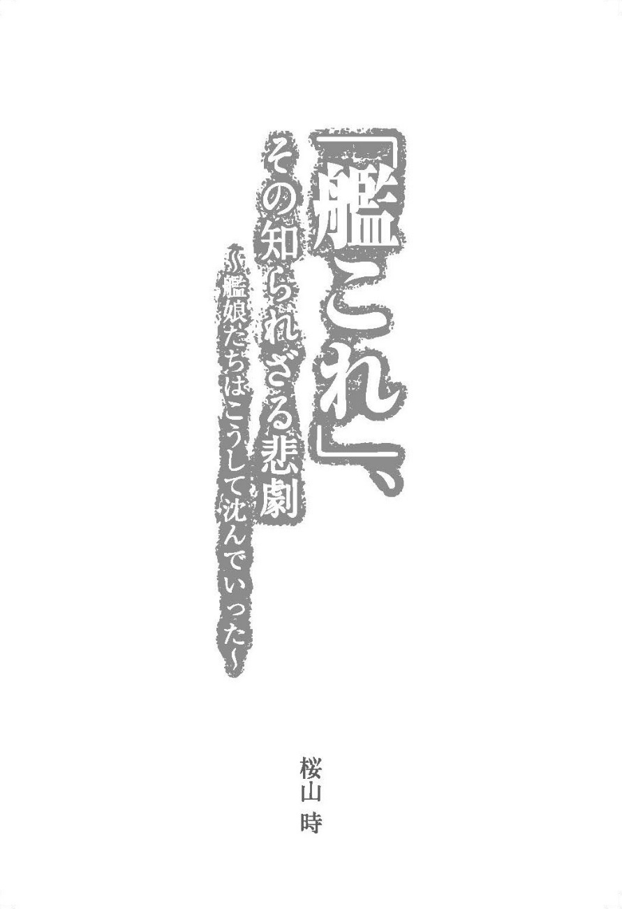

| 「艦これ」、その知られざる悲劇～艦娘たちはこうして沈んでいった～ | |
| 桜山 時 | |
| (2015) | |
長門型一番艦『長門』------ビッグセブンの力、侮るなよ！
長門型二番艦『陸奥』------隠してもしょうがないわね。今度は大丈夫よ！
金剛型一番艦『金剛』------英国で生まれた、帰国子女の金剛デース！
金剛型二番艦『比叡』------気合い！ 入れて！ 行きます！
金剛型三番艦『榛名』------最期まで、戦い抜いた榛名のこと、覚えていてね
金剛型四番艦『霧島』------霧島的には、理論的な考察を心掛けています
赤城型一番艦『赤城』------ごは...あっ、いえ、作戦開始はまだでしょうか!?
翔鶴型一番艦『翔鶴』------私って、怪我しやすいのかしら...
飛鷹型一番艦『飛鷹』------サンフランシスコ航路、諦めた訳じゃないの
飛鷹型二番艦（隼鷹型一番艦）『隼鷹』------あたしと飛鷹ってば、仕方ないねぇ〜
龍驤型一番艦『龍驤』------ソロモン海のようには行かないよっと！
第三章 重巡洋艦 限られた身体に、凝縮された性能を秘めた技術の結晶
妙高型一番艦『妙高』------最後の日まで、共に頑張り抜きましょう
妙高型三番艦『足柄』------勝利が、戦闘が、戦いが私を呼んでいるの！
妙高型四番艦『羽黒』------他の子の改装を...優先してください
第四章 軽巡洋艦 あらゆる任務で役割を果たす、オールラウンダー
川内型一番艦『川内』------絶対夜戦してよね？ 約束よ！
川内型二番艦『神通』------みんな私の事狙うんですもの...ひどいわ...
川内型三番艦『那珂』------那珂ちゃん、現場はいりまーす！
球磨型三番艦『北上』------九三式酸素魚雷満載で重いわ〜
球磨型四番艦『大井』------提督に二〇発、撃っていいですか？
球磨型五番艦『木曾』------まだ不安なのか？ 大丈夫だ、俺を信じろ
吹雪型一番艦『吹雪』------第十一駆逐隊、いつでも出撃できます！
暁型一番艦『暁』------一人前のレディーとして扱ってよね！
暁型二番艦『響』------その活躍ぶりから不死鳥の通り名もあるよ
暁型三番艦『雷』------ただ強いだけじゃだめだと思うの、ね、司令官！
暁型四番艦『電』------沈んだ敵も、出来れば助けたいのです...
陽炎型八番艦『雪風』------幸運の女神のキスを感じちゃいます！
島風型一番艦『島風』------速きこと、島風の如し、です！
白露型四番艦『夕立』------最高に素敵なパーティしましょ？

筆者が『艦隊これくしょん』というゲームを知ったのは二〇一三年の春。
サービス開始と同時に話題になって、ツイッターのタイムラインでそのネタの数が日増しに多くなり、毎日眺めているニコニコ動画に『艦これ』ネタが次々投稿されるようになっていった。
興味は当初からあったものの、ジャンルがソーシャルゲームだと聞いて「何するにも課金なんだろ」「画面連打して、カード集めて合成っていうアレで、ゲーム性なんて皆無なんだろ」等、正直ソシャゲに強い偏見があったため、手を出す気にもならなかったが、結局皆がハマっているから、という主体性がまったくない形で始めることになった。
ユーザー登録、いわゆる『着任』には、登録希望者が殺到していたため、三日ほどかかり、この間も「やっぱりやめよう」と何度思ったことか。
なんとか着任を済ませたら、秘書官ならぬ秘書艦を選ばなければいけない訳だが、その時点では正直誰にも思い入れが持てないので誰を選んだらいいのか分からない。
先に始めていた友人に「最初に選ぶ艦 娘 は、後で手に入りにくい『吹雪』か『漣』のどっちかがいいらしい」と言われて、『艦隊これくしょん』がメディアに出る時に、度々メイン扱いのこの『吹雪』って子でいいや、とそのくらい適当な気持ちで決めていた。
実際始めても、乗り気でないという状況はまったく変わらない。そんな感じなので、自分でもすぐに投げ出すだろうと思っていたが、ミッションという形でやらなければいけないことが設定されているため、慣れないシステムで一見自由すぎて何をすればいいか分からなくなりそうであったが、迷いなくスムーズにプレイを進めることができた。
ＲＰＧ世代なので、コツコツ作業的にプレイしていくのは結構好きだ。そういう意味での『艦これ』の面白さを感じてはいたが、筆者をのめり込ませたのは、初めての戦艦建造に挑戦した時、出てきた戦艦に出会ってからだ。
彼女との出会いで、筆者は知ってしまったのだ。
艦娘------彼女達は、かつて本当に生きていて、戦っていたのだと。
筆者が苦手だったはずのソシャゲにはまりこんだのは、明るく可愛い彼女たちが時折垣間見せる、ただならぬ雰囲気の過去にあった。
それは『艦これ』が流行しなければ、遠い日に置き去りにされたままになっていたかもしれない物語だ。彼女らのエピソードは、詳細閲覧画面で触れられてはいるものの、ゲーム内ではっきりと語られてはいない。しかし、少し調べればすぐに知ることができた。
そうやって知っていった事実が、筆者を『艦これ』の世界に引きずり込んでいった。
国の威信を示し、勝ち続けた栄光の日々、戦士の絆、信念の中に突き進んでいく姿。
その反面として、理不尽な敗北、何の意味もないような死、凄惨な最期。
嵐のような時代の中に様々な艦が生きて、そして戦いの中で沈んでいった。しかし、今こうして現代の電子の海の中に帰ってきて、その中にある物語を我々に伝えてくれている。
ゲームなのに、ひたすら真剣に、筆者はこう誓ってしまっていた。
「提督である自分にミスが無ければ、艦が轟沈することはない。だから、現代では絶対に艦は沈めない」
この誓いが、今に至るまで守れているのはささやかな自慢だ。
『艦これ』において、しばしば口にされる、太平洋戦争におけるキスカ等への突入作戦において、条件が揃わず、それを勇気ある決断で諦めた時に語られた名言がある。
「帰ろう。帰れば、また来られるから」
時に無謀な決断をしたくなることがあるが、それはただ自分が早く楽になりたいだけだ。そんな判断は勇気ではないということも、このゲームから学んだことだ。
こういった想い、『艦これ』の世界にあったものを、同好の士ともっと共有したい、というのがこの本の趣旨である。
もちろん、ゲームとしての完成度がそもそも良好だし、ソーシャルゲームといっても過酷な課金は要求されないのでマイペースでプレイできる。
美少女を愛でるだけでも全く問題無いのだが、艦娘たちの歴史的な背景を知ることで、このゲームは何倍も面白くなるのは間違いない。
この本が、その助けになれば幸いである。
では第一章、筆者に大切なことを伝えてくれ、そして『艦これ』の面白さに目覚めさせてくれた、「戦艦・長門」の話から始めさせてもらおうと思う。
『長門』の物語を始める前に、「戦艦とはなんぞや？」というところをはっきりさせておいた方が、後々のことが分かりやすくなっていいだろうと思う。拙いながら、筆者が調べて知っていったことをまず説明していこう。
筆者の『艦これ』を始める前の感覚は、「大きな軍艦＝戦艦」くらいのものだった。もっと理解が浅く「軍艦は全部戦艦」と思っている人も、きっと少なくない気がする。
こういうものには、きっと定義があるはず、と調べてみた。そうすると、驚きの結果に辿り着いた。なんと「戦艦」に具体的な定義はないというのだ。
あえて言うなら「その当時の最高威力か、それに準ずる火力を有した主砲を持つ、大型艦」というのが妥当な定義らしいので「大きな軍艦＝戦艦」というのも、あながち間違いではなかった訳である。
戦艦が嫌いな男の子は世界中のどこにもいないと思うのだが、日本は歴史的に戦艦愛が、異常といえるくらいに強いということも分かった。その理由の根っこにあるのは、日露戦争時、戦艦『三笠』率いる連合艦隊が、無敵の露 軍バルチック艦隊相手に奇跡としか思えない大勝利をみせたからだ。この勝利によって、日本軍は戦艦への信仰を強めるのであった。
また、太平洋戦争開始までは、冷戦時代の核兵器のような抑止力としての意味さえある戦略兵器、「だった」のだ。長門が生まれる時代までは、少なくとも。
それでは筆者の『長門』との出会いから始めて、彼女が辿った生涯を追いかけながら『戦艦』の時代を見ていこう。
最初のマップ「鎮守府海域」をクリアした頃。艦娘も増え、レベルも上がり、戦力は足りているのだが、そこは筆者も男の子なので戦艦だの空母だの大きくて強い艦が欲しくなってくる。
攻略サイトやツイッター、まとめスレや先にやっている友人たちから情報を集めると、ゲームを始めたばかりの段階でそれらの強い艦を手に入れるには「建造」をするのが現実的だということだった。
『艦これ』において艦娘を獲得する方法は、イベント特典など特別なものは例外として、「ドロップ」と「建造」の二つとなる。
「ドロップ」は、戦闘の結果獲得することで、「建造」は、燃料／弾薬／鋼材／ボーキサイトという四種類の資材を消費して、ソーシャルゲームでいう「ガチャガチャ」の形で獲得するものだ。
そして、狙いの艦娘を獲得するための確率を上げるものとして、「レシピ」という資源投下バランスの数値がある。戦艦の艦娘を狙うためのレシピで最も一般的（二〇一三年八月の時点）だったものは、燃料四〇〇／弾薬三〇／鋼材六〇〇／ボーキサイト三〇で建造を行うというものだ。
先人のデータは偉大である。ネット上の統計に従い、このレシピで淡々と回してみて一発目に出たのが『長門』だった。
レシピを選択し、資材を投じると、出来上がるまでの建造時間が表示される。（「高速建造材」という消費アイテムを使わないなら、１： 00 ： 00 と表示されたら、実時間で一時間待つことになる）その時点で、ある程度できる艦娘が分かるのだ。
この時、表示された時間は５： 00 ： 00 、これは当時では『長門型』つまり『長門』か『陸奥』なのが確定する。そうして、出てきたのが『長門』だった。黒髪の長身、気が強そうで武人めいたルックスもとても好みだった。この時の毛がふわっと立ち上がるような感覚は今でもよく覚えている。この時は、『大和』がイベント限定で、手に入れることが非常に困難だったため、自分が手に入れられる範囲で最強の戦艦を獲得したのだから。
小躍りして友人に電話をして「長門が出たよ、ドヤァ」と言うと、向こうの声のトーンが裏返った。
「長門は半年狙っても出ない人が大勢いる、超レア艦だよ！ 一発引きとかありえない！」
人にすごいと言われて、どんどん気分が良くなってきた。気分をよくしてツイッターなどに画像を貼り付けると、賞賛と怨嗟の声が次々と。
------すごい艦なんだなぁ、という気持ちは、引いた当初はほとんどなかったが、そうしてどんどん強くなっていく。
さて使ってみると......なにこれ。
主砲の一撃でほとんどの敵が粉微塵だ。砲弾が当たれば、これまで手こずらされた重巡リ級だって一撃必殺。こっちの艦隊を多少でも手こずらせたければ、戦艦か空母を連れて来いだ。それまで使っていた駆逐艦や軽巡洋艦とは質が違う。これが自分が戦艦に求めていたものだ。
ほとんどの敵は一撃で沈むし、ダメージもほとんど通らない。ただ、カスリ傷でも修理のためにそれなりの資材を食われるし、強くなるのと比例して弾薬を食う量が容赦なく上がっていくが、それでもその無敵感覚には代えられないものだった。
後になって考えてみると、序盤に『長門』ほどの戦闘力は必要なく、むしろその時点で艦隊が持っていた運用能力を超えており、かえってプレイをキツくしていた気もしないでもないが......そんなことはどうでもよくなるくらいの満足感は確かにあった。
そこでふと気になったのである。自分は『長門』のことを何も知らない。せいぜい、「大和の次に大きな戦艦だったんでしょ」くらいのものだった。
果たして史実ではどんな艦だったのか？
それを知ったことが、筆者を『艦これ』の世界にどっぷり引き入れることになってしまったのだ。
日本は日露戦争後に、米国との敵対構造を深めていく中、米海軍と対抗しうる力をつくる事を目的に「八八艦隊計画」という造船計画を発動したのだという。
その計画により最初に造られたのが『長門』である。
新型戦艦八隻、新型巡洋艦八隻を軸とする艦隊整備計画の第一号戦艦として建造された『長門』は、『大和』の四六センチ砲が登場するまで二〇年もの間、世界最大の巨砲であった、四一センチ砲を搭載していた。
当時米国艦の主砲の口径は三五・六センチ。たかが五・四センチの違い......と言いたくなるところだが、他の条件が同じであれば、破壊力は口径の三乗に比例するという。つまり、四一センチ砲は、単純計算で三五・六センチ砲の一・五倍近い威力があるということになる。
四一センチ砲は、『艦これ』においても序盤、中盤にかけて非常にお世話になる兵装だろう。
普通にプレイしていて、最強の砲である四六センチ砲の数が揃うのには、何ヶ月かかかるが、四一センチ砲は、「開発」で比較的作りやすく、長門型は初期装備で持っているし、金剛型なども改造すると持ってきてくれるなど、入手難度は高くない。
それでいて、通常プレイにおいては相当難易度の高い海域に行かない限り、まったく問題ない火力を誇る。この砲塔を装備した『長門型』は、史上最強の戦艦として世界にその名を轟かせたのだ。
アメリカら海外列強から『不沈戦艦』と讃えられ、その雄々しい姿は日本国民にも『軍艦の王者』『帝國海軍不滅の象徴』『日本の守り』と語られていった。
一九二二年〜一九三六年の一五年間、四一センチ砲の搭載を許され、冷戦時代でいう核兵器的な抑止力を持つ戦略兵器の位置に立つことが許されたのは、たった七隻だけだった。これが艦娘『長門』が度々いう「ビッグセブン」という訳だ（他の六隻は『陸奥』、英国の『ネルソン』『ロドニー』、米国の『コロラド』『メリーランド』『ウエストバージニア』）。
彼女の存在は、日本が欧米列強に比肩する力を持っていることの証明となった。
『長門』は当時の民衆が、世界に対して「どうだ、見たか！ これが大日本帝國だ！ 我々の力だ！」と声高に言える、国民の誇りそのものだったのだ。
日本では『宇宙戦艦ヤマト』があったためだろうか、『大和』に知名度で負けているが、当時は『長門』と『陸奥』こそが日本を代表する戦艦だったのだという。
筆者は恥ずかしいことに、それらを知らなかった。
ネットをみると『長門』の写真は大量に残っている。それは確かに、本当にかっこいい。こんな戦艦が、陸上から見えたらそれはもう体温が上がりまくっただろう。
当時の『長門』は、日本を守るために様々な活躍をし、今からは想像もできないほど人々に勇気を与え続けていたのがひしひしと感じられてきていた。
長門のエピソードは、そのスペックだけではない。
一九二三年の関東大震災。かの大災害の中、『長門』は食料や衣料品を届けるために横須賀へ全速力で航行を開始。しかしその途上、英国の軽巡洋艦に追われる形になった。
『長門』の最高速度は二三ノットとして公開されていたが、本当の最高速度は二六・五ノット。真の性能は軍事機密として隠されていた。英国の目がある所で全速航行を行えば機密が露呈する。虚偽の発表をしていたことが明らかになれば、国際問題にもなりかねない。
しかし、『長門』乗組員達は、処罰覚悟で、被災者を救う事を選んだ。
『長門』が何のために生まれてきたか、といえば、それは国を救うためだろう。
それは「当たり前のこと」だが、時にその「当たり前」をするのが、どれだけ難しいことか。
国家だの権力だのが関わるものなら尚更そうなるのではないか？
長門は、機密や体面など、そういった余計な何かより、己の本分を全うしてくれたのだ。
そして東京へ向かい、救援物資を運び、三万四千人以上の避難民を輸送したという。
------震災で崩れ落ちた街の中、海の向こうから『長門』率いる連合艦隊がやってきたとしたら。それは、目にした人を絶望から救い上げる光景ではなかったのではないだろうか。
長く『長門』は、本格的な戦闘に参加することはなかった。一九三七年の日華事変においても大きな戦闘行為はなく、本格的に戦うということは経験せずにいた。が、一九四一年、太平洋戦争が始まったことで戦艦の、そして時代の宿命により、戦火に身を投じることになる。
『長門』と『陸奥』がいれば、万に一つも負けはない。そう思っていた国民は多かったろう。事実、艦隊としてなら大日本帝国海軍の連合艦隊は世界最強だったし、その旗艦が『長門』だったのだ。
無敵の艦隊を率いる『長門』。
「よし、艦隊、この長門に続け！」
という言葉は、当時の多くの人々が持っていた、勝利の確信と共にあったものに思える。
しかし、彼女を待っていた現実は厳しいものになっていった。
どんなものでも、いつまでも「最強」ではいられない、彼女もそうだったのだ。
『長門』は時代が移り変わり、戦艦に求められる性能が変わるのに合わせて繰り返し改装を受けていったが、しかし『長門』が必要とされた、「大艦巨砲主義」の時代は、もう終わりを告げていたのである。
大艦巨砲主義とは何か？ と言うと、太平洋戦争開戦前まで制海権を巡る戦争というものは、戦艦の大砲同士の撃ち合いで勝負が決まるものであった。それに勝つにはより大きく、より強い砲塔を持っていればよいと考えられており、それに則 って巨大艦に載せた大砲により戦術的な勝利を収めよう、という考え方のこと、である。
実際、日本は日露戦争における日本海海戦にて、強国ロシアの無敵と言われたバルチック艦隊を打ち破り、ロシアを蹴落とし一流国へ名乗りをあげている。この勝利により得たものは確かに多いが、長い目で歴史を見れば失ったものも多かった。それは謙虚さと状況を冷静に捉える客観性である。
時代が流れ、戦艦より速く動き、戦艦より遠くから攻撃ができ、大砲より当たる確率も高く、しかも戦艦より安く使える兵器が生まれ、進化を始めていたのだ。
それは、高速で航行可能な艦であり、空母と艦載機であり、潜水艦だった。この三つが、太平洋戦争の要所で確実な戦果を上げていった。
それに比して『長門』は期待された働きができない。その事実こそが彼女の〝今〟の価値を如実に証明していたはずだった。それなのに、日本は一九〇五年の勝利の味が忘れられず、『大和』が沈むまで大艦巨砲主義の呪縛に囚われ続けたのである。
そもそも、一九四一年の時点で、『長門』は教練にて正規空母『加賀』と軽空母『龍 驤 』とその艦載機に圧倒されている。
『龍驤』も、「あ、あれ？ 長門はんどうしたん？」というような感じではなかったろうか。
最強の戦艦であったはずの『長門』が、空母と軽空母一隻ずつになにもできなかったと聞いて、筆者は愕然とさせられた。いや、兵器とはそういうもので、時の洗礼を如実に受けるものだ。この時点で、彼女の歴史的役割は終わりを見せ始めていたのだろう。
しかしそれでも、真珠湾攻撃、ミッドウェー海戦、捷 一号作戦など、様々な戦いに参加。
太平洋戦争終盤に、空襲を受け艦橋を破壊されるも沈没はせず、一九四四年、日本が逆転の望みをかけて、連合艦隊の総力を注ぎ込んだレイテ沖海戦のサマール沖海戦では、『大和』と共に敵艦に対し激戦を乗り越えていった。
『長門』は、旧型ながら、力を尽くし、多くの作戦で仲間を助け、そして見送り、彼女自身は日本の誇りを守るようにして最後まで戦いぬき、生き残り、終戦の日を迎えることになった。
しかし誇り高く闘い抜き、全てを終えたはずの『長門』に、残酷な試練が待っていたのだ。
終戦後、『長門』は賠償艦としてアメリカ軍により接収。そうして海の果て、ビキニ環礁まで曳 航 され、「クロスロード作戦」と名付けられた洋上での核実験における標的艦にされることになる。
これは、艦船や機器への影響、その後何が起きるかなど、核兵器の威力とその効果を検証するために行われたものであり、『長門』ら日本の艦だけではなく、ドイツや英国の艦が約七〇隻集められて行われたものである。煙突、マストを撤去、そして武装を解除された上に軍艦旗を降ろされ、星条旗を掲げられた。さらに艦首に穴を空けられて、機雷まで取り付けられたそうである。
日本だけに対して見せしめに行われたものではない。それは分かる。でも、やはり核攻撃にさらされるのは、あの、大日本帝国の象徴であった『長門』なのだ。
これは、今から考えても日本国民から見れば、どう事情を考えたって、見せしめとしか思えない屈辱的な最期を与えようとしたとしか思えないだろう。
『長門』は戦いの果てに、栄光無き最期が待つ海に拘束された。
あとは、何もかもを無にする光の中に飲まれていくだけだ、とそう思われた。
最初の攻撃、全てを飲み込む白い光が広がっていく。
そして天地を揺るがし轟く爆音。後には何も残らないはずだった。
しかし、である。最初の核撃で、他の艦が沈んでいく中、『長門』は爆発と業炎に耐え切ったのだ。傷だらけの旧型艦は、日本を敗北させた新時代の兵器の前に、ただ塵になるだけだったはずだった。
「この体には、みんなの願いが篭 っているのだ。この程度では、沈んでやれんよ......」
------すべてをかけて耐え切った『長門』だが......それでも、終わりにはならなかった。実験台でしかない『長門』らに向けて容赦の無い二度目の核攻撃が行われた。その爆発は、百万トンもの海水を空に弾き飛ばし、原子雲が立ち昇った。
終わった------静寂が戻る、そうして破壊しつくされ全ての生命が死滅し、地獄となった海には、何も残っていようはずがない。
......それでも『長門』は、そこにいた。何かに支えられるようにして海上に残り続けたのだ。
どうして『長門』が残れたのか。製造技術の高度さを証明したからか、『長門』に乗った軍人たちの確かな運用技術か------オカルト的なことを言ってしまうが、彼女を支えたのは、戦士の誇りや不滅の遺志とか、そういうものではなかったか。いや、そうだと信じたい。
日本は沈まない、まだきっと立ち上がれる、それを確かに『長門』が証明してくれたのだと。
実験は終わった。その結果訪れる筈 の運命に勝利したかのように、長門はそこに残り、日本を敗北させた核攻撃の蹂 躙 に耐え切った。力の蹂躙に彼女は屈しなかった。
その姿は世界から賞賛を送られたという。
「長門、沈マズ」
その報を受け、彼女はやはり不滅なのだと皆がその勇壮な姿から勇気を受け取ったという。
長門は、そのままそこにいる、とその時誰もがそう思ったろう。
けれど、そうはならなかったのだ。爆撃から五日目の夜が明けると彼女の姿は忽然と消えていた。
すべての攻撃に耐え切り、ボロボロになりながら、勇気を失っていた者達に彼女はこう言って、なにか大事なものを見せてくれたのではないか。
「私達が、守った日本だ、後は任せたぞ」と。
そうして、誰にも見られることなく、深夜に沈んでいたのだ。
残された者達が、『長門』から任されたものを噛み締めた後、彼女は全ての務めを果たしたことを知り、誰にも見られずに事切れていったのでは------そんな戦士の姿が頭に浮かんだのは、筆者だけではないだろう。
彼女は今、現存する最後のビッグセブンとして、海中に眠っている。
彼女は勝てなかった。だが全てが終わってもなお、大切なものを遺してくれていたのだ。
------こんなことがあったのだ。
そして、『艦これ』に。彼女はネットの海で、提督たる筆者の指揮下で戦っている。
これは本腰を入れようと思い始めたのだった。
『長門』を語ったなら、一緒にその生涯を知った妹『陸奥』の物語にも触れなければならないだろう。『陸奥』の艦名は、本州の東北端にある国の旧名から。ちなみに『長門』は西南端の国の旧名から取られており、二人の名前は対になっている。
『艦これ』内においては、『長門』とほぼ同等の性能を持つ、超・強力な戦艦だ。
『長門』と使用感もまったく変わらない。『大和型』の登場、『ビスマルク（Ｂｉｓｍａｒｃｋ）』の「ｄｒｅｉ（改三）」実装、『金剛型』全ての改二化があり、初期より重要度は落ちているにしても、未だに強力で、能力の割には手に入りやすさもあって親しみ深い。大食艦ではあるにしても、『大和型』や『ビスマルク・ドライ』に比べればリーズナブルなのもよいところ。長髪の『長門』に対してくせっけのショートカットという対照的なところも、彼女のキュートさを引き立てている。何が言いたいかというと、むっちゃんかわいいのである。
諸々、実に使える彼女であるが、だがしかし知っての通りいわゆるネタキャラ、いじられキャラという側面も強く持っている。ｃ
その理由はおおまかにふたつ。前述したが、建造レシピを回した時、まず艦種より先に、建造時間が表示されるのだが、その時間が「５： 00 ： 00 」と表示された場合、建造される艦は『長門』『陸奥』『ビスマルク』の三艦のうちどれかになる。ちなみに実際誰が来るかは、表示通り五時間の経過を待つか、高速建造材（建造妖精さんが火を出すグラフィックが入ることから、俗に「バーナー」「炙り」等と言われる）を使わないと分からない。
この中で『陸奥』が通常マップでもドロップする可能性が『長門』よりは随分高いため、建造時間「５： 00 ： 00 」の艦の中では、一番入手難度が低い。
『長門』はドロップ条件が厳しく、『ビスマルク』に関しては大型建造という、大量の資材を投入する方法でなければ出ない。そのため、「５： 00 ： 00 」という数字が表示された後、一番出来上がって欲しくないのが『彼女』、という訳なのだ。
筆者は『長門』が先に出たので、あまり気にならなかったが、渾身の思いでレシピを回し、「５： 00 ： 00 」と表示され、胸を期待でいっぱいにした挙句、結局『陸奥』というパターンは『艦これ』の中でも結構な「あるある」なのではないだろうか。
なので「どうせ陸奥になる」「すべてが陸奥になる」と言われたり、掲示板で「５： 00 ： 00 」と表示されたと報告があると、『長門』『ビスマルク』建造を邪魔するネットスラング、ラバウルサーバが発祥とされる、『長門』も『ビスマルク』も出るな、という呪いのこもった「陸奥になるビーム」という書き込みが乱舞したり、などという現象が起きるのがお約束になっている。
また、なぜこうなるかと言えば、それは『陸奥』の「運」の能力値があまりに低いところにある。無改造の初期値は、なんと３。（『長門』は20 ）改造しても５であり、現在全艦娘中、ワースト２位なのである。（ちなみに、ワースト１位は正規空母『大鳳』、彼女は初期値で２、改造して４となっている）。
そのため、どうしても総合力ではっきり『長門』には劣るのは間違いないだろう。
「運」がゲーム内のどこに作用しているかははっきりと分かってはいない。夜戦突入時、大ダメージを与えることができる「カットイン」攻撃の発生確率に影響しているが、あとはまだ曖昧なままだ。しかし、初撃大破したり、集中攻撃をされたりすると、「これも、陸奥の運が低いせいだ！」などと思ってしまう、そういう精神的な被害もある。
さて、ではどうして『陸奥』の運の値はここまで低いのか？ それは、彼女の最期が示している。
では、そこに至る前に、彼女の誕生から追っていこう。
『陸奥』の誕生の経緯は、その後の運命を象徴するかのように複雑だ。
『長門』と同じ、「八八艦隊計画」下で、一九一八年六月一日が起工日、一九二一年一〇月二四日が就役日となっているのだが、実は就役の段階で完成してはいなかった。
（ちなみに「起工日」は建造開始日、「進水日」は船体完成日、「竣工日」は艤 装 〈船体に後から取り付けられる装備〉工程が終わり引き渡しが可能になる日、「就役日」が任務に着いた日のことだそうだ）。
どうしてそんなことになったかと言えば、「ワシントン海軍軍縮条約」において「未完成艦は廃艦」とされており、『陸奥』は未完成であったのだが、これを廃艦にしないために日本側が「すでに完成しているので廃艦対象にはあたらない」と強弁したので、こういう状況になったのだ。
さらに、日本の言い分が正しいか確かめるため、アメリカとイギリスが調査に訪れた際、日本は様々な妨害・偽装工作を行って有 耶 無 耶 にしたそうだ（例えば、医務室に誰もいないと不自然なため、視察担当が来ている間だけ、近くの病院から治療中の患者を運びこんでいた、というようなエピソードが残っている）。
筆者は日本人だし、『艦これ』好きだし、むっちゃんも好きなので、なるべく擁護したいのであるが、さすがに「いや、それはさすがに通らないだろう」と冷えたつっこみを禁じ得ない。
とは言っても、無理を通せば道理は引っ込むもので、結局『陸奥』の保有は認められた。が、相手もさすがにただでは引き下がらず、米国からは『コロラド級』三隻の建造続行、英国は『ネルソン級』二隻という、超弩級戦艦の建造を認めさせられている。後の視点から見れば、マイナスにしかならなかったと言えそうなのだが......ともあれ、こうして『陸奥』は生まれた。
当時、民間では『長門』より『陸奥』の人気のほうが高かったそうである。
なぜかと言えば、『陸奥』の進水式には、皇后陛下がご臨席され、その様子が教科書に載せられたことと、『長門』が呉生まれなのに対して、『陸奥』は横須賀生まれで、東京から近いため人が集まりやすく、そのため認知度が高かったからだという。
姉妹揃って、日本の象徴として海に君臨していた彼女が初めて参加した戦いは、就役から一六年後の、一九三七年の日華事変だった。といっても、砲火を交えることはなく、輸送任務だけを行っている。それからまた歳月が流れ、太平洋戦争が起き、ミッドウェー海戦に参加するも、ここでも交戦はない。
次に向かったのはガダルカナル方面だ。米国と南方での支配権を争った、重要な戦いだった。
ここでの第二次ソロモン海戦で、前進部隊に組み込まれ、いざ決戦といきりたつも、この戦いの中心となるのは、高速の重巡部隊、高速戦艦、駆逐艦であり、脚の遅い『陸奥』は足手まといとされ、現地でやったことは、駆逐艦への給油等だった。
「日本の誇り」と讃えられ、開戦前の日本人の心を支え続けていた『陸奥』が、いざ戦争が起きると「役に立たなかった」のである。
どうしてこうなったかといえば、その理由は『長門』と同じく『陸奥』のコンセプトそのものが時代遅れになっていたからだった、というのが一番大きいのだろう。
そして、不幸艦と言われる所以 には、決定的なものがある。それをこれから語っていこう。
一九四三年六月八日、霧深い日、呉近くの柱島泊地で停泊中、大爆発が起きた。
約一キロ離れて停泊していた戦艦『扶桑』からも見え、『扶桑』そして、回航中だった『長門』乗組員に、戦闘配置につくよう命令が下された。
その時『扶桑』が見たものは------沈みゆく『陸奥』の姿だった。
彼女は、驚きに目を見開いていたろう。日本の誇りそのものと言われた長門型の片翼が、まるで海底に棲む巨大な悪魔に引きずり込まれるように見る間に消えていくのだ。
指令を受けた『長門』が、自分と同じ力を持つもうひとつの無敵の戦艦、妹の『陸奥』を助けるために現地へ急いだ。
『長門』の胸中はこんなものではなかったろうか、「なぁに、不意をつかれただけだ、陸奥が誰かに負ける訳がない。私と合流すれば、どんな相手でも訳はないさ」、と。
しかし、現地に到着した『長門』が見たものは、完全に爆沈しわずかに艦尾だけ見せ、その身体のほとんどを海に沈め、変わり果てた死体となった、妹の姿だった。
「間に合わなかった」
『長門』はその時、そう思ったのではないだろうか。失ってはいけないもの、負けるはずがないもの、それが突然消えてしまったのだ。自分の責任ではないとしても、どれだけ悔やんでも足りなかっただろう。
------今、こうして考えても、現実に起きた事だとは思えない。
一体、『陸奥』に何があったのか？
その原因はずばり「分からない」のである。現在でもだ。
そもそも、これほどの短時間でどうして沈んだのか？ 後に『長門』が核爆発にも耐えたというのに......。敵から、なんらかの奇襲を受けたのではないか、ということも考えられたが、柱島泊地は大日本帝国海軍の要所中の要所、呉のすぐ近くであり、十全な軍備によって守られた要塞だ。
この時点で、敵がここまで侵入し堅牢無比を誇る『陸奥』を撃沈させることなどがあれば......それは、敵が日本という国の急所に、ナイフを突きつけたことを意味する。だから『長門』に戦闘配置に着くよう命令が下される程、最前線のような緊張が長く続いたそうだ。
しかし、結局敵の姿はなかった。『陸奥』は自爆し、沈んだのである。
調査していくうちに、主砲三番砲塔近くの火薬庫で爆発が起きていたことが分かり、それが沈没の原因ではないかと言われている。内部の人間に疑わしいものがおり、その犯行の可能性も強く語られたが、もしもの話、人為的なものだったとしたら......やっていいことと、悪いことはある。
『陸奥』は誰かひとりのものではないのだ。皆の勇気であり誇りであり、そこに未来を見ていたのだ。僅かな人間の勝手な思惑で、そんなことをしていいはずがない。しかるべき報いを受けなければならない------しかし、証拠はなかった。結局真相は藪の中、である。
この事件はすぐに情報操作が行われた。『陸奥』爆沈に関係した死体、物品は回収され、一般人にも口外の禁止が告げられたという。
爆沈直後からすでに、『陸奥』の引き上げ、修理は検討された。その際、三ヶ月で再び戦場に出られるように、という要望があったそうだが、これはさすがに冷静な判断ができていたとは思えない。『陸奥』が沈む、というのがそれほど信じ切れないことだったというのを表しているのだろうか。
結局、『陸奥』爆沈の事実が公表されたのは、事故が起きてから二ヶ月後。日本の象徴が沈む、というその報を受けた、日本国民の心境は察するに余りある。
------その無念を晴らしたいと、多くの人が思っていただろう。
さて、時が流れて、『陸奥』の各部分は引き上げられ、全国各地に展示されている。東京近郊では、船の科学館に四一センチ砲が、靖国神社に一四センチ砲が展示されている。その巨大さから在りし日の姿を想像するのは、『艦これ』好きな提督諸氏には、難しいことではないだろう。未見ならぜひ脚を運ぶのをおすすめしたい。
『艦これ』内で運の値が低いといっても、その力は間違いのないもの。
「私の出番ね。いいわ、やってあげる！」
『陸奥』が戦場に出て、こんなことが言える、というのは、過去を考えるとなんだか温かい気持ちになってくる。
「まぁ、隠してもしょうがないわね。今度は大丈夫よ！」
などと言ってくれる強い女性になっているのである。彼女に欠けている部分は、戦略と愛でおおまかカバー、筆者提督を強力に助けてくれている。
史実の『陸奥』は、象徴以上の活躍はできなかったが、でも現在はこう言える。
『長門』と『陸奥』は、我が艦体の誇りである。
多くの人が、ゲーム序盤に慣れた頃に出会うことになる『金剛』『比叡』『榛名』『霧島』の、高速戦艦金剛四姉妹。
戦艦には、より手に入りやすい『伊勢型』『扶桑型』があるが、これらは低速戦艦であり回避が劣る上に、改造すると「航空戦艦」となり性能の方向性が変わってしまう。かといって『長門型』はそうそう出てくるものではない。そこで『金剛型』が欲しい！ となる。そういう時期が皆さんにもあったのではないだろうか。
おまけに、編成任務で〝金剛型戦艦「金剛」「比叡」「榛名」「霧島」全四隻の高速戦艦を集中配備せよ！〟があり、これを果たすと第四艦隊を編成・運用することが可能になり、資材回収効率がグンと増すので、とにかく早く揃えたかったものである。
また、性能と消費資材のバランスが良好で、通常運用では『長門型』より使いやすい。
それに加えて、四姉妹すべてに、「改二」が実装され、さらに仕様変更によって、「徹甲弾」が装備できるようになったため、重要度も人気もさらに増している。
仲良し四姉妹を、全員改二にして、一線級で使っている提督は、筆者の知人に限ってもかなり多い。そしてどこでも、期待通りの活躍をしてくれているようだ。
さて現在、ある程度プレイを続けた提督の艦隊の中では、四人揃って今日も仲良くやっているだろう、金剛姉妹達。
------調べてみると、この姉妹達にもまた、長く辛い歴史があったのである。
謎の英語交じりの日本語で話し、プレイヤーに向かって、「ＨＥＹ、提督ゥ、見てるだけでも飽きないネ！」などと言うように、艦娘の中でも提督が大好きなタイプ、いわゆる「提督ＬＯＶＥ勢」の筆頭。英国生まれだけに、紅茶へ並々ならぬこだわりがあるようだ。
お団子つきの栗色のロングヘアーがキュートで、現在改二にまでなれることから、性能においても申し分なく、かなりの人気キャラである。
そんな金剛型のネームシップ『金剛』を筆頭とする、『金剛型』が作られていった経緯は、かなり複雑だ。
日露戦争に勝利した日本だったが、当時は技術不足であり、艦艇建造のほとんどを英国に依存していた。もちろん、自国でも開発ができるようにならなければ、資産をどんどん海外に流出させてしまい、自前の技術も育たない訳で、なんとか高性能の戦艦を自国で造れるように研 鑽 を重ね続けていた。そんな折、一九〇六年に、英国が『ドレッドノート』、「恐れ知らず」の名を持つ戦艦を生み出した。
一万八千トンの巨体に、新型の蒸気タービンエンジンにより、従来戦艦より三ノットの高速化、三〇・五センチ連装主砲五基を持つことによる火力の劇的な増加、と、大艦巨砲主義の理想を体現したような戦艦の登場に驚き、世界各国は競うように『ドレッドノート』と同級、つまり「弩 級」戦艦を建造。さらに一九〇九年、英国自ら「スーパードレッドノート級」、つまり「超弩級」戦艦である『オライオン』を建造した。
これを見て、日本は「英国の技術を真似よう！」と考えたのだった。
『金剛』の建造が決定されたのは一九〇七年、当初は装甲巡洋艦として計画されていた。
戦艦には、通常『大和』『陸奥』のように、国の名前がつくのが習いであるが、金剛型四姉妹には山の名前があてられているのは、元々戦艦として計画されたのではないからだそうだ。
当時の日本は正直、造船技術の進化についていけておらず、自力で強力な艦は造れなかった。これを自ら認めた日本がどうしたかと言うと、そこは技術立国の面目躍如。パクリ、いや技術を採り入れて進化させる力には定評がある。まず英国に超弩級戦艦を発注し、それをとことん解析することで、技術を手に入れようと考えたのだ。
そうして英国のヴィッカース社に発注し、出来上がったものが、金剛型第一番艦、『金剛』なのだった。言うなれば日本発の英国製であり、だからあのインチキもといカタコト英語混じりの言葉で話すのだろう。
その技術を元に『金剛』の妹たちは国内で建造されることになった。つまり、下の三姉妹は、純国産超弩級戦艦という形になっている。
彼女ら姉妹は、末妹『霧島』でも、起工が一九一二年という旧型にも関わらず、二度の改装を経て時代に対応した高速戦艦となり、一九四〇年代の太平洋戦争で、最前線において活躍を繰り返したのである。開戦当初、『金剛』『榛名』は南方戦線へ向かいマレー作戦へ、『比叡』『霧島』は真珠湾攻撃へ参加し、多くの武勲を挙げている。
『金剛型』は当初から高速戦艦であった訳ではなかった。
第一次世界大戦から得られた情報から、まず『金剛』に一九二八年、第一次改装が行われ、続けて一九三五年に大規模な推進機関の換装と兵装強化が施され、傑作艦と後の世にまで長く謳 われる高速戦艦が生まれる、という流れがあった。
どうして「高速戦艦」なるものが必要とされたかと言えば、ここまでの間に何度か説明しているが、それは戦術思想の変化によるものだった。
大戦艦同士が砲火を交える時代は終わりつつあり、従来の戦艦より速力の高い空母から出撃する航空戦力が主たる打撃力を担う。
そして戦艦はその護衛となる、という形が主流になっていく時代の流れの中で、空母に追随できる速力のある戦艦が必要とされた。そして、元々装甲巡洋艦として考えられていた『金剛型』は高速戦艦化に適していたのだ。
さて『金剛型』は、当時世界最強の戦艦として誕生し、三〇年近くを経てから始まった太平洋戦争でも、実戦で優れた力を発揮していった。
『金剛』と『比叡』は、マレー作戦にて、当時ほぼ不可能と言われていた「航空機の雷撃および爆撃による戦艦の撃沈」を成し遂げ、英国の最新鋭艦『プリンス・オブ・ウェールズ』と『レパルス』を落とすことに貢献している。
その後も数々の戦いに参加しているが、『金剛』が名を上げた場所と言えば、一九四二年の「ヘンダーソン飛行場砲撃作戦」においてだろう。
日本軍はガダルカナル島を確保し、南方制圧の拠点にしようとしていた。そのためには補給ラインの確保が必須だが、そこに米国のヘンダーソン飛行場が存在することで、制空権を奪われていた。だからまず、ヘンダーソン飛行場を攻略する必要があったのである。本来、航空機の相手は航空機が担うべきだが、日本の航空戦力では対応が難しいと判断された。
そこでどうしたかと言えば、高速戦艦の機動力を活かしての艦砲射撃で飛行場を破壊、無力化するという作戦が立てられたのだ。
この作戦を知った時、筆者は歴史においても戦術についても素人ではあるが、これは作戦ではなく、こんなことできたらいいなというレベルの願望だと思う。しかし、これは実際に行われたのだ。
『金剛』『榛名』を中核に、「第二次挺身攻撃隊」が編成され、彼女らには『艦これ』内でも、度々地上基地相手に大活躍してくれる、対空兵器ながら地上施設にも有効な焼夷効果を持つ「三式弾」と、時限装置付きの榴弾である「零式弾」を装備。
そうして、高速艦隊の速度を活かし、三式弾と零式弾と、飛行場の前の水域を行きつ戻りつしながら、さらに徹甲弾と副砲によって追撃、この艦砲の往復ビンタにより、ヘンダーソン飛行場を破壊することに成功してしまうのだった。
歴史的で奇跡的な勝利だった。全てがうまくいった、その筈だった。
しかし、驚愕の事実が待っていた。
ヘンダーソン飛行場は、すでに新しい滑走路が完成しており、そちらが生きている以上、飛行場を陥落させ、制空権を奪ったことにならなかったのだ（すべての力を出し尽くしてボスを倒した、と思ったら、第二形態があった、というような感じだったろうか）。
ヘンダーソン飛行場を巡る戦いには、姉妹の『比叡』と『霧島』も巻き込まれていく。
『金剛』のその後は『比叡』と『霧島』の物語が終わった後に、語るのが順序として正しいだろう。しばらくは、彼女の妹の話を聞いてもらいたい。
外ハネ髪が特徴で、プレイヤーに「司令には！ 恋も！ 戦いも！ 負けません！」と言い放ち、さらに姉の『金剛』が大好きすぎることから、「クレイジーサイコ妹」とまで言われることもある彼女。最近、実装された時報ボイスから「自慢のレシピの比叡カレー」というものを得意としているのがわかるが、それを避けて司令が逃げまわっていることから、その味はどうやら彼女の自信とは反するもののようだ。
さて、その『比叡』についてである。結局は『金剛』同様に高速戦艦へと改装されることになるのだが、「ロンドン海軍軍縮条約」が結ばれた一九三〇年の時点で改装が最も遅れていた『比叡』は、一部武装撤去され、一九三三年に一度は練習艦へと転換されてしまったのだ。
次女にも関わらず、姉妹から置いてけぼりにされた感があるが、この時期、『比叡』は、さらに『御 召 艦』へと改装され、三回、昭和天皇がご乗艦される、という栄誉を受けている。このため、『比叡』の人気は高く、切手にも描かれ、当時最高の人気を集めていた『長門型』に匹敵するほど親しまれたそうだ。
その後、一九三六年。ロンドン軍縮条約の期限が切れると、『比叡』は姉妹が二回に分けて受けた大改装を一度で済ませ、再び戦艦へと戻ることになる。
この際、面白いのは『大和型』の実用試験として、艦橋構造を「戦艦艦橋装置標準（案）」として、新しく制定された案に準じて作られ、また射撃方位盤、測 距 儀 などに『大和』と同じものが使われているのだ。「私の身体には、大和と同じ血が流れているのよ！」という感じである。
そうして、いくさ場に再び還った『比叡』は、再度御召艦としての務めを果たした後、第一航空戦隊（一航戦）の随伴艦としての任務を果たし、その後『霧島』と共に、四姉妹揃ってセイロン沖海戦にも参加と、太平洋戦争緒戦の数々の勝利に関わり、一度帰国した後、また姉妹揃ってミッドウェー海戦にも参加している。
そして、運命のガダルカナル島での海戦が、彼女を迎える。
『金剛』『榛名』らが、ヘンダーソン飛行場への砲撃を成功させるも、まだ飛行場は生きており敵の制空権は奪えず、連合艦隊は追撃をかける必要に迫られた。
そのために「第三次ソロモン海戦」が起きる。この戦いで『金剛』『榛名』に代わって中核を担ったのは次女『比叡』末妹『霧島』の二隻、彼女らが飛行場砲撃に向かう。
しかし前回のようにはいかなかった。一一月一二日の深夜〇時四〇分。連合艦隊はルンガ沖にて待ち伏せをしていた米国軍と激突。インファイトでの撃ち合いをしなければいけない状況となった。
深夜だった。暗闇の中、闇雲に撃っても当たらないし、同士討ちの可能性も大きくなってしまう。
誰かが、やらなければいけないことがあった。そしてそれを行えば、やった者はほぼ確実に沈んでしまう、というのは、これまでの夜戦においても明らかだった。
やらなければいけないことというのは、「探照灯で相手を照らすこと」だ。
それをすれば、確かに相手の姿は見えるが、逆に言えば向こうからもこちらが見えるのだ。だから、探照灯を使うということは、相手から集中砲火を受けることを意味する。
それをやったのが、『比叡』と駆逐艦『暁』だった。
全て分かっていて、覚悟の上だったはずだ。『比叡』と『暁』は、先へ進むものへの礎 となるために、光を灯したのである。
『暁』はたちまち轟沈、比叡も五〇発以上の砲撃を受け、艦橋破壊、通信、操舵不能という、目と手足を奪われた状態となった。
彼女らが照らした道を征った駆逐艦『夕立』が伝説となった大戦果を上げるも、その『夕立』も沈み、『天 津 風 』『雷 』も損害を受け、全体の被害は尋常なものではなくなり、大敗が決定づけられる。『比叡』らは戦場を離脱したが、彼女を度重なる悲運が襲っていく。
『比叡』は『霧島』の影を追う様にして、真っ当な航行がままならない状態のまま、離脱をはかる。
そうしながら修理を続け、艦体の確保を図ったがしかしどうにもならず、排水ポンプが停止し浸水が増加。その場での舵取機能の復帰が絶望的となった。
流されていく『比叡』を何とか救おうと、軽空母『隼鷹』が残り僅かな戦力を出撃させ、航空機から援護を試み、また乗組員による水中作業が行われたが、焼け石に水にしかならなかった。
妹『霧島』による曳航も試みられようとしたが、彼女も深い傷を負っており、とても『比叡』を支えられる力は残っていなかった。『霧島』でさえ、伸ばした手を諦めて戻さざるを得なかったのだ。
さらにそこへ、ヘンダーソン基地から発進した米軍航空戦力が襲い掛かる。この爆撃を、死に体となりながらもことごとくかわし、一時期は復帰が可能なのか、という期待がよぎった。
しかし容赦なくそして執拗に襲いかかる米航空機からの雷撃が命中。
ここで「機関室全滅」の報告が入るに至って、『比叡』を処分することが決まった。自沈処分が施された比叡は沈み始める。
しかし、実は機関室全滅は誤報だったのだ。でも、もうすべてが決まってしまった後で、駆逐艦『雪風』による、自軍艦への魚雷攻撃、いわゆる雷撃処分が下された（※異説多数あり）。
『雪風』の魚雷は命中するも、『比叡』はまだ、沈まなかった。しかし『雪風』も、これ以上海域にとどまることはできず、離脱をする。
『比叡』夜戦時のどこかやるせない「私、がんばるから、見捨てないでー！」という言葉は、自軍に向けられた悲痛な叫びなのかもしれない。
各地を転戦し、日本のためにその力を示し続けた彼女の、最期の地となるのは、『金剛』と『榛名』が血路を開いた、その後の戦場だった。後の世から穿 った見方をすれば『金剛』『榛名』らがもたらした大勝利が、彼女の死を呼び込んでしまったのだ。
『比叡』の喪失は大日本帝国海軍が初めて経験する戦艦の喪失であり、そして四姉妹初めての犠牲者となったのが彼女だった。
ひたすら健気でまっすぐな子、あまりにも良い子なので、心が汚れた筆者提督や、他にも多くのプレイヤーらは当初「絶対裏がある」と言っていたが、まったくそんなことはないようである。「改二」が実装はかなり早くからアナウンスされていたものの、姉妹で最後となり、そのため報われないような印象があった。しかし、『金剛』から九ヶ月ほど遅れて、二〇一四年七月二八日のアップデートでようやく改二になれて、元から高い人気に加えて、さらに性能面・コレクション面からの注目度が急上昇。
信頼と安心の金剛型改二の性能に加え、貴重な装備を多数持ってきてくれるという使える艦娘。そんな金剛姉妹の三女『榛名』の、誕生までの経緯は『金剛』『比叡』と同じ流れの中にある。
ただ、彼女と、末妹『霧島』が姉ふたりと違うのは、民間造船所に発注されたという点だ。『榛名』が川崎、『霧島』は三菱、ほぼ同時に建造が開始され、二社は当然ライバル心をぶつけあい建造を進めていった。
造船において、「起工」「進水」「竣工」がいつ行われたかは、記録に必ず残っているほど重要とされている。中でも引き渡しが可能になる日、「竣工日」は特に注目されるものであり、当時、『榛名』と『霧島』、どちらが先に竣工できるか、というのが注目を集めていたという。しかしここに悲劇が起きた。直前の故障により試運転が遅れることになった、川崎造船所の工作部長が自刃してしまうのである。
結局、『榛名』と『霧島』は同日に竣工することになったのは、この事件があったことへの配慮だと言われている。
彼女もまた、『金剛』と同じく、第一次改装を受け、その後、『比叡』と同様、御召艦も務めている。さらに一九三三年、高速戦艦化への第二次改装を受け、太平洋戦争へと向かっていく。
そこで姉妹と共に、様々な戦いを重ね、『金剛』と共に、「ヘンダーソン飛行場爆撃」を成功させるも、直後、姉妹を失うという悲劇を経験してしまうことになったのだ。
彼女のその後の運命は、また後で語っていくことにさせてほしい。
眼鏡にボブカット、見るからに理論派、眼鏡をクイッと持ち上げて「------全て計算通りです」とか言いそうな彼女だが、彼女が喋ることを聞いていても、頭脳派にはどーにも思えない。しかも、史実を見ていると、世界の艦戦史を見回しても、そうはないとされる戦艦同士の凄絶な殴り合いをするなど、どうみても武闘派なのである。
三菱造船所で作られた彼女は、『榛名』と同じく、第一次改装を終えた後、御召艦を経験。そして一九三六年に第二次改装を完了させる。太平洋戦争開戦の火蓋を切った一九四一年の真珠湾作戦には『比叡』とだけだったけれど、つづくセイロン島沖海戦、ミッドウェー海戦など名だたる戦いには姉三人と揃って参戦。南太平洋海戦から帰還した後、再び『金剛』『榛名』とは別行動となった。
『金剛』『榛名』がヘンダーソン飛行場への砲撃を成功させるも、第二飛行場が残っていたため、その制圧へと部隊を繰り出した、第三次ソロモン海戦第一夜戦で、『比叡』が沈んだ戦いの後、連合艦隊司令長官・山本五十六は『霧島』らに再度の砲撃を命じた。
一九四二年一一月一四日、重巡『鈴谷』『摩耶』による飛行場への砲撃が行われるが、有効な打撃は与えられないまま、夜戦へ突入。再び乱打戦となり、戦場は混沌の渦の中に叩き込まれる。
混沌に満ちた戦乱の炎の中で、『霧島』と対峙したのは、米戦艦『サウスダコタ』。一九四一年に就役したばかりの、バリバリの最新鋭艦だ。しかも『霧島』は、米艦隊と遭遇することが想定されていなかったため、装備していたのは、ほとんどが対地砲撃用の三式弾。
つまり、戦力において勝る部分は皆無、そのまま負けるだけ......その時、誰もがそう思っただろう。
今こうして歴史を追いかけていても、何もおこらずに力で上回る相手によって蹂躙されるのが当然だと思う。
しかし、『霧島』は、ここでスペックにないはずの戦力を見せる。
『サウスダコタ』に、『綾波』らの活躍で、レーダー等に被害があったのが幸いした。
『霧島』は重巡『愛宕』『高雄』と共に、三式弾を全力斉射。相手が火力で勝ろうが固かろうが、一ターンで殺しきればいい、とばかりに連射の雨を降らせた。
彼女の外見のイメージからは想像できない脳筋ぶりで、しばしば彼女が武闘派扱いされるのは、このエピソードのインパクトによるものが大きいのだというのが分かる。
そして『霧島』に二七発だけ残っていた一式徹甲弾の一つ、『霧島』の執念が『サウスダコタ』に到達、その装甲に大穴を開け、超ヘビー級同士の乱打戦を制し、『サウスダコタ』の攻撃能力を喪失させることに成功する。
全てを賭けた撃ち合いに、確かに『霧島』は勝ったのだ。
しかし、これは一対一の立ち合いではなく、戦争だった。
彼女の前に、『サウスダコタ』と同格の性能、いや被害の少なかった分さらに強力な、最新鋭戦艦『ワシントン』が現れる。
『霧島』には、既に何も残っておらず、もはや逃げることもままならなかった。
そこに『ワシントン』の全砲門が向けられる。
その時、『霧島』はどんな表情をしていたのだろうか、やれることはやりきったと、満足だったろうか、それともまだ戦えると歯を食いしばっていただろうか。
『霧島』の全てを打ち砕くように、『ワシントン』はある限りの火力を彼女に集中。
七分間で九発の四〇センチ砲弾を突き立てられ、霧島はたちまち火達磨になった。残された僅かな力で反撃を試みるが、『ワシントン』に爪を立てることはできなかった。
とっくに臨界点を超えた力を出し続けていた彼女は、ついに限界を迎えた。
爆発、炎上して制御機能を失い、ただ戦場を彷徨 うだけの艦となり、作戦は敗北。
その後、日本軍は、なんとか彼女を救い出そうとするも、持ち直すことはままならず、曳航も不可能と判断。駆逐艦『五月雨』による雷撃処分という決定が下される。
たとえ命令で、仕方がないことだとしても、味方を撃ち、止めをさすことなど、誰もやりたがらないだろう。『五月雨』だって、戸惑ったはずだ。
しかし、味方の手を汚す前に、彼女はまるで自ら海に還ろうとする様に傾斜していったという。
それは、彼女が最後に見せた優しさだったろうか。
こうして『霧島』は『比叡』が逝った翌日、彼女を追っていったのだ。
数々の栄光を誇り、三〇年近く日本と共にあった四姉妹の内二人がたった二日でいなくなってしまうとは------運命の厳しさ、明日には何があるのかわからない、これが戦争というものだったのだ。今、平和な時代に生きる筆者には、実感しにくいものだが、彼女らはそういう世界に生きていたのだ------。
二人の姉妹を一度に失った『金剛』『榛名』。しかし当然、戦いは続けなければならない。
ガダルカナルでの戦いの後、しばらくの間は二隻共に、トラック島やブラウン環礁方面で、大規模戦闘からは離れた活動をしていた。しかしその頃、二人の妹を失った『金剛』のあの明るい笑顔も、曇っていて、空元気になっていたのではないか？ などと考えると、少し胸が痛い。
その後、『金剛』は一九四四年発動された「あ号作戦」により、マリアナ沖海戦に参加。再び前線に戻ることとなる。
さらにレイテ沖海戦では、米護衛空母『ガンビア・ベイ』、駆逐艦『ホーエル』、護衛駆逐艦『サミュエル・Ｂ・ロバーツ』の撃退に寄与したとされ、建造後、時を経てもまだその力が健在であることを証明している。
さすがの金剛姉様！ 金剛型はやっぱり違うと感じさせてくれるエピソードではないだろうか。
しかしそうして、個が奮戦をしても、日本の劣勢は続く。南部での支配権を失っていき、『金剛』は本国への帰還命令を受けた。
姉妹を失った海で、実質的な敗北を伝えられ、その場を去らなければならなかった、彼女の悲しそうな顔が目に浮かぶようだ。
そうして、後ろ髪を引かれるようにして去り、台湾の近くまで来た時だ。
突然、彼女に魚雷が命中。それは米国潜水艦『シーライオン』のものだった。
しかしそれ以上の追撃はなく、『金剛』はなんとか海域から離脱。幸運にも最悪は逃れることができた......さすがは世界最強の戦艦として長く名を馳せた『金剛』だ......。
------と、そんな風に、乗組員たちが思ってしまったのかもしれない。しばらくは何事もなかったかのように航行できていた『金剛』に、突然異常が発生。
破損箇所が広がり、浸水を開始、応急処置を施そうとするも何もかもが遅く、船体は転覆、弾薬庫に引火し大爆発を起こし、一三〇〇人もの命と共に、『金剛』は沈んでいった。
一九四四年一一月二一日、戦場でもなく、故郷日本の海でもない場所での、突然の死だった。
救いがあるとすれば、自分に何が起こったか分からなかっただろう、という間に全てが終わっただろう、ということだろうか------。
ガダルカナルでの戦いの後、共に残された『金剛』と、しばらくは二人の姉を失った悲しみを癒やすように戦闘から離れていた『榛名』だったが、「あ号作戦」により、『金剛』に伴ってマリアナ沖海戦に参加。再び最前線に戻ることとなる。
ここでいつもどおり懸命に働くものの、艦体後部に直撃を受けてしまった。
被害は修理され、補強が行われ、火力増加の改装もされたが、しかしである。ダメージは『榛名』の決定的な部分を破壊してしまっていた。
以後、全速力時に艦尾が震えだし、本来三〇ノットを越えるはずの最大速度が、二六ノットにまで落ちてしまう、高速戦艦である彼女がこれ以後、最大の武器であるはずの、脚を奪われてしまったのだ。
それでも、彼女はこうとしか言わなかったろう。
「はい、榛名は大丈夫です」
それを証明するように、彼女は脚を引きずって戦い続けた。そんな中『金剛』に日本本土へ向かう命令が下されるが、その途上で彼女が悲劇に見舞われるのは、前の項で語った通りだ。
最後の姉妹、『金剛』を失い、ひとりとなってしまった『榛名』は、リンガ泊地に移動の命を受ける。
しかしその移動中、座礁して船底に激しい損傷を受けて、満身創痍となってしまう。
『榛名』は、修理を受けるため日本に戻されることとなった。四姉妹でただひとり、故郷に戻れたのは、きっとよいことだったろう。
無事、呉に帰還した榛名はそこで修理を受けたものの、一九四五年、弾薬も燃料にも不足する日本に、再び彼女を海へと送り出す力は無かった。
浮き砲台として、江田島小用沖に移され、砲撃のみを行っていた。
しかし、全てを焼き払うために、米軍による大規模な「呉軍港空襲」が開始される。
動けない『榛名』の命運は、この時尽きていたと言えるのかもしれない。
しかし、彼女は諦めなかった。かつて『金剛』と共に、ヘンダーソン飛行場を火の海にした三式弾により迎撃。その対空射撃は一機のコンソリデーテッドＢ---24 重爆撃機を落としている。
「お姉さまたち、見ていてくれましたか？ 榛名は今も、大丈夫です」
それは、彼女が、散っていった姉妹と仲間達に見せた、最後の意地だったろう。
彼女はそのまま多数の命中弾を受けて大破着底、それが戦艦『榛名』の息絶えた時であった。開戦当初から戦い抜き、姉妹を失い、脚を奪われ、それでも祖国の防波堤になり、終戦まで闘い切った彼女。
戦後、一九四六年には彼女は解体され、その鉄は、戦後の復興に役立てられたという。
長い時が過ぎたが、もしかしたら今も、街の何処かで、彼女の一部分だったものが、何らかの形でまだ残っているのかもしれない。凄絶な一生だったが、『艦これ』の彼女なら、ここまでの歴史をすべて抱えた上で、こう言ってくれそうな気がする。
「今、大丈夫じゃなくても、きっと大丈夫です」
史実でこれだけの活躍をした彼女らなら、『艦これ』内でも評価を受けているのもうなずける。筆者は『霧島』さんだけ改二にできていないが、こうして歴史を辿っていると、早く姉妹と同じにして、今度こそちゃんと活躍させなければと、強く思い始めている。
------時は流れて。一九七〇年に起工された、日本初のヘリコプター搭載護衛艦に『はるな』の名が与えられた。二年後、『はるな型』の二番艦として『ひえい』が起工、生まれ変わったら『比叡』が妹になってしまったのである。
さらに、一九九〇年に起工され、日本に初めて配備されたイージスシステム搭載型護衛艦に『こんごう』の名が付けられた。彼女の二年後に竣工された同型二号艦の名前は『きりしま』である。平仮名なのは、旧軍のイメージを消すためだそうだが、それでも名前そのものはちゃんと残っている。
『はるな』と『ひえい』はすでに退役しているが、『こんごう』と『きりしま』は今も日本の海を守っている。
彼女らの魂は、きっとずっと、ここに。
戦艦といえば、彼女の話をしない訳にはいかない。
間違いなく日本で一番有名な艦であり、史上最大の戦艦である彼女。
『艦これ』においては、二〇一三年八月のイベントの最終報酬として登場している訳だが、筆者はこの時期、『艦これ』を始めたばかりで、とてもイベントクリアできる力はなく、同年クリスマスに大型艦建造が実装されて、建造で作れるようになった後、週に二回、地道に大型艦建造を回して、三ヶ月後にようやく手に入れた。
実際艦隊に来るまでは、『赤城』が小食に見えるほどの燃費のことを聞くと「ウチは長門も陸奥も金剛も頑張ってくれてるし、そんな大食らいに来られてもなぁ......そりゃ来れば嬉しいけどさ......」くらいのテンションだった。
実際そうやたらに出撃させられるものではなく、戦線に出して、中破大破でもした日には、目ン玉が飛び出るような資材を要求されるし、入渠時間も桁違いになるため、毎回高速修復材を使うことを考えなければならないから、被害を受けても修理に資材を要求されない「演習」を中心にレベルを上げていくのが常道で、使い道が見えない状態では、それは結構かったるいものであった。
しかし、過酷な海域であればあるほど、彼女の有用性は明らかなものとして分かっていった。特にイベントにおいては、『大和型』無しでどうにかなるのかこれ？ と思わされる事もしばしばだ。
『戦艦ル級』のフラッグシップ、エリート、そしてダイソンこと戦艦棲姫くらいが出てくると、四一センチ砲を積んだ『長門』でも、「ダメージが足りてない！」となることがしばしばだ。しかし『大和』なら、そんな時でもこちらの想像通り、時にそれを超えるダメージを叩きだしてくれる。
イベントボスのゲージを削る時もそうだ。減らないゲージ、時に回復までするボスの戦力の前に絶望させられ、このまま時間切れでクリアできないのでは？ と思わせるような悪い流れを『大和』の一撃が変えてくれて、永遠に終わらないと思われた戦いに光明を示してくれたことは一度や二度ではない。
『扶桑』と同様、日本国そのものも意味するその名が持つ言 霊 と、あまりにも雄々しい威容に、魅入られない人はいないのではないだろうか。
彼女の生きた姿を追うと、そこには幻想と現実の狭間で揺れ続けた、蜃気楼のような姿があった。
太平洋戦争前、日本の保持していた戦艦は、超弩級であるとは言え、一番艦が一九一二年起工の『扶桑型』。一番艦が一九一一年起工の『金剛型』。一番艦が一九一七年起工の『長門型』と、どれもが旧型、いや老朽艦といわれても仕方がないものだった。
そこで立てられた「マル三計画」の中で建造されたのが『大和型』だ。
全長二六三メートル、満水排水量は七万二八〇九トン。主砲は四六センチ砲。副砲はかつて『最上』の主砲として使用された一五・五センチ砲。一五万三五五三馬力の出力を誇り、造波抵抗を緩和するための球状船首等の効果で約三〇ノットという、この巨体からすれば、破格のスピードで航行可能で、潜水艦からの雷撃を受けても、乗組員がそれに気付かなかったという強固な装甲を持ち、また仮に船体に穴が開くなどして浸水が起きても行動できるよう、重要区画は水密ブロックに配置され、生存力を向上させている。
他に、これまで戦艦の役割ではないと考えられていた対潜攻撃能力を持たせることまで検討されていたようだ。
『大和』は当時から人気を集めていたのかと思いきや、海軍の隠し球、戦局逆転の切り札、最後の戦略兵器とされていたため、その存在は徹底的に秘匿されており、建造予算は架空の駆逐艦・潜水艦の名を使い、また戦艦『比叡』や正規空母『蒼龍』の改装予算として計上していたという。
国民はもちろん、陸軍にも知らされていなかったどころか、乗組員にすら正確な仕様は秘密。すべてが明らかにされるはずの戦後になっても、彼女に関係した資料はほとんど破棄されている上、記録も極めて少ないのだそうだ。知名度に比すれば、あまりに謎の多い戦艦、それが『大和』だったのだ。
当然、認知度も高くはなく、当時の日本の大戦艦といえば『長門』と『陸奥』であって、『大和』はそれほどの人気艦でなかったそうである。
最大最強の四六センチ砲を搭載した『大和』の完成によって、日本は世界を五年リードしたとされていたという。男の夢とロマンが詰まった、超性能、超々弩級戦艦、大日本帝国不沈の象徴、これさえあれば、再び日本に勝利の日々が戻ってくる------そう考えていた者は多かっただろう。
しかし、現実の『大和』は、その期待には応えられなかった。
彼女に罪がある訳ではない、現在の視点から見た感想を言うなら、『長門』よりもはるかに深刻に、「時代を読み間違っていた」としか言えない。
戦略面でも戦術面でもパラダイムシフト、大変革が起きていた。『長門』の項で触れたように、戦艦を戦略兵器と考え、戦艦同士の砲撃戦にて決着をつけるという考え方は古くなり、戦艦は、もはや主戦力ではなくなっていた。戦艦は、空母とそれが運ぶ航空戦力の護衛となっており、そしてその有効性を証明したのが、他ならぬ日本だ。真珠湾攻撃での、航空機動部隊を中心とした攻撃による大成功が、全てを変えてしまっていたのだ。
一九四二年二月一二日、『大和』は連合艦隊旗艦の座を『長門』から譲り受け、五月二九日、ミッドウェー海戦に参加。しかしここでは、後方にいたため直接戦闘には参加していない。ソロモン海戦（カ号作戦）、戊一号作戦、渾 作戦、マリアナ沖海戦（あ号作戦）と参加しているが、彼女を運用するためのコストに見合った戦果を挙げられているとは言い難い。
秘密兵器、決戦兵器としての扱いであったため、ソロモン海で激戦が行われ、日本側に敗北が重なっていく状態でありながら、出撃はしなかった。それでいて、他の艦と較べて居住性が高く、映画など娯楽も用意されていた、というところから「大和ホテル」などと揶 揄 されていた。
真の力を発揮できる場所のないまま、時は確実に過ぎ、そして状況は変化していく、それも日本にとって悪い方へ。
一九四四年一〇月の、レイテ沖海戦における、シブヤン海の戦いでは、彼女の妹に当たる『武蔵』が、五時間に渡る六回もの波状攻撃、魚雷命中数二〇、爆弾命中数一七、砲撃命中数無数という徹底した攻撃受け、轟沈している。
不滅の力の象徴と信じられていた『大和型』の敗北・消失は、兵士たちに大きすぎる衝撃を与え、たくさんの人間を嘆かせており、『大和』への信頼・信仰も薄れ始める。
一九四四年一一月二九日には、『大和型』戦艦三番艦として計画されるも、空母に改造されていた『信濃』が軍籍を得て航海中、米潜水艦『アーチャーフィッシュ』に捕捉されて雷撃を受け、その後沈没している。沈没地点は判明しているが、沈んだ場所が深海であるため、船体は未だ確認されていない。
『信濃』の艦歴はわずか一七時間。世界海軍史上、最も短いと言われており、仮にも『大和』の血脈に連なるものが、このような最期を遂げるということは、何もかもが終わりに近づいている、悪い運命を暗示させる前兆だったのか。
自慢の四六センチ砲も、後方にあって前線に出ない『大和』には宝の持ち腐れでしかなかった。結局、彼女が生まれ、そして沈むまで、四六センチ砲を撃てたのは、一九四四年一〇月二五日、レイテ沖海戦中のサマール沖海戦のみであり、ここでも敵に決定打は与えられていない。
『大和』が何もできないでいる間、日本は無数の敗北を積み上げていく。
太平洋戦争最後の年、一九四五年。残存勢力を集結させ、戦況逆転を狙う『捷 号作戦』が失敗し、もはや日本軍の敗北が確定しようとしていく中で行われた『菊水作戦』で、彼女はこのような任務を命じられる。
〝『大和』を、米軍の上陸した沖縄に突入させ、海岸に乗り上げ、そのまま砲台とし、乗組員は陸戦隊として敵陣に突入、沖縄を奪還する〟
すでに艦載機も不足しているため、制空権のない海への地獄行、しかも与えられる燃料は片道分。
「は？ 正気？」
と、それを初めて知った、率直な筆者の感想はそれだ。現在の目から見れば最悪の作戦だ。太平洋戦争開戦当初、あれほど綿密な作戦を立て、勝利を重ねていった日本海軍はどこにいってしまったのか......いくら燃料も弾薬もないとはいえ、莫大なコストをかけて、日本の象徴として造られた『大和』を投げ捨てるような使い方をするとは......。
しかしこれが現実に企図された、世に言う「沖縄海上特攻」である。彼女は「一億総特攻の先駆け」になることを求められたのだという。
現代の価値観から、当時行われた事実をただ批難するというのは愚かなことだ。色々な事情があったのも分かる。沢山の人の、間違っているのは分かっていても、しなければいけない決断を積み重ねた結果なのだろう。
「そうか......それなら、やるしかないわね」
ゲームの中で『大和』がこう言うが、その通りだったのだろう。
『大和』は、軽巡『矢 矧 』を旗艦とした第二水雷戦隊、防空担当の、駆逐艦『涼月』らの第四一駆逐隊、『雪風』『浜風』も所属していた第一七駆逐隊、また駆逐艦『朝霜』『初霜』『霞』の第二一駆逐隊らと共に、「非 理 法 権 天 」（楠木正成が旗印に使ったとされる言葉、大意は「我らは天命の元に戦う」。『大和改二』のタイツにこの文字が書かれているのはご承知の通り）、沖縄へと最後の出撃を行った。
勇壮な艦隊だったろう。そして彼女らは、おそらく「これが最後」と決意を決めていただろうし、士気も高かったことだと思う。
しかし、どんなに数を揃え、意気を高めようが、現実は非情だ。エアカバーのない状態では、発見されるのも容易で、航空戦力もあっという間に『大和』の元まで到達してしまう。
九州南端を通過後、さして時間も経たないうちに、米潜水艦『スレッドフィン』『ハックルバック』に捕捉され、すぐに米艦隊からの航空攻撃が始まる。「坊ノ岬沖海戦」である。戦闘機、爆撃機、攻撃機が雨あられと攻撃を降らせるのに加え、あらゆる方向から魚雷が放たれ、確実に『大和』を壊していく。船体に穴が開いたことで、艦が傾斜していくのを、反対側に注水することで復元する、ということを繰り返し、そのためまっすぐ進むこともままならなかったという。
『大和』を守っていた『矢矧』『磯風』『浜風』『朝霜』『霞』も、最期の時を受け入れたように、次々沈んでいく。
しかし、もはや『大和』に出来うることは何もなく、ただ押し寄せる、空母一四隻、航空機三六七機、戦艦二隻、重巡四隻、軽巡二隻、駆逐三隻という大戦力に攻撃を続けられる。
「もう何もかも無理なのはわかってる、でも限界の先まで耐えるのが、私の最後の役目」
とばかりに、二時間もの間、彼女は攻撃を受け続けた。そうして一四時二〇分、ついに巨体を海原に横転させ、力尽きるようにして大爆発。
天にも昇るような煙を巻き上げ、沈んでいった。
------このように、『大和』は、戦いにおいては多くのものを残してはいない。戦艦としての活躍なら、旧型艦である金剛四姉妹の方が、余程全体に貢献していると言えるだろう。
では、『大和』とはなんだったのか？
と考えると、それは当時の軍人、民間人問わず、多くの人が見た、夢であり浪漫であり、こういうものが見たいと望んでいた幻影ではなかったろうか。
彼女は夢として存在して、戦争というリアルの中に消えた。
過大な期待を持たれ、その重責を感じつつも、機会を得られず、最後には全ての責任を背負い、沈んでいった。そんな運命に翻弄された姿が見えるばかりだ。
人の夢と書いて儚いと読む。超巨大戦艦は、あまりにも儚い存在としてあって、今は北緯三〇度四三分、東経一二八度四分、長崎県男 女 群島女 島 の南方一七六キロの場所、水深三四五メートルに横たわり眠っている。
------時は流れて、現在。彼女は、史実においてはそうあるべきだったはずの、艦隊最強の決定戦力をもつ者として、電子の海の中にいる。
そして今でも、まだ彼女が来ていない艦隊の提督にとっては憧れそのものであり、すでに彼女が傍らにいる提督にとっては、最も信頼できる戦力となっているのだろう。
もちろん運用は難しいが、日頃地道な兵 站 ができており、投入機会を間違わなければ、彼女はきっと、期待に答える働きをしてくれる。
今まで、ずっとそうだった。
多分、これからも。
------まだまだ戦艦について、取り上げたい艦はたくさんいるが、頁 数に限りがある。さて、戦艦と言ったら次の戦場の華といえば航空母艦だろう。次の章では空母の物語を追っていきたい。
第二章は、空母の物語を追いかけていこうと思う。
そもそも、空母が生まれた発想の元は、戦争に気球を使うことから始まり、空を飛べるものに観測・偵察任務における大きな有用性が見出されたからだそうだ。そうして、船から発進して水上に着陸する水上偵察機を経て、陸上機を応用できる艦が登場し、さらに艦載機に戦闘力を持たせて、現在の空母の形が完成する。
しかし、戦艦を超える戦闘能力を持つものになるとは、当初は誰も思わなかったのだ。
空母といえば、やっぱり最初に語られるべきは「大食艦」「ボーキの女王」「生まれた時からバケツめし」「ボーキー」等などと言われる「赤城さん」だろう。
未プレイの方に、なぜそうなるかというのを説明しておこう。軽空母は、空母レシピを回せば高確率で出るため、入手は容易ではあるものの、『赤城』ら、正規空母はそうはいかない。
後になってみれば、軽空母の優秀さがわかってくるのだが、最初の頃は、軽空母はいいから正規空母でろ！ と唸りながらまだ乏しい資材を投じ、早めの正規空母、できれば『加賀』獲得を夢見て建造レシピを回すものなのだ。
でも、当たり前だが大抵の場合出ない。そんな中で、赤城さんは、初期のミッション「敵空母を撃沈せよ」をクリアすると手に入るため、多くの提督にとって、初めての正規空母となり、大歓迎されるものなのだ。
ここからが重要で、ずばぬけた戦闘力を持っているが、戦闘機を使って制空権を確保する、という空母運用においての基本を行わずに、考えなしに空母を使うと、せっかくの艦載機を無駄に撃墜され、資源の中でも自然増加量が他の三分の一の速度と低い、ボーキサイトを大量に消費することになる。
『赤城』入手後、その圧倒的な力に酔っていると、ボーキサイトの減りに「なんじゃあこりゃあ！」と驚愕する、というトラップがある。そのため、ファンの間で「大食いキャラ」というイメージが定着してしまった訳なのだ。
空母の運用の仕方を理解すれば、理不尽な減りはしないし、実際は、彼女以上の大食艦はいくらでもいるのにも関わらずこうなってしまったのは、やはり「誰もが世話になり」「誰もが資源を食われている」という、共通体験となっているのが大きいのではなかろうか。
ゲームの中の台詞は、大食いを示唆するものはなく、むしろ戦闘に関係した真面目なものが多かったのだが、二〇一四年夏のイベントの追加台詞でとうとう公式が大食いキャラを認めてしまった。
そもそも『赤城』は、『長門』『陸奥』を造り出す「八八艦隊計画」の中で、当時の戦術思想の変化から戦艦を補佐する巡洋戦艦として生み出されるはずだったものが、ワシントン条約による軍縮をつきつけられた結果、「建造途中の巡洋艦・戦艦を航空母艦に改造すること」は認められていたために、急 遽 空母に改造された、というものだったのだ。
旧日本海軍の艦艇命名原則に沿うなら、戦艦には「旧国名」、空母は「空に関係した空想の動物」の名前が付けられるものだった（『飛龍』『瑞鳳』など）。
しかし『赤城』と『加賀』が旧国名なのは、もともと戦艦だったという事情があるからだそうである。
巡洋戦艦としてほぼ完成したものを、空母とするだけでも無理があるのに、その時点で、日本製の空母は『鳳翔』のみで、新しい空母としての参考にはならなかった。そんな中、海軍は英国海軍の二段式甲板を持った空母『フューリアス』を参考に、しかも三段式甲板にしようとしたというのだから、少しは落ち着けという話である。
しかし、ほぼ見様見真似だった上に、『フューリアス』の二段式甲板は、構造上甲板が短く、速度の遅い旧式機ならともかく、新鋭艦載機は離陸こそ可能でも着陸について考えが浅かった（そもそも、空母運用開始当初は、艦載機を着艦させるという発想がなかったのだ）。そのフューリアスを真似た『赤城』にも新鋭艦載機の着陸は難しかった。
「三段式甲板の中段と下段は使えない」という身も蓋もない報告を始めとし、「どうしても積めと言われて四一センチ砲を装備したはいいが、使うと甲板がめくれあがる」「居住区に煙突の排気が流れ込み、居住性が悪く結核・赤痢が蔓延、『人殺し長屋』と呼ばれる」など、人が乗り込んで戦う兵器としての体をなしているかどうかも怪しく、おまけに当初の搭載機数は三六機、『艦これ』で言うなら、軽空母の『龍 驤 』以下だった。
------と、そんな有り様で、ここまで聞いただけなら失敗作以外の何物でもないのだが、近代化改装でその状況は一転する。
甲板を長い一枚の全通式にし、煙突の位置の見直しなども行われ、バランスに優れた正規空母となったのだ。そして彼女は『加賀』と共に、栄光の第一航空戦隊「一航戦」の中核として、華々しい活躍を繰り広げるのであった。
『加賀』は、元々は『長門型』以上の性能を持つ『加賀型』の「高速戦艦」として計画されていた、というから驚きだった。
しかし、ワシントン条約により、廃棄を迫られた。そうして訓練用の標的艦となった後、その船体は資材として、『赤城』と、『赤城』の姉にあたる『天城』に使われることになった。
『加賀』の艦命はここで終わるはずだったが、『天城』が関東大震災にあって大破、そのまま廃棄されたために『加賀』が改装対象になったのである。
『赤城』より先に、三段甲板空母に改装されたものの、やはり失敗。『赤城』と同じく全通式の単層甲板に大改造されてからが、本当の始まりだった。出力の増加、搭載機数の大幅増、外洋航行能力性能の向上、と多くの面で生まれ変わり、特に搭載機数は九三機という、『赤城』を上回る最強の空母となった。『加賀』と『赤城』の外見はかなり似ているが、『加賀』は船体より飛行甲板が長く、艦橋が右舷にある、というのが見分ける目安になっている。
『加賀』は赤城より早く実戦に参加、上海事変などで功績を残している。一九三九年、『加賀』が戻り、『赤城』と再会してから、ずっと二人は共に戦い続けることになる。
『飛龍』『蒼龍』の改二が実装され、『大鳳』『雲龍』など、新しい正規空母が追加されているが、『加賀』は未だに「最強」の座を譲っていない。入手は決して簡単ではないが、コツコツ続けていれば、必ず手に入るというのも、人気の高さに繋がっているのではないだろうか。
さて、そんな『加賀』と『赤城』の二人が口を揃えて言う「一航戦の誇り」「栄光の第一航空戦隊」とはどういう存在であり、そして、二人が共に沈んだ「ミッドウェー海戦」とは一体何であって、そこで何が起きたのか、を一緒に追いかけてみよう。
彼女達の言う「一航戦」とは、旧日本海軍における航空機動部隊中の「第一航空戦隊」の略称だ。
ある時代、一航戦は無敵の艦隊だった。その絶頂期、その栄光は一九四一年の奇襲、「真珠湾攻撃」の大成功と共にある。
『赤城』と『加賀』は共に一航戦を編成、そして二航戦『飛龍』『蒼龍』、五航戦『翔鶴』『瑞鶴』らと共に、南雲忠一中将の指揮下の「南雲機動部隊」として参加。
そして一二月二日、「ニイタカヤマノボレ一二〇八」という、作戦行動開始を告げる暗号電文を受け、現地時間の一二月七日にハワイを奇襲、艦戦四三機、艦爆五一機、艦攻八九機、計一八三機の大部隊が飛んだという。この時指揮官が送ったのが有名な「トラ・トラ・トラ（ワレ奇襲ニ成功セリ）」という電文だ。
先陣を切ったのは『加賀』だった。彼女から発進したゼロ戦と艦上爆撃機は海原を切って飛び、なんと米戦艦『アリゾナ』を一瞬で轟沈させる。まさに鎧 袖 一 触 である。さらに、一航戦を中心とした艦載機の攻撃により戦艦『オクラホマ』もひっくり返し、黒煙を上げ沈没させた。
一航戦のパイロットの練度は、世界標準をはるかに越えた超人レベルで、それに裏打ちされた戦闘力により、戦場を席巻していった。
一度の戦闘において、奇襲とはいえ、戦艦二隻に標的艦一隻を沈没させ、さらに加えて戦艦三隻を着底させる、というこの働きは......ちょっとにわかには信じがたいが、本当のことなのだ。
これを知った時、真珠湾攻撃が日米双方で今日までも語り継がれてきた理由が、肌で理解できた気がした。そう、一航戦と連合艦隊は、本当にすごかった。
さらに、大破中破させた艦は数えきれないほどのもので、三百機もの航空機を失わせて、基地の機能まで奪うという、まさしく圧倒的な勝利をあげている。
話を戻そう。真珠湾で華々しい戦果を挙げた後、『赤城』と『加賀』は「ラバウル攻略戦」に参加。このとき『加賀』がパラオ港で座礁して、しばらく動けない間、『赤城』は南雲機動部隊の旗艦として、セイロン島沖海戦に出動する。ここでも南雲機動部隊は、空母一隻と重巡一隻を沈めている。
常勝不敗、その看板を引っさげ、二人は次の戦場に向かう。
真珠湾攻撃の成功は、一義的な勝利を導いたものではなかった。後の歴史を知る者の観点からすれば、真珠湾での大勝利が、大日本帝国海軍の大敗を呼び込んだとも言えるのである。
真珠湾での一航戦の活躍は、アメリカに空母の有用性を強く認識させた。
そして始まるのが、アメリカの「倍返し」である。
同じ事を、より強い力を持つ者が行えばどうなるか？ 結果は自明だ。
人にやったことは自分に返ってくるものだ、しかも最悪のタイミングで。
それがミッドウェー海戦（ＭＩ作戦）ということになる。
ミッドウェー海戦は、『赤城』『加賀』『蒼龍』『飛龍』の正規空母四隻に、『大和』『陸奥』『長門』『金剛四姉妹』さらに多数の軽空母、重巡、軽巡、駆逐艦、潜水艦が投入された大規模な作戦だった。
これは、常から「短期決戦による早期講和」を声高に唱えていた、連合艦隊司令長官・山本五十六の主張を受けたもので、敵空母主力を壊滅、ミッドウェー島と海域を奪回、講和を有利にするのが目的だった。
無敵の一航戦の姿もあり、当時の海軍の士気は相当なものだったという。
しかし、この戦いは砲火を交える前から、多くのミスを積み上げてしまっていた。
まず、米軍との諜報戦に負け、部隊兵力、人員、航路、攻撃時期などがすべて駄々漏れになっており、逆に日本側と言えば、米軍主力はハワイに駐留していると信じこまされていた。
結果、連合艦隊は待ち伏せを受け、不利状態から戦いが始まる。それでも米軍を押し返した連合艦隊だったが、ここで「この作戦は、空母を沈めるのか？」それとも「ミッドウェー島を占領するのが優先か？」と、プライオリティが不明で、どちらを優先するべきかといえば、「両方やれ」と司令部からは言われるというような作戦の不明瞭さを見て、勝利の女神が愛想を尽かしてしまったようだ。
攻撃目標を艦隊から島に変更するには、兵装を変えなければならない。ここで、まず時間のロスが生まれている。その間に新しい米機動部隊に艦隊が肉薄され、これを退けるため、また再度対艦兵装に変える命令が下された。
『赤城』たちにすれば「どっちなんですか......私達は、なにと戦えばいいんですか......」ということではなかったろうか。そして敵が迫る中の兵装転換は、自殺行為にほかならなかった。
勝負は、ほんの刹那に決まった。部隊の中核を電撃的に狙った、三〇機の急降下爆撃隊からの攻撃が、『加賀』に四発、『赤城』に二発、『蒼龍』に二発命中した。
上空に敵機が侵入してから「たった六分」で、無敵と信じられた南雲機動部隊の正規空母三隻が破壊されるという、悪夢としか思えない現実が訪れたのだ。
これが『赤城』の言う「慢心」だろう。彼女が言うように「索敵や先制を大事にしないと」いけなかったのだ。
兵装転換の真っ最中だったため、魚雷や爆弾が次々誘爆した。特に『加賀』は、艦橋部が爆発、格納庫からも大きな誘爆が起こり、小爆発を繰り返した後、ガソリン庫に引火した大爆発により、転覆、水没した。
さらに『飛龍』まで失ったことにより、ミッドウェー攻略は中止、あらゆる面での大敗北となり、激戦は一旦幕を引いた。
『赤城』は沈みこそしなかったものの、自力航行不能な状態に陥り、生き残った船員達は脱出、艦全体が激しい炎に焼かれ切るも、沈没することはなく漂流を続ける状態になった。
このまま放置すれば、やがて敵の手に落ちることになる。それを許すわけにはいかない。
『赤城』は雷撃処分されることになった。
それを行ったのは『舞風』ら第四駆逐隊。栄光の一航戦は、味方の涙混じりの雷撃によって、その鮮烈な歴史に幕を閉じた。「暗い雰囲気は苦手です」と『舞風』は言うが、この時の辛い記憶が彼女の中に残っているのだろうか。
奇妙なめぐり合わせから二人揃って空母とされ、時代の激しい波に翻弄され、それでも二人寄り添い戦い続けて、大日本帝国海軍に数々の勝利と希望を与え、しかしほんの一瞬の間にその艦命を散らした彼女ら。
『艦これ』では、『赤城』には序盤で確実に世話になり、『加賀』は最強空母として君臨している。
そして、二〇一四年夏のイベント中で『ＭＩ作戦』が開始、『赤城』『加賀』両方に、専用ボイスが追加され、正規空母を基幹とした連合艦隊で、決戦を挑むことになった。
筆者で言えば、万全の態勢を整えた一航戦の前には（資材の消費マラソンという不安はあったが）、戦艦棲姫だろうが（終わってみれば）敵ではなかった。
おそらく今後も、我が艦隊の勝利の象徴として、活躍していってくれると思う。
比較的早めに入った加賀さんが、事あるごとに「五航戦の子なんかと一緒にしないで」と言うので前から意識させられていた、五航戦（第五航空戦隊）の代名詞、翔鶴型姉妹。
当然気になるので元ネタを調べると、『加賀』『赤城』ら一航戦に所属する乗組員達は、極めて練度が高く、かつ文句の付けようがない実績を積み上げ続けており、五航戦は練度不足だと下に見る風潮があったから、ということだが、史実を見ていると、加賀さん、あなたそんなに大きな事言えるほどの立場でもないんじゃ......と思ってしまう。それほど、彼女らは健気に活躍している。
というより、太平洋戦争において真の意味で航空機動部隊を支えたのは、むしろ彼女達だったのではないだろうか。当然ファンも多く、小説では主人公を務めてもいる。そんな二人の物語を追っていく。
元々はイベント報酬だったというのもあり、「翔鶴姉妹は出ない」と聞いていたが、これが本当に出ない。当時は『蒼龍』『飛龍』は、一航戦に比べて戦力として明らかに落ちる。また改二になるという話の煙も立っていなかったのもあり、それほど重要度を感じていなかったのと、『赤城』『加賀』がどんどんレベルが上がり、レベル99 に到達してしまいそうな勢いで、経験値を無駄にせず改めて育てられる、一航戦に匹敵する実力を持つ正規空母が早く欲しいと念じて続けていたものである。
しかし、空母の中でもレア艦と言われる『飛龍』がドロップと建造で合わせて二隻来ても出なかった。西方海域に突入した時に回したレシピで、先に来たのがこちら、姉の方だった。（他の提督に言わせると、運が良い方とのことだった。代わりに今度は『瑞鶴』が本当に出なかったのだが）実戦での戦闘力は『加賀』に劣るものの、それ程に大きな差は感じさせない働きを見せてくれる。
ゲーム内での彼女は、奥ゆかしい美少女で、なにか加賀さんに虐められても健気に耐えて、いつか認めてもらおうと必死に頑張っているのではないか、とそんなふうに思わせる。では、そんな彼女の史実である。
一九三七年、『大和』等と、主に「マル三計画」の中で建造が決定される。『赤城』『加賀』のような改装空母ではない、純・航空母艦であり、海軍軍縮条約に縛られていないため、適切な排水量で造ることができた。『赤城』『加賀』ら一航戦の運用データを用い、『蒼龍』『飛龍』の建造で得たノウハウを駆使し、『飛龍』の基本設計を活かして大型化。日本海軍では初めて最新技術だった、球状艦首 を採用し、さらに機関出力は『大和』の一五万馬力を上回る一六万馬力。
それらがあいまって、これまでになかった高速航行を実現。どれくらい速かったかと言えば、随伴艦に「翔鶴は四〇ノット以上を出していた」と言われるくらいである。四〇ノットと言えば、最速艦『島風』と同等なので、さすがにこれは誇張だろうが......報告されたスペック上では、最大速力三四ノットである。
さらに、艦主要部には装甲が施され、今までたくさんの仲間が沈められてきた、水雷攻撃への対策も実施、防御力も高められていた。
こうして、新時代の世界最強空母として、『翔鶴型』は生まれたのである。
起工日は一九三七年一二月一二日、竣工日は一九四一年八月八日。
竣工してすぐ、『瑞鶴』と共に五航戦に編入され、四ヶ月後、一二月八日の真珠湾攻撃へ参加している。ここで戦果を挙げるも、秘められた性能を発揮する、というところまではいかず、艦載機保有数を減らされている。これは、練度が足りなかったため、一航戦のような速度で発艦が続けられず、載せていても意味がないという評価が下されたからと言われており、こういうところも加賀さんが気に入らない点なのだろう。
そういうところが、ほんとうに報われないと思う。秘められた実力はあるのに、チャンスを掴めず認めてもらえない------しかし、そんな報われない立場にもめげず、姉妹は年明けに、トラック島方面に出撃。一月二〇日のラバウル攻略でも活躍し、さらにその後、一航戦、二航戦らと共に、四月五日からのセイロン沖海戦に投入され、米空母『ハーミーズ』を『翔鶴』『瑞鶴』らの艦爆隊が撃沈する、と地道に実績を積み上げて、姉妹の強さを証明して見せている。
そして、この戦いをきっかけに評価が高まったのもあり、二人は『赤城』『加賀』『蒼龍』『飛龍』らと別れることになった。日本へ帰投中だった彼女らに、チャンスが与えられたのだ。
そうして彼女らは新しい任務「珊瑚海海戦（ＭＯ作戦）」へと向かうことになる。一航戦と二航戦が投入されなかった理由は、『加賀』が座礁し傷ついてしまっていた、というアクシデントがあったことと、敵が航空機動隊を投入してこないと考えられたからだ。五航戦のみで任務は果たせると判断され、不足していた練度向上にも役立つという意見もあいまって、次の戦場に呼ばれることになったわけだが、そこで待っていたのはしかし、ある意味これまで以上に苛烈な戦いだった。
東部ニューギニアのポートモレスビーは、アメリカとオーストラリアを結ぶ重要拠点であり、両国を結ぶ線を断ち切るために是非とも抑えなければいけない要所であった。その覇権をかけて、一九四二年五月八日に始まるこの戦いは、歴史上初めて空母機動隊同士が激突するものとなったのだ。
『翔鶴』『瑞鶴』は、軽空母『祥鳳』を加え、重巡『羽黒』『妙高』、駆逐『時雨』『潮』らと共に「ＭＯ機動部隊」を編成して、大日本帝国海軍航空機動部隊の誇りを背負い、戦場に向かった。
双鶴に対したのは、米空母『レキシントン』と『ヨークタウン』だった。ほぼ五分の戦力、五分の条件から、生命を削り合うようなバランスの傾け合い、何か一つが崩れれば一気に戦局が決まってしまうような、ギリギリの凌ぎ合いが続いた。
それを大きく動かしたのは、日本側航空機の決死の行動だった。米軍戦闘機と対空砲火のつくり出す死の雨の間 隙 を抜け、『レキシントン』に魚雷二発と爆弾一発、『ヨークタウン』に爆弾を一発着弾させることに成功。これが、『レキシントン』に積まれていたガソリンの気化爆発を促し『レキシントン』は大爆発------時は来た、我慢比べに勝った双鶴姉妹ら艦隊は一気呵成に攻めかかり、逆にアメリカ軍は敗北を認めて撤退を開始した。
しかし、完全に勝った訳ではなく、『翔鶴』は敵空母からの爆撃を三発受け、大破炎上、甲板を壊され飛行機の離着陸が完全に不能となった。沈没こそしなかったものの、甲板から業火が立ち上り、味方から撃沈と誤認されるほどの大怪我を負うことになる。
『翔鶴』姉さんの、あの薄幸そうな外見からすると、ここで最期だったのか？ と思わされたが、しかし、その脚の速さを活かし、大きな被害を受けたものの、戦線離脱に成功している。
結果としては、空母一隻を沈め、一隻を大破させたこの海戦は、戦術的には日本の判定勝利だったが、戦略的には大きな敗北となってしまった。
どういうことかと言えば、『翔鶴』が撃破され、『瑞鶴』は艦こそほぼ無傷であったものの、多数の搭乗員を失い、作戦を続行できる状態を維持できなかったのだ。
結果、当初の目的であったポートモレスビー攻略は中止、という判断が下される。
戦局だけ見れば仕方のないことだ。しかし後に戦略的な視点から見ると、実は珊瑚海に出撃していた米海軍は、すでに戦力を喪失しており、真珠湾へ撤退していたため、作戦を続行していれば陸軍のポートモレスビーへの上陸を成功させられた可能性が高かったという。
そして海軍が撤退したため、陸軍が無謀な上陸・占領作戦を強行しなければならず、そのため陸軍の被害が拡大、しかも敗北し、日本の快進撃はここで止められたとも言われている。
またここで『翔鶴』を傷つけたため、ミッドウェー海戦の戦力が不足し、それはあの大敗北の一因ともされているのだ。
歴史的に見ると、ここが運命の分かれ道だったのかもしれない。
『赤城』『加賀』の物語で見たように、ミッドウェー海戦で四隻の正規空母が瞬く間に失われてしまった。
だから、航空機動部隊の中核を担うのは、自然彼女たちとなる。なんと『翔鶴』があの「一航戦」旗艦を任されることになったのだ。
『赤城』『加賀』という、偉大な先輩の後を背負わされた彼女は、きっと必死に、それを背負い込もうとしただろう。そして、その重責に立派に応え、ガダルカナル島での第二次ソロモン海戦に参加、爆撃を浴びつつも、不沈艦と言われた米空母『エンタープライズ』を中破させている。やはり『翔鶴』姉さんはえらいのだ。
その後はトラック泊地を拠点にして、ソロモン海域で任務を遂行していくが、全体的な戦局は悪くなっていくばかりだった。そんな中で、再びガダルカナル島を確保するため、陸軍・海軍共に作戦を開始する。当然米軍はこれを止めるため機動部隊を投入、『翔鶴』らは再び、航空機動部隊と対決することとなった。
その眼前に、先の戦いで葬ったはずの『エンタープライズ』が立ちはだかるが、これを返り討ちにし、さらに空母『ホーネット』にも致命傷を与えた。自分も爆弾を四発受け大破したものの、なんとかこの窮地を凌ぎきって沈没は免れ、かろうじて日本へと帰ることができた。
それから時は流れ一九四四年、待望の新型空母『大鳳』が現れる。
その時の日本の持てる技術を注ぎ込み、飛行甲板に装甲を施した「装甲空母」であり、戦闘力を期待され第一航空戦隊の旗艦という栄光のバトンも『大鳳』に渡された。
新しい時代を感じる動きの中、『翔鶴』『瑞鶴』そして『大鳳』は、一九四四年六月のマリアナ沖海戦へ臨むこととなる。
絶対国防圏を巡る戦いにおいて、日本軍が狙ったのは、敵攻撃範囲外からの一撃離脱のアウトレンジ攻撃。これまで幾つもの戦いで有効性を証明してきたその攻撃は必勝のものだった。
しかし------それもすでに、時代遅れになってしまっていた。
敵は、新型レーダーで日本側の動きを捕捉、そうして、ほぼ新鋭戦闘機Ｆ６Ｆヘルキャットと、ＶＴ信管という砲弾に小型のレーダーを仕込み、目標から外れても爆発、広範囲の敵を巻き込む新型弾を使用。効果は絶大で、アメリカ側が、無力な相手を一方的に叩き落とすという様を比喩して「ターキー・ショット（七面鳥撃ち）」と呼んだ、一方的な虐殺とも言っていい状況が生まれてしまった。しかし、これでさえ、ボクシングでいうジャブのようなものだった。最悪の状況にはまだ先があったのだ。
航空戦力が空を制圧、日本軍の意識がそちらに向いている間、米潜水艦『アルバコア』が深く静かに潜行し、旗艦『大鳳』に接近、六閃 の魚雷を発射した。
発艦直後の航空機、彗星が、我が身を捨てて魚雷を受け止めるも、防ぎきれずに、一本が命中。
しかし、堅牢な守備力を誇る『大鳳』だ、これしきで大したことはない......と思いきや、悪いことに燃料が漏出を始め、六時間の漂流の後、爆沈。日本軍最後の希望を背負った、最新鋭空母は、一度の出撃で海に消えることになった。
また、その少し前の時間、離れた場所では、『翔鶴』が、米潜水艦『カヴァラ』からの四本の魚雷を受けてしまっていた。こちらは燃料タンクにあたり、火災を起こし、乗組員は決死の消火作業を行うも、それは無為に終わり、大爆発を起こして沈没する。
数々の雷撃を受け、「被害担当艦」などと言われながらも生き残り続けてきた、彼女の悪運もここで終わり。
妹に後を託し、安らかな眠りに就くことになったのだった。
ツインテールで勝ち気な瞳。一歩下がった感じの『翔鶴』に比べて、『加賀』ら先輩にも生意気言いそうなところがキュートな『瑞鶴』。
彼女もまた、最強空母の一角である。『翔鶴』を上回るレア艦で、筆者提督の艦隊には、やってくるのに七ヶ月程かかった。と思いきや、二〇一四年夏のイベントで三隻もドロップして、最近は、レアなのかどうかわからなくなっている。このゲームはそれまでどれだけ出なくても、一隻出るとあとはたくさん出る、という都市伝説があるが、本当かもしれない。
彼女と『翔鶴』との違いは、運の値が高いのと、また改造可能になるレベルが25 と低いところ、あとは基本同じだ。
実際の艦も、姿は非常に似ており、艦を間違えて着地する艦載機乗りもいたそうだ。それを区別するために、甲板に『翔鶴』には「シ」、『瑞鶴』には「ス」と書いてあり、これは艦娘の胴当て部分に反映されている。
しかし、マリアナ沖海戦後、『翔鶴』が沈んでからは、見分ける必要がなくなったため、この文字は塗りつぶされている。『瑞鶴改』でも、文字はあるが黒くなっているのが確認すれば分かる。
------これも、なんともやるせなくなる話だ。その文字を「もう誰にも、私達を間違えられないから」と、泣きながらその文字を潰している姿が思い浮かんだのは筆者だけではないと思う。
『瑞鶴改』は、『翔鶴』が沈んだ後、改修を受けた姿であり、空母と判別しにくくするための迷彩塗装が施されている。
起工日は一九三八年五月二五日と姉に約半年遅れ、しかし竣工日は一九四一年九月二五日、姉に一月半遅れと、早いペースで完成している。これは、海軍から強い要望があり、三ヶ月の工期短縮が行われたからだった。結果『瑞鶴』も真珠湾攻撃に参加できるようになっている。
多くの戦場を共にしているが、『翔鶴』とは大きな違いがある。
『翔鶴』は何度も満身創痍になるのにかかわらず、彼女は『翔鶴』がいる間は、無傷で闘いを終えることが多く、マリアナ沖海戦でも一発被弾をしただけ。
故に、『翔鶴』が「被害担当艦」、『瑞鶴』が「幸運艦」などと言われていた。
いやこれは、きっと姉が、妹を守るため、悪いものを引き受けていたのだろう。
『瑞鶴』も「幸運の空母ですって？ そうじゃないの、一生懸命やってるだけ......よ」と言っている。
その通りなのだろう。
さて、就役から僅か二月で真珠湾攻撃に参加すると、その後はほぼ姉と一緒に行動し、同じ物語を辿ってきた。
ここでは、『翔鶴』の物語の続き、姉と永遠の別れをしてからの、彼女の物語を綴っていこう。
先輩を失い、姉を失い、後輩を失い、彼女は最後の正規空母となった。
しかし、空母は艦隊でその真価を発揮するものであり、一隻で運用しても、真価は発揮されない。米軍は次々と新しい空母をロール・アウトしているため、大きな戦いになればなるほど、物量に負け、彼女の存在意義が失われていく。
その後に起きた、台湾沖航空戦においても出番はなく、彼女に乗艦していた歴戦のパイロットが引き抜かれていき、彼女にできることは奪われていった。
そうした中、『瑞鶴』に再び旗艦としての命が下る。連続して大規模な海戦が起きたレイテ沖海戦中の、エンガノ岬海戦。ここが、彼女の最後の闘いの場所となる。
もう充分な攻撃力をもたない彼女に与えられた任務は「囮」。
もはや、矢尽き刀折れ尾羽撃ち枯らした、というような状態になりつつあった彼女に、形だけ旗艦をやらせて、『瑞鳳』『千代田』『千歳』といった、小型の空母を数だけ揃えて大空母艦隊に見せかけ、本隊を引きつけようとしたのだ。
主力である『大和』『長門』らを擁する第一遊撃隊を、決戦の地レイテに送り込むため、敵を釣り出す的になる、というのが役割だ。
目論見は見事成功し、敵主力は『瑞鶴』ら囮艦隊に誘い出される。
しかし、その攻撃は予想以上に苛烈なもので、艦隊の中の空母『千歳』『千代田』駆逐艦『秋月』が沈み、軽巡『多摩』が大破、と仲間は見る間に失われていく。
甚大な被害を受けながら、それでも耐え続ける『瑞鶴』。
二〇〇機にも及ぶ艦載機が彼女に躍りかかり、次々に雷撃、爆撃を浴びせていく。
彼女の身体は、それまでの幸運が幻だったかのように燃え盛り、航行不能となって沈黙した------それでも、彼女は任務を果たしたのだ。
総員退艦後、『瑞鶴』は船尾から転覆。全てを捨てて戦い抜いて、その果ての終わりだった。
ここまで読んでいただければ分かるように、『翔鶴』と『瑞鶴』は、生まれた時から姉の最期まで、ずっと共にいて、妹は、姉を含めて失くしていった者達の意思を背負い、任務を完遂したのだった。
------時は流れて、今『艦これ』において。
正直、評価が低いと思うのである。性能そのものは悪くない、むしろ良いが、四つある艦載機のスロット数がどれも同じ数、まっ平らなため、空母の特性が発揮されにくく、艦載機による火力が伸び悩むし、『飛龍』『蒼龍』が共に改二になったため、ステータス面の優位も失われている。
これだけがんばったのだから、もっと評価してくれてもいいのでは。まず改二が実現して、そこでさらに性能面でも報われて欲しいなあ......と切に感じる今日この頃である。
さて、正規空母の話に続き、軽空母の物語を見ていくことにしたい。
ところで、軽空母って何だろう？ 初めの印象では「そりゃ小さい空母でしょ」と思ったが、調べてみると、そう簡単なものではなかった。
というのも、『艦これ』で軽空母とされている、『飛鷹』の排水量は二万四二四〇トンもある。これが何を語るかというと、正規空母に分類されている『蒼龍』は一万五九〇〇トンしかないのである。
そもそも、太平洋戦争時代前の大日本帝国海軍には、軽空母という分類がなく、曖昧なものであって、結局「安く、手間を省いて作ったものが軽空母」ということになっているようだ。
また、「正規空母」の対になる言葉には、これから追いかけていく『飛鷹』『隼鷹』らの「改装空母」という感覚もあるようだ（とはいうものの、『赤城』も『加賀』も戦艦からとはいえ、改装空母であり、やはり明確な区分は難しい）。
さて、ここまで何度も語ってきたように、太平洋戦争は空母が活躍した戦いであり、軽空母も各所の戦闘で華々しい活躍を見せている。
そんな軽空母の中からまずは、本当は、日本を代表する淑女として、世界を巡るはずが、ドレスを脱ぎ捨て、戦女神として駆け抜けた二隻の生き様を追っていこう。
まずは『飛鷹』である。軽空母は、正規空母が欲しくてそのレシピを回していると、次から次へと出てくるし、ドロップも頻繁なので、入手に困った人は少ないだろう。
むしろ、その中でも誰を選んで育てよう？ というのが、皆が迷うポイントではないだろうか。
単純に戦力で見れば『飛鷹型』と『千歳型』のどちらかだろうが、『千歳型』は軽空母として戦力になるまで、そこそこの練度が必要だし、ぶっちゃけた話、軽空母になる前の水上機母艦時代が、本当に戦力としては役に立たないので、即戦力となる『飛鷹型』を選んだ、という人も少なくはないだろう。では、史実における彼女の姿を見ていこう。
まさに正調美人、袴のようなロングスカートと、大破時にそこから覗くお尻がかわいい、上品な彼女は、元々豪華客船として生まれる筈だったそうなのだ。『飛鷹改』の大破時には、後ろ向きでお尻を見せる姿になるが、これは、担当イラストレーターによると、商戦改造空母故に艦尾が丸い、ということを表現したのだそうである。
入手時などに、本人が「名前はいずもま......じゃなかった」と間違えるため、イズモマンなどと呼ばれる彼女であるが、これは当初、橿 原 丸級客船として設計が始まり、その時の艦名が『出雲丸』だったためだ。彼女が「サンフランシスコ航路、諦めた訳じゃないの。平和になれば、いつか、きっと......」と言うのは間違いなくこのためだ。
そこで疑問になるのが、どうして豪華客船が戦闘空母になるのか、ということだ。
それには、これまで何度も名が出ている「ワシントン海軍軍縮条約」が関係している。この条約により、新しい艦を作ることが困難になり、海軍は抜け道を模索していたのだ。
そこにあったのが、現在の三菱グループの源流にあたる、日本郵船株式会社の豪華客船建造計画だった。海軍は、日本郵船にこう提案する。
「設計はこちらで行う、多額の援助も行う、さらに建造上の便宜も大いに計らう。ただし、戦時下においては、すみやかに艦を徴用させてもらう」
かなり勝手なことを言っているように思えるが、日本郵船側にも大きなメリットがあったのだろう。これは受け入れられ、一九三九年、『出雲丸』として起工し、一九四〇年には空母への改装が決定、竣工日は一九四二年七月三一日となっており、これは三ヶ月ほど前の五月三日が竣工日である、妹であるはずの『隼鷹』より三ヶ月近く遅い（こういった事のため、海軍の公式記録上では『隼鷹』は『飛鷹型二番艦』ではなく『隼鷹型一番艦』とされている）。
そのために、『隼鷹』が参加している六月のミッドウェー海戦の支援作戦であるアリューシャン方面の戦い（ＡＬ作戦）には参加していないが、ここで本戦のミッドウェー海戦でありえないほどの大敗北を喫し、一航戦『赤城』『加賀』二航戦『蒼龍』『飛龍』が一度に失われるという信じ難い事が起きてしまう。そうなると当然、この後、彼女らの重要度は否が応にも増し、『隼鷹』らと共に、二航戦へと編入され、各地を巡ることになる。
マーシャル諸島近辺という危険な海域への輸送任務をこなしつつ、練度を上げ、新たな戦いに備えていたところに、一九四二年一〇月、南太平洋海戦への参戦を命じられる。
『隼鷹』と共に、ガダルカナル方面に向かい、『金剛』『榛名』の支援活動をするも、『飛鷹』の機関が故障炎上、戦闘不能と判断され、旗艦任務と艦載機を『隼鷹』に託しトラック島へ撤退している。
『飛鷹』にとっても彼女は頼れる妹だったということだろう。その後、修理を受け、日本へと戻り訓練を積んでいき、一九四三年一一月、再び『隼鷹』と共に二航戦として前線であるシンガポールへゆくことに------なると思いきや、ようやく辿り着いたトラック泊地では、艦載機をこちらに渡して内地に戻れ、と言われてしまい、また活躍の場は与えられなかった。
兵器としては不遇ではあるが、戦火からは遠ざかる日々が続いた。それは幸福なのか不幸なのかは分からないが、そういう日々も長くは続かない。
一九四四年、彼女に六月一九日に行われることになるマリアナ沖海戦への参加が言い渡された。この戦いにおいて、『飛鷹』は偵察機によって、敵攻撃目標をいち早く確認。
先に敵の位置を知った以上、奇襲攻撃で勝てる、連合艦隊はそう考えたが、真珠湾攻撃の時から、確実に時が過ぎていたのだ。
先手を取るはずが、まず敵潜水艦に『大鳳』が一本の雷撃を受けてしまった。この時点では大きな問題にならなかったが、後から見ればこれが先の運命を暗示していたのだ------米海軍側は、装備されていたレーダーにより、すでに連合艦隊の行動の全容を把握していた。
数にも質にもまさる敵が、連合艦隊に一斉に襲いかかる。その攻撃の前に、日本の航空機は無為と思わせるほど簡単に叩き落とされていった。
仮に、艦載機の壁を突き抜けることができたとしても、対空砲火の弾幕の前には為すすべがない。
完璧な防御壁を張られた上で、敵からの攻撃がやってくる。
まず正規空母『翔鶴』が雷撃によって沈められる。続けざまに『大鳳』が、先の雷撃によって受けた攻撃により、黒煙を上げ始めた。
『飛鷹』と『隼鷹』は、新しい時代を担うはずの正規空母である彼女を、身を挺して助けようとしたが、間に合わず漏れた燃料に引火、『大鳳』は大爆発を起こして沈没していった。
日が明けてからも、まだ攻撃は続き、襲来してくる敵を迎え撃っていった。
敵の艦爆隊に対して『飛鷹』は応戦。しかし押し潰されるようにして、敵機から二〇〇メートルという超近接での雷撃を受ける。敵機は落としたものの、魚雷は『飛鷹』の機関室という急所中の急所に命中。航行不能に陥ってしまう------しかし沈没は免れた。
火災の消火に成功、『長門』に曳航依頼を出し、助かることができる------と思われた。
しかし、続けざまの雷撃が、希望を断ち切る。その被害により、曳航は不可能、生還は絶望になり、彼女に掲げられた軍艦旗は降ろされ、乗組員は脱出、『隼鷹』らに収容されていった。
多数の航空戦力と、最新鋭空母『大鳳』、歴戦の正規空母『翔鶴』そして、商戦改造空母ながら、数々の戦いで貢献してきた彼女らが負け、そしてサイパンという「絶対国防圏」を失った。
彼女らの敗北は、同時に、日本の敗北を決定するものでもあったのだ。
「ヒャッハー！」という北斗の拳に出てくる雑魚みたいな口癖から、ついたあだ名が世紀末空母。全般的にやけにテンションが高く、また大型艦建造のハズレ枠でしばしば出てくるため、トラウマになっている提督も多いようである。
キャラクターそのものは、酒飲みで陽気なお姉さん、という感じで提督たちに認知されている傾向がある。
さて、史実の彼女である。橿原丸級貨客船『橿原丸』として生まれるも、すぐに改装され、『飛鷹』より先に竣工・就役し四航戦に編入。ミッドウェーでの決戦前の、陽動作戦として計画された「アリューシャン列島攻略作戦（ＡＬ作戦）」に参加。ここで戦果を収めており、その実力を証明している。
その後、ミッドウェー海戦で一航戦、二航戦が壊滅したのを受けて、『飛鷹』と共に新生二航戦の中核を担うことになる。そして共に南太平洋海戦に向かうが、『飛鷹』に機関故障事故が起きてしまい、そのため『隼鷹』は、彼女から旗艦の重責と艦載機を譲り受け、『飛鷹』と別れて激戦の待つ場所へと進んでいった。ここで金剛姉妹の項目で語った、ガダルカナル島のヘンダーソン飛行場砲撃作戦に参加、『金剛』『榛名』が高速突入砲撃で切り開いた血路を行き、爆撃を成功させ、勝利に大いに貢献している。
そして次に行われた南太平洋海戦。この戦闘中、一航戦旗艦・正規空母『翔鶴』が、被弾により通信能力を消失。そのために指揮権が『隼鷹』に託されることになった。『隼鷹』は、一航戦旗艦の役割も果たしていたことがあるのである！ ただの酒飲みお姉さんではなかったのだ。
ここで、見事に期待に応え、敵空母『エンタープライズ』を撃退し、さらに戦艦『サウスダコタ』、巡洋艦『サン・ジュアン』にも被害を与え、さらには米空母『ホーネット』を大破にまで追い込み、この後の撃沈に大きく貢献するという勇姿を見せている。
ここでの勝利の後、しばらくは大きな戦いへの参加はなく、粛々と任務を続けていった。そうした長い不遇の時を経験し、ようやくやってきた戦いの場、一九四四年六月一九日のマリアナ沖海戦へ、再会した『飛鷹』と共に臨んだ。
『飛鷹』の物語で語ったように、『隼鷹』はここで姉を失った。彼女自身も直撃弾を二つ受けているが、幸運にも生還できている。
------ただ、生きて帰れはしたものの、「空母」としての彼女は、もうここで終わっていた。
搭載可能な航空戦力は尽き、レイテ沖海戦への参加はできず、その後はマニラ方面への輸送艦として働くことになった。
豪華客船として生まれる筈が、戦争へ向かわされ、挙句の果てに輸送艦となってしまったのだ。
不平も不満もあったのではないだろうか。「こんなはずじゃなかったんだけどな」と、そう思っても不思議ではなかったろう。しかし彼女は黙って任務を遂行していく。
そうして時は過ぎ、やってきた一九四四年一二月九日、駆逐艦『槇 』と共に、マニラに物資を届けた後、轟沈した戦艦『武蔵』の生存者を乗せ出航。
台湾で『榛名』と再会する。この時の彼女は、疲弊しつくし、かつて共にヘンダーソン飛行場で戦い、劇的な勝利を収めたかつての姿はなく、もはや一八ノット以上の速度を出すことは危険となっていたが、同じ死線を潜り抜けた戦友と生きてまた出会えたことは、お互い姉妹を失った彼女達にとって、とても嬉しいことではなかったろうか。
そうして、駆逐艦『霞』『初霜』と隊を編成し日本を目指していった。
が、またも米潜水艦、今度は三隻、『シーデビル』『レッドフィッシュ』『プライス』に同時に襲われ、二発の雷撃を受け、艦首部底部を一〇メートル近く持っていかれてしまった。『槇』が自ら盾になって守りぬいたこともあり、危険を脱し、なんとか長崎に生還できはしたが、見るも無残な姿と成り果ててしまった。
その後、佐世保の港にて修理を受けるが、もう彼女を直すための資材も、さらに作戦に彼女を投入するための燃料もなかった。
彼女は結局、港に鎮座し、空を見上げたまま、玉音放送を聞いている。
「------ああ、終わったか」
動けなくなるまで戦い抜いた彼女は、そんな、万感の想いでその時を受け入れたのではないだろうか？
終戦後、もう動くことさえできない彼女は、復員艦もできず、賠償艦として引き渡されることはないまま終わっている。もちろん、豪華客船に戻ることもできなかった。そのまま彼女は解体され、戦後復興の資材となり、各地に消えていった。
------時は流れて、一九九一年、ある船が竣工した。
三菱重工長崎造船所で製造され、日本郵船の子会社、郵船クルーズが所有、運航する、豪華客船『飛鳥』である。
名前からも伺えるように、『飛鳥』は橿原丸級を意識し、『橿原丸』を基準にして製造されたもので、言ってみれば、『飛鷹』『隼鷹』の血脈の先にいる、子孫にあたるのだ。
彼女の代名詞となっているのが、一〇〇日をかけての最高額一八〇〇万円という、世界一周クルーズだった。そこには、サンフランシスコ航路を辿るコースもあった。
時を経て、『飛鷹』『隼鷹』の夢は、彼女が受け継ぎ、叶えたのだ。
二〇〇六年、『飛鳥』はドイツに売却され現在は『アマデア』と名を変えているが、代わりに後継船にあたる『飛鳥Ⅱ 』が今も世界を渡っている。
最終的な性能は『千歳型』に譲るが、その使い勝手のよさはやはり非常に役立ってくれるものだ。
『隼鷹』は、二〇一四年の八月二九日にまさかの改二が導入。戦闘機「烈風」「一三号対空電探改」という、極めて優秀な装備を持ってくる上に、中破時には、今まで艦娘の中破姿にありそうでなかった、あられもない下着姿を見せてくれる。
性能も見た目でも、どちらもイケてる二人なのであった。
------さて、彼女らは、本来ドレスをまとったレディーだったのに、運命に翻弄され、もう元の姿に戻れないほど、身体を繰り返し改造され、それでも陽気に振る舞いながら死地に向かい、戦い抜いたのだ......とそんな妄想をし、涙ぐんでしまった筆者はさすがにちょっとおかしいと自分でも思うが、暗い過去を持っていると考えると、あの「ヒャッハー！」も、なにか違う響きをもっているものに聞こえて、少し色々なものに対して優しい気分になってしまったりするのである。
中破時に覗くバストの大きさがあまりにも寂しいため皆が驚き、そのため胸無しコンプレックスキャラとして扱われ、たちまちそれが定着し「かなりまな板だよ！」「つるんぺたんぴったん娘」等、世の提督たちに広く愛されイジられている彼女。「龍驤」という文字が難しいからか「ＲＪ」と適当に略されることもしばしば。
彼女が使う関西弁のあやしさも手伝って、大勢いる艦娘の中でもトップクラスのネタキャラであり、そして人気者でもあるだろう。
どうして彼女が『艦これ』においてナイチチキャラになったかと言えば、艦橋が船体前部に設けられているために、横から見ると船体上部がまったいらだからと言われている。
船がフル・フラットなだけに、胸もフル・フラットということらしい。
皆に言われる「インチキ関西弁」については、理由は不明。というのも、彼女は横浜生まれの横須賀育ちで、基本的に大阪に縁はないのだ。まぁ、すっかりボケキャラとなっている彼女へのツッコミ所として機能し、キャラ立ちに貢献しているからそれでいいような気がする。
性能的には、空母の性能の中でもかなりの重要度を誇る「搭載機スロット」毎の搭載可能数が偏っており、『艦これ』においての空母のシステムを理解していないと、充分な活躍はしてくれない。漫然として使っても強くないので、搭載数の多いスロットに、やりたい役割の艦載機を装備し、目的をはっきりさせて運用していくべき艦なのだ。
では、史実における『龍驤』とは、どんな艦だったのだろうか。彼女らの物語を追いかけていこう。
『龍驤』の中の「驤」という見慣れない漢字は、「勢い良く躍り上がる様」などを意味するそうだ。龍が立ち昇るような活躍を、とそのような想いが込められたのだろうか。
彼女の起工は一九二九年一一月二六日。この時代に生み出された艦の多くがそうであるように、彼女もまた、一九二二年に結ばれた、ワシントン海軍軍縮条約の影響を受け、その役割を決められている。
ワシントン軍縮条約は、それぞれの国が保有してよい艦全体の規模を、排水量によって決めており、空母については、日本は英米の六割、八万トンの中からやりくりしなければならなかったのだ。しかし、巡洋戦艦からの改装空母『赤城』『加賀』にその割当のほとんどを費やしてしまった為に、抜け道から考えなければならなくなった。そこで考えられたのが「一万トン以下の艦を建造し、これを戦力としよう」というものだ。
こういう経緯があって、当初九八〇〇トンで計画された小型空母、『龍驤』が生まれることになったが、しかし、一九三〇年のロンドン海軍軍縮会議によって、結局一万トン未満の空母も規制対象になったため、九八〇〇トンで造る意味がなくなり、計画は変更......した結果、小型空母の上に、建造物を建て増ししたような、彼女本人も言う、上が重く下が細い、逆三角形をした「独特のシルエット」となり、そのバランスの悪さは、当初から問題視されていたというが、彼女は状況の被害者であって、彼女自体が責められるものではないわけで、今も昔も、つくづく風評被害の的になって気の毒な気がしてくる......。
彼女の竣工は一九三三年五月九日。その次の年、一九三四年三月一二日に「ロンドン海軍軍縮会議により」「小型の船体に武装を詰め込んだ」、千鳥型水雷艇『友鶴』が悪天候により転覆するという事件が起きた。
原因は、過剰な装備により重心が高くなり、傾斜復元能力が低かったからとされ、当然同じ構造的問題点を持つ『龍驤』は、この事故を踏まえて同じ轍を踏まないよう、バルジ（水線下に設けられる、浮力をアップさせる膨らみ）を増加し、武装を減らしている。
しかしそれでも一九三五年の大規模海難事故「第四艦隊事件」では、駆逐艦『初雪』『夕霧』が沈没、他にも多くの艦が大破、『龍驤』も艦橋が圧壊し、大規模な修理を余儀なくされた。
そういった苦難を乗り越え、日華事変に参加しながら、訓練艦としても活用された。
ここでの訓練は、死者が出たほど苛烈なもので、何人ものエースパイロットを育て上げていったという。実は彼女は、人を育てることに長けた鬼教官でもあったということなのだろうか。
太平洋戦争が始まると、フィリピン方面に赴き、数々の作戦に参加していく。
なかでも、一九四二年二月の、バンカ海峡の戦いにおいては、商船八隻、魚雷艇母艦一隻、特務艦一隻、砲艦一隻を撃沈するという、大きな功績をあげている。
戦争初期にもう、正規空母に勝る戦果をしっかりあげているのだ。この後も、カリマタ海峡にて、米駆逐艦『ポープ』を大破、この時には連合軍哨戒艇を、高射砲による水平射撃で沈め、さらにインド洋機動作戦中には、商船九隻を撃破、と功績を積み重ねていった。
それからミッドウェー海戦の前哨戦となるアリューシャン作戦に、軽空母『隼鷹』らと共に参戦、ミッドウェー海戦は大敗となるも、彼女は任務を遂行し帰還に成功した。
ただし、この時の戦いにおいて、『龍驤』から発進したゼロ戦（ここでは零式艦上戦闘機二一型）が、アクタン島にて初めて鹵 獲 、つまり持ち去られてしまう失態を犯す。機体が米軍に徹底的に研究され、対抗策を立てられて、後の空戦を不利に陥らせる結果になる、という「アクタン・ゼロ」事件を起こすきっかけを作ってしまったのである。
その後、ミッドウェーにて『赤城』『加賀』『蒼龍』『飛龍』の一航戦、二航戦を失った海軍は、『翔鶴』『瑞鶴』を核とした新しい航空戦隊の編成を行い、『龍驤』は『飛鷹』『隼鷹』と共に、二航戦に編入された。
それから、重要戦略拠点、ガダルカナル島の奪還を目指した、第二次ソロモン海戦に参加。ここで『龍驤』に与えられた任務は、「単独でのガダルカナル島飛行場攻撃」だった。
単独で先行する彼女に攻撃を集め、一航戦『翔鶴』『瑞鶴』らが、敵本隊を叩き、輸送船団を島へ送り込む、というのが作戦の趣旨だった。
つまり『龍驤』は、死地に赴くのにも等しい、過酷な囮となることを言い渡されたのだ。
その意味を、彼女は分かっていただろう。
きっと彼女は、あの明るさのまま「死んでくれ」という任務を受け入れて、そして誰よりも先に、戦場へ向かっていったのだ。
彼女は「ほな、一足先に、ちょっとそこまでいってくるわ」くらいにいつものように、軽く微笑んでいたのではないだろうか。
彼女と攻撃隊は、ガダルカナル島飛行場への爆撃を行い、これを成功させるが、代償に五機の艦載機を失う。
そうしたことで、予想はできていたことだが、敵Ｂ---17 の索敵網に引っかかってしまう。
敵の腕の中に捕えられた『龍驤』は、米空母『サラトガ』『エンタープライズ』また、エスピリトゥサント島から発進したＢ---17 爆撃機によって囲まれていく。
もう、助かる道はどこにもない。彼女はどうしようもない状況の中で、魚雷と爆雷を受け、被弾炎上し、沈んでいった。
彼女がソロモン海のことを語るのは、この時への想いがあるからだろう。
『龍驤』の犠牲により、一航戦は攻撃隊を発進させることができたが、しかし相手に与えられた打撃は『エンタープライズ』を中破させたくらいで、大きな打撃を与えることはできず、輸送船団も撤退している。
後世から見ると、この戦術は、貴重な空母を各個撃破の対象としてしまった戦術ミスとする評価が大きいようだ。この直前、軽空母『祥鳳』が、珊瑚海海戦にて同じ形で撃沈されていることから、さらにその教訓をまったく学習していない、と責められる点も確かに多いようだ。
戦争という大理不尽に溢れる場で、とても良策とは言えない単独任務を命じられ、孤独に戦い、任務を全うしながらも、それは無為となり、沈んでいった。
どうしてそんな犬死にのような最期を迎えねばならなかったのか。
いくさ場の華はどうしても戦艦や正規空母だから、そちらに注目してしまうが、こういったことを知ると「これで、赤城や加賀にも負けないかな、って......そりゃ無理か、あはは......」という彼女が、ふっと愛おしくなる。ここまでの経歴を見てもらえばわかるように、彼女のやったことは『赤城』『加賀』と比べても、決して劣るものではないはずだ。
彼女のように、一般には無名であるが、過酷な任務に殉じた艦はあった、そしてそれは、筆者が知らないだけで、まだまだたくさん存在しているのだろう。
------時は流れて、『艦これ』での『龍驤』さん。
二〇一四年五月のアップデートで、改二が実装。火力の値が、軽空母では『隼鷹』と並んで最大の四〇、ひとつのスロットへの艦載機の搭載可能数が『隼鷹』を上回り、開幕の攻撃においては、正規空母さえも上回る数字を叩き出すことも。
史実と同じ、コスパの高さもよいところ、ちっちゃいけれど頼りになる、そんな子として現在ウチでも活躍してくれている。胸なんて飾りなので本気でどうでもいいので、これからも愛を注いでいく所存なのである。
さて、頁が尽きてきたので、空母の話はこれくらいにして、次に行ってみよう。
『艦これ』サービス開始からしばらくは、微妙な存在だったが、システムに愛され株をあげている、重巡艦についてだ。
さて、重巡、最初にその代表格『妙高』の話がしたいのだが------その前に「重巡ってなんなの？ いや、そもそも巡洋艦ってなんなの？」というところを、はっきりさせておきたかったので調べてみた。
巡洋艦という区分は、蒸気機関が開発され、船の航海能力が大幅に向上した時代に生まれたという。名前の通り遠洋を巡ることができる船を意味し、長距離航行能力を持ちながら、戦闘能力を保持しているのが、「巡洋艦」を名乗る最低条件ということになる。
戦艦とは、ほぼどの時代でも大きさで区別されている。つまり「大きいのが戦艦、小さいのが巡洋艦」だったが、後に魚雷の実用性が増していくにつれ、駆逐艦というより小型の船が生まれたため、「戦艦と駆逐艦の間の大きさの船」が巡洋艦となっている。
さて、では重巡洋艦と軽巡洋艦と何が違うだろうか。空母と軽空母にはっきりした違いがないように、こういうのにもあまりちゃんと決められてはいないんだろうなあ------と思いながら資料をあたっていたら、太平洋戦争が終わるまでは明確な定義があった。
一九三〇年のロンドン軍縮会議にてこう決められている。
「一五・五センチを越え、二〇・三センチ以下の艦砲を搭載する、一万トン以下の艦」
つまり艦の大きさのみならず、積んだ砲の大きさが重巡である事を決定するのだ（一九二二年のワシントン軍縮条約では、一万トン以下の巡洋艦に制限はなかった）。
だから、如何にして一万トン以下という大きくはない船体に、可能な限りの火力を積み、充分な性能を発揮させるか？ を各国が競い合った。巡洋艦にも制限がかけられるようになったロンドン後には、枠内ギリギリの高性能を追求する競争は、重巡においてもさらに激化していった、という訳なのだ（ちなみに、太平洋戦争後には、戦艦が滅び、ミサイルはレーダーの進化といった、兵器のパラダイム・シフトが起きているため、この区別はまた消えている）。
------そんな、当時の最先端が詰め込まれた重巡についてである。
『艦これ』稼働後しばらくは、重巡は燃費が悪い割には軽巡と大して火力が変わらないし、一体これってなんなん？ と感じていた提督は多かったようだ、筆者もそうだ。
しかし、それはほんの短い間だった。まず、二〇一三年九月のアップデートで、重巡と航巡の、夜戦時の攻撃力・命中率・回避率が向上。さらに夜戦時、条件を満たすと二回砲撃する、俗に言う「連撃」が実装されるという大幅な上方調整がなされ、この頃夜戦しかできないマップが追加されたこともあり、重巡の重要度が跳ね上がった。
続けて、一〇月のアップデートでは、さらに火力があがり、装甲も強化、夜戦だけでなく昼間でも十分火力を期待できるようになり、一二月には、重巡の弾薬消費量が減る調整がされて運用効率がアップ。加えて二〇一四年四月に、偵察機による「観測射撃」システムが導入されると、昼間でも連撃が可能になり、また火力が大幅に増加した。
改二になれる重巡ともなれば、もとより戦艦に匹敵する火力を持ちながら、装備スロットの多さを活かして、水上偵察機を搭載して観測射撃を行いながら、さらに状況に対応した装備をして攻撃力をアップする、という高機能万能艦となる。
まさかの重巡洋艦の時代か！ となっているのだ。さて、そんな重巡の中でも、性能的なライバルだった、『利根』『筑摩』の改二が航空巡洋艦に行った為、現状（二〇一四年一〇月）最強候補の一角が、『妙高』なのである。では、彼女の物語を始めよう。
『艦これ』においては、他の姉妹艦よりレア度が高く、『妙高型』四姉妹を揃える任務を達成しないと、『金剛型』四姉妹を揃える任務が発生しないため、早めに四隻揃えたいところだが、レア度の高さゆえ、当初なかなか彼女に会えずにやきもきした提督も多いだろう（と言っても、レア度銀の艦ゆえ、地道にやっていればほどなくやってくるが）。
一番艦にふさわしい大人な女性で、時報ボイスを聞く限り、各方面に気がまわり、提督の悪いところはきちんと叱ってくれる立派な女性。
しかも料理も美味しいというパーフェクトなレディーである------なのだがすっかりネタキャラ化。その原因は、彼女が悲壮な顔でふっとんでいる躍動感に溢れた中破絵があまりにインパクトが強く、その画像のネタコラージュ画像（いわゆるクソコラ）が大流行したのが大きいだろう。普段の真面目さとのギャップが面白かったのかもしれない。
さて、そんな彼女の史実についてである。
色々な姉妹艦でありがちだが、『妙高』は長女といっても、竣工日は三番目、なんと末妹『羽黒』より遅いのだ。
そんな『妙高型』は、ワシントン軍縮条約の影響により、戦艦の保有数が制限されたため、巡洋艦に可能な限り最高の性能を求めた、いわゆる「条約型巡洋艦」の発展型として造られた。
その結果、一万トン級ながら、二〇センチ砲を一〇門積む、という世界的に見ても異例な火力を持ち、最終改装を終えた時点で、一二・七センチ砲と水上偵察機の搭載数を増加させながらも、三三ノットという高速力を確保、世界トップクラスの重巡洋艦として世界に認められる性能を実現させている。
同時代の艦と同じく、日華事変に参加し、太平洋戦争開戦直後は、フィリピン南部のダバオ、ホロの攻略作戦に向かった。その後、スラバヤ沖海戦に四姉妹揃って参加。力を合わせて英国重巡『エクセター』、英駆逐艦『ポープ』を撃沈している。それから姉妹揃って戦時改装を受け、爆雷装備を追加、さらに「零式聴音機」を追加し、対潜戦闘能力を強化され、一九四三年には、『羽黒』と共にブーゲンビル沖海戦に参戦、軽巡洋艦『川 内 』が沈む苛烈な戦いの中、味方駆逐艦『初風』と衝突するも、『羽黒』らに助けられ生還。
『羽黒』とはこの後も行動を共にし、レイテ沖海戦にも一緒に参加している。
レイテ沖海戦では、第五戦隊旗艦の大任を得るも空襲により大破、『羽黒』に旗艦の座を譲り、撤退を余儀なくされた。その損傷を修理するため、駆逐艦『潮』を護衛としていたところに、米潜水艦『バーゴール』の雷撃を受け、艦尾切断の大ダメージを受けるが、この時、一方的にやられた訳ではないのが彼女のすごいところだ。なんと主砲と高角砲で潜水艦を攻撃、相手を大破にまで追い込んでいる。
とはいうものの、彼女の被害は重く、本国までの航行が不能となってしまい、修理のためにシンガポールへ向かうことになる。
もちろんこの時期、南方海域はどこも危険だった。しかし、彼女を曳航してくれたのは、末妹の『羽黒』であり、妹に傷だらけの身体を預け、なんとかシンガポールに辿り着くことができた。
姉妹の中でも『羽黒』と『妙高』は縁が深く、『羽黒』は度々『妙高』を助けている、とてもよくできた妹なのである。
しかし、そうして救けられ、港に戻れたものの、その後、『妙高』が港から出ることはなかった。彼女はセレター軍港に停泊し、そこで迷彩を施され、浮き砲台としての役割を担うことになった。
ここで、『妙高』の旅は一度、終わった。しかし姉妹たちの戦いはまだ続く。
『艦これ』においては、長門さんに並ぶ男前キャラ。ＭＶＰ獲得時に「今夜ばかりは飲ませてもらおう！」と言うように、お酒好きであり大人な感じなのだが、秘書艦にして触っていると「む？ その行為はなんだ？ 何かの戦術行動なのか？」というあたり、世間なれしているようで世間ずれしているようだ。四姉妹で最も凛としていて、強者のオーラを感じさせる。二〇一五年一月二三日のアップデートでめでたく改二が実装され、重巡の枠を超えた性能を手に入れた。
では、そんな彼女の史実での活躍を追っていってみよう。
彼女は、一九二八年一二月に昭和天皇即位を記念して行われる御大礼特別観艦式に参加することが決まっていたため、建造予定が前倒しにされ、次女でありながら、姉の『妙高』（一九二九年七月三一日）よりまる八ヶ月以上先の一九二八年一一月二六日に竣工となっている。
そのため彼女らは『那智型』と呼ばれていたこともあるという。
初の実戦投入は第一次上海事変であり、警備と護衛任務を行っている。
一九三五年には、四姉妹揃って大演習に参加する。『妙高型』は、その中核という華々しい場所を預けられたが、台風に遭遇してしまった。
当初、悪天候下での戦闘行動など日常茶飯事、これもよい演習の機会、とばかりに台風に突入した。この後、何が起きたかというと、世界海軍史に残る大海難事件、後世に知られる「第四艦隊事件」である。『那智』はこの時、駆逐艦『初雪』の船首を発見している。『初雪』の艦首には、電信室と通信暗号表があり、それを他の国に確保される、などという可能性は残してはならなかった。
そのため、機密保持の意味から、もはや死に体となっていたとはいえ、味方への砲撃を行い、これを沈める、という苦い経験をしている。
「許せとは言わないが......すまん」
そんなことを呟き歯を食いしばりながら撃ったのだろうか。彼女の厳しい表情は、こうした辛い過去から来ているのかもしれない。
その後はスラバヤ沖海戦に参戦、姉妹そろって活躍し、それから北方方面に向かう第五艦隊旗艦となり、姉妹と別れて活躍を続け、それから歴史的に見て連合艦隊壊滅の場となったレイテ沖海戦での壮絶な戦いに身を投じた。レイテ沖海戦は、三日という短い間ながら、パラワン水道とシブヤン海の戦い、スリガオ海峡夜戦、エンガノ岬沖海戦、サマール沖海戦と大規模かつ連続して海戦が行われた戦いだった。
一九四四年一〇月二五日、その中の、敵味方入り乱れて凄惨苛烈な砲火が降り注ぎあう戦場となる、スリガオ海峡夜戦に、『那智』率いる第五艦隊は突入していく。
戦場には、第一遊撃部隊第三部隊、通称西村艦隊が先んじていた。
そこで『那智』が見たのは、大爆発を繰り返し、燃え盛る艦達。それを見た第五艦隊隊員たちは、西村艦隊が挙げた戦果だと声を上げようとしたが、それはすぐに呻き声に変わった。
火の海を作っている、業火をあげる船のほとんどが、味方艦だったのだ。その中には、長く日本を支え続けてきた、超弩級戦艦『扶桑』『山城』の姿もあった。
「たす、けて......」
「ねえさま、最後まで、一緒に......」
と血を流す『扶桑』と、彼女と共に沈んでいく『山城』、大混乱の中、『那智』は瀕死の重巡『最上』と衝突、彼女にさらなる被害を与えるという失態を犯してしまっている。
すでに終わってしまっている戦場に、留まる意味は無かった。『那智』は絶望の中、撤退を決断する。
しかし敗北の道のりもまた、地獄だった。敵の追撃により、『最上』は沈没、軽巡『阿 武 隈 』も沈められている。
敗北の絶望に打ちひしがれる中、『那智』は同年一一月二日、マニラ湾で米空母『レキシントン』に捕捉されてしまった。戦いの中、戦士に生まれた一瞬の隙、そこに艦上機からの爆雷撃を受けて、呆気無く沈没。
華々しい艦歴の最後は、ひっそりとしたものだった。彼女の船体は、今もその海に眠っている。
------時は流れて『艦これ』内。那智が改二になったことにより、ようやく『妙高型』姉妹全員が改二を手に入れた。まったく個人的な話だが、好みのタイプなので、今後にも期待しているところなのだ。
これまたネタキャラの「足柄さん」の番がやってきた。
『妙高型』の中では三女なのにも関わらず、婚期を逃しかけて必死な年増キャラ、というようなイメージが浸透してしまっている。
なぜかははっきり分からないが、お姉さんキャラな上に、ルックスがＯＬ風な雰囲気で、加えるなら戦闘に対して責任感と義務感があり、有能さを感じさせながら、小破ボイスで「うにゃ!? うにゃあー!! 」と年甲斐もないいや失礼あられもないギャップがある声を上げているところから、本当は残念な人なんじゃないか？ と思われた、あたりが理由だろうか。
他の姉妹に比べて、ボイスに必死感がないでもなく、後述するが「飢えた狼」と言われたために、その「飢えた」というのから、男に飢えているというキャラクターを連想させられ、それが定着したのかもしれない。
これに加えて、最近、追加された台詞からは、カツやカツカレーが大好き、という面が判明し、さらに残念力を強めている。
史実における『足柄』について初めに取り上げなければいけないのは「飢えた狼」問題だろう。彼女が派遣された、英国ジョージ六世戴冠記念観艦式のエピソードからだ。
「私、足柄が英国の観艦式に参加した時のことよ。まるで『飢えた狼のよう』と評価されたの、当然よね、この精悍なボディ！」と、当人はこう言っているものの、結局これは褒め言葉ではない。
『妙高』の項目で触れたように、そもそも『妙高型』は、条約に引っかからない範囲で、小さい船に大きな砲塔を載せる、つまり戦艦にどこまでも近い巡洋艦、というコンセプトの元に生まれており、実際にそれを高いレベルで実現させた訳なのだが、当然、今までの船体で、前より高い火力と防御力を求めたのなら、皺寄せがやってくる部分がある。
『妙高型』において、戦闘力と引き換えにされたのは、乗組員の居住性だったのだ。英国の感覚では、これは品格に欠けたものだったらしい。ストレートに言えば、こういうこと。
「戦闘力ばかりを追求した、余裕のない艦」
ぶっちゃけ、造られた経緯がまさにその通りなので、的確な評価とも言える。
とは言うものの、彼女が太平洋戦争で数々の功績を残した武勲艦であることは間違いない。要は限られたリソースをどう配分するかということで、日本は居住性を犠牲にして性能を追求し、英国側にそれを理解しない人がいた、ということなのだろう。
就役後は、第四艦隊旗艦の任に就き、日華事変下の時代の中、護衛、救助活動等を行った。この時、南中国厦門 の中国軍飛行場に対して、秘密兵器の九一式徹甲弾を発射してしまい、上から大目玉をくらっている。やる気が有りすぎるのも考えものである。
一九四二年三月一日の、スラバヤ沖海戦においては、苦戦する『那智』『羽黒』らを助けるために、戦場へ急行。姉妹の力を合わせて、英国重巡『エクセター』、駆逐艦『エンカウンター』『ポープ』を撃沈するという華々しい武勲をあげ、その二日後、空の敵を撃つためについている高角砲で、連合軍潜水艦を撃沈するという、一体どうやったんだ？ と頭に？マークが浮かぶようなことを実行している。
その後は、シンガポール方面各地で様々な任務に従事し、前線からは遠ざかる。彼女が最前線に帰ってくるのは、一九四四年だ。
敗色が濃くなり、様々な戦場で負けが続き、損耗が続いた軍に、歴戦の勇士が必要になったのだろう。その年の一〇月、レイテ沖海戦に『那智』と共に参加するが『那智』の項で語ったように、そこには地獄があっただけだった。
しかし、戦艦『扶桑』『山城』が轟沈していく絶望的な状況の中、『那智』とともに決死の攻撃を行い、生還に成功している。
その後、やはり一九四四年のフィリピン・ミンドロ島海域で行われた、「礼号作戦」に参加。
重要な戦略拠点となるミンドロ島の占拠を狙う米軍を撃退するためのこの戦いで、足柄は旗艦となった。戦闘中Ｂ---25 の爆撃を受けるも、それに耐え偵察・砲撃任務を全うし、敵軍を退けるのに大いに貢献した。
沈没した駆逐艦『清霜』の救助のため、無防備な姿を晒 す旗艦『霞』を、退避命令を無視して守り抜いており、ここからも頼れて男気あふれるお姉さんだというのが伝わってくる。
「礼号作戦」は、太平洋戦争における、連合艦隊の最後の勝利と言われており、その「最後の勝ち戦 」の立役者でもあったのだ。
そうして年が明け、一九四五年、太平洋戦争最後の年の事だ。
物資輸送の任務を受けて、バタビアを出てシンガポールに向かった。
これまで乗り越えてきたことを考えれば、さして難しくない任務の筈だった。
しかし、バンカ海峡入り口で、英潜水艦『トレンチャント』に狙われ、雷撃を受けてしまった。
それでも爆沈まではいかなかったのが、戦士として最後に見せた矜 恃 だったか。
彼女が耐えたため、乗組員はほぼ死傷者なく退去することができ、あとは静かに消えていったという。こうして彼女は、彼女の戦いを終えたのである。
------という、海を駆ける狼、荒々しく誇り高く戦い抜いたのが彼女の姿なのだった。武勲は十分なのが分かっていただけたろう。
その過去がようやく評価されたのか、二〇一四年末に、改二が実装され、バランスの取れた強力な性能を持った艦としてさらに存在感が増している。
今後、さらに輝きを増していくのは確実な、そんな素敵な女性なのである。
内気で大人しげなルックスながら、『那智』『足柄』に勝るとも劣らない勇猛な戦歴を誇る彼女。その戦歴は、帝国海軍中でも屈指の濃密さを誇っている。
その『艦これ』の外見的イメージと、実際挙げた武勲のアンバランスさから、「大人しそうだけど裏があるのでは」「じつはこっそりやることはやってるんじゃ？」「サークルクラッシャー」などとネタにされることもしばしば。そんな彼女の素顔に迫ってみよう、史実ではこうだ。
本来、妙高型の末妹として計画された彼女だが、関東大震災、昭和恐慌、『加賀』の戦艦から空母への改装など、複数の不確定要素がからみあって、世に出たのは『那智』に続いて二番目だった（この後『妙高』『足柄』と続いた）。
当初は『妙高型』の常として、火力に偏った艦ではあったが、二度の改装を経て高度にバランスのとれた性能を獲得し、その上で日華事変から太平洋戦争に臨んでいる。
最初に姉妹揃ってスラバヤ沖海戦に参加。四つの心を一つに合わせて、豪・英・蘭・米（Australian-British-Dutch-American）のＡＢＤＡ連合軍艦隊を撃滅しているが、その戦力が拮 抗 する戦局で、日本連合艦隊側に流れを呼び込んだのが、『羽黒』が英重巡『エクセター』に叩き込んだ渾身の一撃だという。この『羽黒』の攻撃により『エクセター』は大破、全体の陣形の乱れを生み出し、好機を掴んで一気呵成に攻める日本軍の前に、もはやＡＢＤＡ連合軍は敵ではなかった。
続いて夜戦時、『羽黒』は『那智』と共に雷撃を行い、旗艦・軽巡『デ・ロイテル』『ジャワ』を撃沈している。その後、珊瑚海海戦、ミッドウェー海戦、そして北方アリューシャン方面、さらにまた南洋方面と派遣されていった。アリューシャンにおける任務中こそ大きな戦闘はなかったものの、一年半で赤道を五度越えるほど海を駆けまわったそうだ。
そして一九四三年、ソロモンにおける日本の最終防衛拠点である、ブーゲンビル島を巡る戦いに、姉『妙高』と共に投入されることになる。
この戦いの中『妙高』は駆逐艦『初風』と衝突する事故を起こしてしまう。これによって速力が落ちた『妙高』に、敵は火線を向けるが、『羽黒』はそこに割って入り盾となった。そして六発の命中弾を受けるも、四発は不発だったため耐え切ることができた。この間に『妙高』は持ち直し、姉妹揃ってこの混沌とした戦いを生き残った。
『羽黒』は本当に姉思いで、しかも有能で強い、できる子なのである。
ここまででも「なにか持ってる」艦であるのが伺えるが、その後、損耗した部隊を休めるため向かったラバウルで、世に言う「ラバウル大空襲」の渦中に晒されるが、損傷ごく軽微でしのぐことができた。
さらにその後のカビエンへの輸送任務中、敵航空機にその姿を発見されるも、彼女の行先を導くように発生したスコールに隠れたことで無事に任務を終えているし、「トラック大空襲」「パラオ大空襲」も、一手先に行動して無事にやりすごしているという、幸運艦の代名詞『雪風』に迫りそうなくらいの強い星の持ち主なのだ。
一九四四年になると、日本軍から当初の勢いは掻き消え、司令部から与えられる作戦も冷静な判断力を失ったものが増え、現実が見えていないようなものが多くなってくる。マリアナ沖海戦もその例外ではなく、武器の性能でも兵器の運用思想でも先を行き、現代戦を仕掛けてくる相手に向かって、昔と変わらない戦い方を強要され、無謀な作戦の中に身を投じることになっている。
そのマリアナ沖海戦では、装甲空母『大鳳』、正規空母『翔鶴』『瑞鶴』、軽空母『飛鷹』を失い、損壊多数、三七八機の艦載機を失う大惨敗となったのだが、その厳しい負け戦 の中でも『羽黒』は雨あられと降り注ぐ敵空襲をかいくぐり、逆に敵機を五機落としている。
次のレイテ沖海戦では雷撃を受けた『妙高』を庇 いながら猛戦士ぶりをみせつけた。主砲をほぼ撃ち尽くすほど砲撃を続け、敵からも主砲直撃、機銃数千発を打ち込まれ、さらに航空魚雷によりとどめを刺されようとしたが、たまたまそれは船の真下を通過し、渡りかけていた三途の川から引き返し、戦いを終えている。
そうした激戦を繰り返し、かつての勇士達が次々消え、補給もままならず、連合艦隊の栄光が失われゆく日々の中、『羽黒』は生きる伝説として、各地に求められ続けた。とはいうものの、もうろくに修理も受けられない、傷を癒やす時間も機会も与えられない。
ボロボロになっていく『羽黒』は、それでも残された『足柄』と共に助け合い、鼓舞しあいながら、戦い続けたのだ。失くしたものを振り返るよりも、今、戦える数少ない戦士として、皆を助けるために戦場に在り続けたのだ。
そんな中、ペナン沖インド洋アンダマン諸島への輸送任務の命が、傷だらけの羽黒に下された。
積載量を多くするため、酸素魚雷発射装置は外され、主砲の弾薬は半減させられ、そこには歴戦の英雄艦としての姿はなかった。乗組員は皆、これが最後の勤めになると分かっていたという。
『羽黒』は護衛艦『神風』と共に出航。しかしその動向は早々に察知されてしまう。敵の目を欺き、その包囲をすり抜けようとするが敵側の手はあまりにも長かった。作戦を断念、シンガポールに戻ろうとするが、帰投の機会はもう過ぎていた。
英国海軍の最新鋭駆逐艦『ソマレズ』『ヴィラーゴ』『ヴィーナス』『ヴェルラム』『ヴィジラント』の五隻が夜闇の中、彼女を囲んだ。『羽黒』は果敢に応戦、彼女に攻撃が集中したため、『神風』はかろうじて離脱に成功している。
『ソマレズ』に手傷を負わせるも、長い旅路の末、疲れ果てた身に加え、多勢に無勢。あとはただ、圧倒的な力に海底に沈められていくだけだった。
轟沈時の台詞「あの娘達、ちゃんと逃げ切れたかな...ああ、もう何も...何も見えない...」とは、この時の『神風』を思い出しての言葉なのかもしれない。
『那智』『足利』の後を追って、戦火の中で燃え尽きていった彼女は現在、ペナン島沖の美しい海で眠っている。
------ここまで読んでいただければ分かるように、本当に武闘派中の武闘派なのだ。あの優しそうな外見はなんなのだろうか。
ゲーム内でも当初は地味目だったのが、改二が導入されると飛躍的に能力値を伸ばし、現在最強の重巡として君臨している。なんと火力の最大値は84 、『長門』の火力の初期値（82 ）を上回っている凄まじさだ。重巡の上方調整に加えて、艦隊のエースを担うにふさわしい力を持つ彼女。使ってない方はぜひ艦隊に加えてみて欲しい。
------そして、最後に、長女『妙高』のその後の話である。
彼女は、シンガポールのセレター軍港にて、防空艦の役割を担い、重巡『高雄』と共に、空からの護りを終戦まで務め上げている。
全てを終わらせた後、彼女は英軍に接収され、一九四六年七月八日、海没処分とされている。
艦隊に咲いた誇り高い華四輪。そのすさまじい咲き誇り方を見ていただいたろうか。
彼女らはみんな、戦って戦って戦い抜いた、何もそこまで、と思うくらいに。
もっと、今まで知らなかったことを知っていかなければ、そういうことを思わせてくれた彼女たちに、改めて敬意を示すことにしよう（敬礼）。
最後に『妙高』の名前は、イージスシステム搭載のミサイル護衛艦『こんごう型』の三番艦『みょうこう』として、現代に復活し、今も日本の海を護ってくれている。
生まれ変わった彼女には『こんごう』と『きりしま』の姉がいて、長女は三番目の妹となった。
今、どんな感じで姉たちを見ているのかと考えると、ちょっと微笑ましくならないだろうか。
尺の都合から、重巡の話はここまで。次は、ここも役者が揃う「軽巡洋艦」の物語を語っていきたい。
さて、ここからは軽巡の章である。これまでと同じく、まず「軽巡とは何か？」というところをはっきりさせておこう。
第三章の冒頭でも触れたが、軽巡の定義はワシントン軍縮会議以降は明確で、「重巡の定義（一五・五センチを越え、二〇・三センチ以下の艦砲を搭載する、一万トン以下の艦）に当てはまらなかった巡洋艦」ということになる。
軽巡洋艦に与えられる役割は、ほぼ重巡と同一のものだが、軽快で運用に柔軟性があるため太平洋戦争後期にも有用な兵器として活用されていた。
現代においては、かつての定義は消え、国により大きさにおいても役割においても、何が軽巡であるかは様々になっているそうだ。そのため「ミサイル搭載軽巡」や「イージスシステム搭載軽巡」なども存在し、その用途はさらに多岐に広がっている。
------前置きはこの辺にして、『艦これ』に登場する、軽巡洋艦の中から、人気と能力値が高く、筆者だけでなく多くの提督がお世話になってきたであろう『川内型』からピックアップを始めたい。
アニメに登場も決定した、『川 内 』『神 通 』『那 珂 』の『川内型』三姉妹。
初期クエスト、「川内型軽巡姉妹の全三艦を編成せよ！」で揃えることで、第三艦隊が開放される。
第三艦隊が使えるようになると、できることが大幅に広がるため、一刻も早く三姉妹を集めたくなるのが当然なのだが------これもまた思う様に揃わないのが原因で、那珂ちゃんに風評被害が集まり、提督共通の話題の一つとなっている。
さらに、元から「夜戦バカ」「唯一の常識人」「アイドル（笑）」と、キャラが立っていたところ、全員に改二が実装、その姿から「ニンジャ・サムライ・ゲイシャ」と呼ばれるようにもなった。
改二となると皆驚くほど高い能力値を持ち、様々な場面で活躍してくれる、育てて損はない三人となっている訳なのだ。
先述のクエスト「川内型軽巡姉妹の全三艦を編成せよ！」において、一般的に最も出にくいとされているのが彼女（筆者は一番初めに出て、那珂ちゃんがなかなか出なかった）。
とにかく口を開けば夜戦、夜戦で、家具にも彼女の書いた「夜戦主義」の掛け軸があり、『翔鶴』『瑞鶴』『大井』『鬼怒』『夕張』『時雨』『長波』『初風』らが『川内』の夜の五 月 蝿 さについて口にしており、鎮守府内でもその夜戦好きは広く知られているようだ。それでは、どうしてそうなったのか、史実の彼女を追っていこう。
『川内型』は、『長門』らを生み出した「八八艦隊計画」の中で、従来の三五〇〇トン級を様々な面で大きく上回る五五〇〇トン級の軽巡洋艦として生まれている。
当初、『川内型』は八人姉妹となるはずだったが、ワシントン海軍軍縮条約の締結により、計画が中断されたため、三隻の建造までで終了した。起工は一九二二年と、旧い年式の艦ではあるが、この後の軽巡洋艦は一九四〇年起工の『阿賀野型』となるため、長く水雷戦隊の核として期待され、水雷戦隊の旗艦も経験している。
『艦これ』における『川内』が夜戦好きなのは、史実において三度、夜間の激戦を経験し、功績を挙げているからだろう。
最初はエンドウ沖海戦。一九四一年の一二月九日、輸送護衛任務中の『川内』らは、暗夜の中、英国駆逐艦『サネット』と『ヴァンパイア』の攻撃を受けたが、『天霧』『初雪』『白雪』と共に反撃、『サネット』を沈没させている。
二度目は、一九四二年一一月一五日の、第三次ソロモン海戦の第二夜戦。『霧島』『綾波』が轟沈し、重巡『高雄』『愛宕』が小破する激戦の中で、敵米国戦艦『ワシントン』の主砲に蜂の巣にされたかと思いきや、大きな被害は無かった。彼女が敵の目を引き付けたところで、駆逐艦『綾波』が疾風怒濤の戦いぶりを見せた。『綾波』はここで沈んでしまうが、『川内』はほぼ無傷で帰還、夜の戦士としての適性を証明している。
三度目は、ブーゲンビル島沖海戦だ。一九四三年一一月二日。この戦いにおいては、Ｂ---24 の夜間爆撃を受けつつも被害軽微、さらに戦闘を継続しようとして雷撃を行った後、回頭した味方駆逐艦『時雨』とあわや衝突しそうになってしまう。これをギリギリでかわしたものの、しかしそこで敵艦隊の集中砲撃を受け、その戦場にて沈没している。
夜に駆け、夜に死す。それが、彼女の生涯だった。
『艦これ』においては、他の軽巡に比べても守りに秀でた能力を持ち、「改二」となると、高い能力と共に「照明弾」「探照灯」そして非常に役立つ「九八式水上偵察機（夜偵）」という、夜戦三点セットを持ってきてくれる、とても使える子。能力値も多分に夜戦向き、希望通り存分に夜戦をやらせてあげるといいだろう。
内気でしとやかな常識人であり、夜にうるさい姉と自称アイドルの妹に挟まれ苦労をしている------というのが『艦これ』内での『神通』の初めのイメージではないだろうか。
入手難度は高くなく、いつの間にか艦隊にいるため、出会いの印象はどうしても薄く、筆者もいつ来たかはよく覚えていない。史実においては、「八八艦隊計画」で生まれ、太平洋戦争開戦時の所属は「連合艦隊第二艦隊所属 第二水雷戦隊」通称「二水戦」、その旗艦であった。
二水戦は、大日本帝国海軍による、艦隊決戦を前提とした時代遅れの「漸 減 邀 撃 作戦」と称される戦略において、主力艦隊や飛行機に先んじて、敵陣に突っ込む切り込み部隊の役割を担っていた。そこには最新装備が優先して投入され、優秀な兵士が送り込まれる、最強集団であった。
誰ともなく、彼女らは「華の二水戦」と呼ばれ、ここに選ばれることは、兵士の誉 とされていた。
『神通』は連合艦隊編成以来、名誉ある二水戦旗艦を、最も長く務めたのだ。
そのため『神通』には度々、試作兵器・新兵器が投入されている。例えば『鬼怒』によってテストを終えた、火薬式カタパルト「呉式二号二型射出機」「揚収デリック」（飛行機を吊上げるためのクレーンのようなもの）の設置。また、秘密兵器「九三式酸素魚雷」の使用も可能にされていたらしく、こういったカスタムが行われた結果、旧式ながらも、世界トップクラスに比肩する性能を持っていたと言われている。
そうして太平洋戦争が開戦後、『神通』は『那珂』と共に「蘭印作戦」（Ｈ作戦とも）という、オランダ領東インド（現在のインドネシア）への侵攻作戦へと向かうことになった。彼女らが向かったのは、一九四二年の「スラバヤ沖海戦」だ。
この戦いは日本と「ＡＢＤＡ連合軍」という大勢力との激戦だった。二月二七日の一七時四五分、ここから、丸二昼夜にも及ぶ大海戦で、日本軍は勝利し、『神通』も英国駆逐艦『エレクトラ』に僚艦と共に砲撃を浴びせ、対象を沈黙させている。さらに、偵察機を飛ばして敵の動きをキャッチし続けるなど、様々な役割を果たした。
その後、ミッドウェー海戦、第二次ソロモン海戦、ガダルカナル島の戦い等、激しい戦火の中をくぐり抜け、次に迎えたのが、コロンバンガラ島沖での戦いだった。
一九四三年七月一二日、第二水雷戦隊旗艦・『神通』並びに『雪風』『三日月』『皐月』ら五隻の駆逐艦は、島への輸送任務を受けた。
任務中、同日深夜に、『雪風』の装備していた電波探知機が敵を捕捉。それは軽巡三隻、駆逐艦一〇隻、それにニュージーランド海軍軽巡『リアンダー』一隻を加えた、米軍の第一八任務部隊だった。ここに二水戦は決死の突撃を行った。
戦力で大きく勝る敵に対して、必勝を期すなら、初めの一撃で致命傷を与えなければならない。
この際、旗艦『神通』は、味方駆逐艦の雷撃目標を確かなものにするため、探照灯で敵艦隊を照射した。これを行うことは、ほぼ確実に自身の沈没を意味する------しかし、誰かがやらなければならないことなのだ。かつて『比叡』『暁』がその役割を果たしたように。
「私でよろしければ、その役目、やらせてください」
彼女は、進んでそう言ったのではなかったか。
------そして、自ら敵攻撃を集める的になる覚悟を決めた『神通』は、味方に光を与える代償に、二六〇〇発以上の攻撃を受けてズタズタになっていった。
しかし、『神通』は死体でもこれほどひどくはならない、という姿を晒しながらも、それでも沈まず、光を消さなかったのだ。
そのため、続けて矢 衾 の集中砲撃を浴び、さながらその有り様は、弁慶の立ち往生のようだったという。
しかし、その体は不滅ではありえない。弾丸のうちいくつかが急所に到達、『神通』は大爆発を起こし、身を二つに裂いて沈み始めた。
その挺身により、『雪風』らはほぼ無傷のまま、雷撃を行い、敵駆逐艦一隻を撃沈、さらに、軽巡三隻と駆逐艦二隻を大破させている。
『神通』も、ただでは死ななかった。無数の弾を受けながらも、七発の雷撃を発射、『リアンダー』を大破させ、沈み続けながらも健在だった砲塔で、二時間以上もの艦砲撃戦を行ったという。
輸送任務は無事終了、その後、駆逐隊は『神通』の沈没場所に向かったものの、生存者を見つけることはかなわなかった。乗組員のほとんどは戦死していたことと、生き残りも米軍に救助された後だったからだ。
任務の為に、仲間のために、そして信じるもののために我が身を投げ打ち、戦いの中で壮絶な最期を遂げた彼女の姿は、大和魂を再現した侍のようだからこそ、改二であの姿になっているのかもしれない。
『艦これ』における『神通』は、当初は、悪くない能力を持つものの、地味な印象の艦だった。
しかし、改二となると全能力値が跳ね上がり、二〇一五年二月現在、火力・雷装・耐久・装甲の値が、全軽巡の中で最高値を誇り、夜戦の基礎火力に至っては、重巡中最強を誇る『羽黒改二』にすら匹敵する------という、化け物軽巡となっている。おまけに「探照灯」という、レア装備まで持ってきてくれるのだ。
これまで、史実での活躍がありながら、どうしても地味だった彼女に、正当な評価が下された、ということだろうか。
七〇余年という歳月が過ぎてから報われる思いもある。そう考えると、少しほっとした気分に、あなたはなったりはしませんか？
さて、川内三姉妹の問題児、末妹の『那珂』である。
自ら「艦隊のアイドル、那珂ちゃんだよー！」という押し出しの強さと、彼女の声を演じる佐倉綾音氏も「ひっぱたきたくなるように演じました」というように、ただでさえ、ん？ と思わせる部分が目立つのにも関わらず、先述した川内三姉妹を揃える編成任務において、一般的に最も出現率が高く、「お前じゃねえ川内を連れて来い」などとイライラさせられた提督が多かったようだ。
それだけならまだ我慢できるものの、「那珂ちゃん」は、多くの場所でドロップし、様々な建造レシピから登場するため、過酷な海域を勝ってドロップしたら那珂ちゃん、なけなしの資材を突っ込んで「頼む『長門』出てくれ！」と祈りながら回したら那珂ちゃん、という事案が多発。
そのため、出てくると同時に解体によって資材とされることが多く、彼女が「２---４---11 」とも言われるのは、彼女を解体（初期装備分も含まれる）した時に得られる、「燃料２ 弾薬４ 鋼材11 」から来ているのは有名な話。そんな彼女の、史実はこうだ。
彼女は起工日が一九二二年六月一〇日、『神通』が同年八月四日であり、生まれは『那珂』の方が早く、本来彼女が二番艦になる予定だったのだ。
なぜそうなったかと言えば、横浜船渠で製造されていたところ、一九二三年九月一日に関東大震災が起こり、船体をひどく損壊、建造の続行が中断されたからだった。そのために繰り上げて『神通』が二番艦となり、『那珂』は再起工され川内型三番艦となったという流れがある。
この時、艦首形状が改められ、スプーン・バウ（斜め状）から、より凌 波 性（波を乗り切る能力）に優れたダブルカーブド・バウ（えぐれた曲線を描く斜め状）に改装されている。『神通』も島根県美保関沖で起きた衝突事故で大破した艦首を修理した時、同様の改修を行われているため、結果的に姉妹中で『川内』のみ艦首の形が違うのが、川内型の特徴となった。
一九四一年には、『神通』と同じく「九三式酸素魚雷」の発射能力が搭載されている。
（『川内』のみこれが与えられなかったのは、スプーン・バウからダブルカーブド・バウへの変更が無かったため、凌波性に劣ると判断されたからではないか、という説が強いそうである）。
そして同年末、彼女は、臨時編成部隊であるとはいえ、二水戦に次ぐ精鋭部隊、「第四水雷戦隊」の旗艦となった。
「那珂ちゃん」はイロモノでは決してなく、ちゃんとしたＡ級グループのセンターを務めていた実績があるのである。そして四水戦旗艦として、スラバヤ沖海戦で『神通』を助けて戦ってもいる。
この後、一九四二年のミッドウェー海戦に、姉二人は参加しているが、『那珂』だけは参加していない。クリスマス島攻略戦において、旗艦とされていたものの、クリスマス島沖にて、米国潜水艦『シーウルフ』の雷撃を受け航行不能となる損害を与えられたからだ。しかしなんと、艦の背骨である竜骨を交換する、という大修理を経て、航行機能をわずか一ヶ月で回復させ、舞鶴まで戻った。このタイミングで、四水戦旗艦の任を解かれ、次の四水戦旗艦の座は、軽巡『由良』に譲られている。
その後、復帰はするものの、四水戦旗艦という華々しい大舞台は遠のいてしまっていた。主な任務は護衛中心。那珂ちゃん本人が言うところの、地方巡業のような仕事を続けることになる。
そうして、月日は流れ一九四四年、トラック島の海域での任務が、彼女の最後の舞台となった。
二月一六日に『那珂』は、ブーゲンビル島沖海戦で『川内』と共に戦ったこともある『阿賀野』が小破したため、その曳航を命じられて合流地点に向かっていた。しかし合流前、『阿賀野』は米潜水艦『スケート』の魚雷によって轟沈させられてしまった。
『阿賀野』が沈んだという知らせを受けた『那珂』はトラック島の基地へ引き返すも、そこではもう、真珠湾の復讐と言われるほどの戦力が投入された壊滅作戦、「トラック空襲」が行われていた。
彼女の帰る場所は、出かけている間になくなっていたのだ。
それでも諦めず、敵を避ける形で南から大きく迂回し、生きている港を目指したが、すでに制空権・制海権を掌握していた米軍の腕は長く、そこから逃れることなど、できるはずがなかった。
そして、米空母『バンカー・ヒル』と『カウペンス』にその動きは捉えられ、艦載機の攻撃を受けることになる。第一波、第二波攻撃は見事にかわしきったものの、第三波まではもたなかった。魚雷と爆撃を受け、船体が艦体後部で切断、前部が沈没し、暫く走った後で停止してしまった。完全に死に体になったところで、追撃の爆撃を受け、彼女は南方の海に消えた。
姉二人を失い、華々しい役割も若い艦に奪われ、はるか遠方の地に向かわされて新鋭艦のヘルプに出かけ、何もできずに沈んだ彼女。
史実の彼女の最期はそんな、どこかうら寂しいものだったのだ。
------さて、時は流れる。なんのかんの言われていても、彼女は人気者である。
提督のひとりが、テーマ曲「恋の２---４---11 」を作詞・作曲。この歌がカラオケで配信され、さらに公式ＣＤ化されて、彼女は現在で本当のアイドルになってしまった。（さらには、声優の佐倉綾音氏本人がライブイベントでこのうたを歌うということにまでなった）。
......もう、何がどうなって何が起きているのかさっぱり分からない状態でとなっている。
そして性能面でも、「すぐに解体して２---４---11 に」「解体のアイドル」などと言われた時代はどこへやら、48 レベルという、比較的低い練度で改二となれて、性能・燃費とも高いレベルでまとまった、高性能軽巡洋艦となり、多くの艦隊で必要とされる存在になっている。
余談になるが、人気となった戦車アニメ『ガールズ＆ パンツァー』の舞台となっている、茨城県大洗町に、『那珂』の忠魂碑が建てられている。
筆者はまだ行ったことはないが、この国を守ってくれたこと、そして今、楽しませてもらっていることに感謝し、機会があったら手を合わせにいかなければ。
軽巡洋艦の中でも異彩を放つ『北上』と『大井』。
『北上』は『大井』と共に『艦これ』において初めて「改二」が実装されたキャラとなっている。
二人は、「改」の段階で、軽巡洋艦から、重雷装巡洋艦となる。すると雷装の値が跳ね上がり、更に「改二」となると雷装上限値が１３９となる。ここに「甲標的」を装備すると、雷装の数字は、脅威の１５１となり、さらに開幕攻撃能力を得る。
こうなると、開幕で相手の主力を一撃で落とすこともあり、架空戦記に片足突っ込んだ性能を発揮してくれる。人呼んで、というか北上様本人が言っているが、正に「ハイパー」化する訳なのだ。『球磨型』の末妹、『木曾』も雷巡化するが、『北上』と『大井』に比べると、性能がバランス型で、良くも悪くも彼女らのような一種狂った方向とは艦のあり方が違っている。
二〇一四年の夏のイベントにおいても、最終マップはその火力が頼みの綱となり、いかに『北上』を無傷でラスボスまで届けるか、ということに腐心する提督のなんと多かったことか。
もちろん、超火力特化だけに穴も多く、二人を運用すると同じ敵、しかも戦艦・空母でなく駆逐艦を一緒に狙ったり、装甲が紙並のため、すぐに中破・大破に追い込まれたりしがちで、なにもできないこともしばしば。そういうところも愛される理由なのだろうけれど、という感じである。
『北上』は自分のことを「北上様」と言い、なんともつかみどころのない雰囲気だ。
対して『大井』は普通の常識人......と思いきやこっそり「作戦が悪いのよ......」「ちっ、なんて指揮......」と毒づく、裏表がある艦娘で、『北上』のことが大好き、というキャラ付けがされている。ファンの間では、その北上ラブっぷりを誇張されて、北上好きの「クレイジーサイコレズ」いうキャラが定着し、愛されている。
そんなお気楽な感じの二人だが、『北上』の「提督、お願いがあるんだけどさ......あの武器だけは、やっぱ載せないでよね......頼んだよ......」という台詞が、はっきりした影を感じさせるように、彼女らには重い過去があるのだった。
『艦これ』においては、「上から熊（一番艦『球磨』）・猫（二番艦『多摩』）・ガチレズ・厨二病（五番艦『木曾』）とイロモノばかり」------などと言われることもある個性派集団、『球磨型』の三番目の『北上』の起工は一九一九年であり、意外なほどにその艦歴は古い。太平洋戦争までは、演習を繰り返し、日華事変において輸送の護衛を行うなどしていた。
『艦これ』の彼女を語る上で、外せないのは軽巡『阿武隈』との関係だろう。『阿武隈』は「正直言って北上さんは苦手です、なに、あの人......」と言ったり、提督が秘書官にしてクリックしていると「提督、ちょっと北上さんみたいです」とたしなめられたりと、『北上』に良い感情を抱いていない。
これがなぜかと言うと、一九三〇年の演習中、『北上』と『阿武隈』が衝突、『阿武隈』が艦首を大破させる、という事件があったからだ。
しかし『阿武隈』の艦首が壊れた、ということから分かるように、頭から突っ込んだのは『阿武隈』の方であり、実際『阿武隈』の舵の故障がこの事故の大きな原因であったようだ。とは言っても、事故には両方になんらかの責任があるもので、『阿武隈』だけを責められるものではないが。
そして、それから長い時間が過ぎ、一九四一年。『艦これ』でもお馴染みの強力な兵器、当時の大日本帝国海軍の秘密兵器であった「酸素魚雷」が開発された。この時、海軍が考えていたのは、変わりゆく戦術思想への対応策として、艦隊決戦が始まる前に、長距離からの高威力兵器によって、敵勢力を壊滅する、という新戦法だった。その実現にあたり、『北上』と『大井』は新兵器「九三式酸素魚雷」の運用に最適化された「重雷装艦」に改装されたのだ。
当時使われていた魚雷は、圧縮空気によって推進するものだった。この圧縮空気の代わりに、大気よりも酸素の割合が濃い純酸素等を燃料と混合させ、その結果発生する炭酸ガスを推進力とする酸素魚雷の利点は多かった。まず、炭酸ガスは水に溶けやすいため、泡の発生が少なく、その泡から潜水艦の位置を悟られるリスクを減らせること。また、燃焼効率が向上するため、魚雷の高速化・航続距離の大幅な長距離化、さらに搭載炸薬量まで増やせること。いずれも魚雷の性能全体を底上げするもので、日本がいち早く開発、実用化にまで漕ぎ着けている。
しかし、これは酸素魚雷に大きな夢をかけていた日本を含めて、運用されることは少なかった。
なぜかと言えば、酸素という燃焼性が強い物質を使うことにより危険性が上昇し、構造の複雑さから整備性も低く、高性能であるがゆえに、取り扱いがピーキーであるなど数々の欠点を持ち、スペック上は申し分がないとしても、前線で使う兵器としては不安定なものだったからということだ。
実際、酸素魚雷は友軍であるドイツに供与されているが、ドイツは、魚雷にこれほどの威力は必要ない、という判断からこの兵器を使っていない（ドイツは、潜水艦を通商破壊用、つまり輸送船、商船を壊せればよい、という思想の元に運用しており、故に魚雷にそこまでの高性能を求めていなかった）。
そしてなにより大変高価である。九三式酸素魚雷の調達価格は、二万円ほどとされており、これを現在の通貨感覚に直すと、一発二七〇〇万円以上になる。しかも、未使用の魚雷は着艦事故を防ぐために、海に投棄しなければならず、使い回しが効かない。とても使い所を選ばされる兵器だったという。
さて、その酸素魚雷を運用するために、『北上』と『大井』に施された改装は、これまでの武装を外し、四連装の六一センチ魚雷発射管を五基二〇門、これを左右両舷に取り付け、合計四〇門という（あの図抜けた雷装能力を持つ『島風』でさえ、五連装三基の一五門だ）、まさに火力のお化け、恐るべき兵器となったのだ。
話を聞いている分には、ロマン溢れる、エキサイティングな兵器だが......ここまで旧日本海軍の歴史を追いかけていると、『大和』『長門』が、太平洋戦争においては、高い性能を持ちながらも、日進月歩で変わっていく戦場の様相に対応できておらず、勝利の女神に愛されなかったように、
「それ、夢と思い込みだけが先行してない？」
ということになるわけで......実際『北上』が期待された性能を発揮することは最後までなかった。
どういうことかと言えば、「重雷装艦北上」の役割は、艦隊決戦が起きる前の、露払いとしての長距離雷撃だったのだが、太平洋戦争においては、緒戦の真珠湾攻撃がそうであったように、制空権を確保した上での航空戦力の攻撃力において、勝敗が決定するようになっていた。
つまり、潜水艦よりも高速かつ広い攻撃範囲と高い攻撃力を持ち、使い回しがきく航空機が主力となるため、そもそも重雷装艦が雷撃を行うターンが発生しないのだ。『北上』『大井』は、真珠湾攻撃、ミッドウェー海戦にも参加しているが、性能を発揮できていない。
結局、重雷装艦はその存在意義を認められず、『北上』『大井』とも、高速輸送艦へ改装されることになった。皮肉なことに、輸送艦となった二人は、南西方面の海において、そつなく活躍を続け、長い時が過ぎていく。
高速輸送艦となった後の二人は長く共に任務を遂行していく。
派手な活躍こそなかったものの、的確な場所に収まることができた、ということなのかもしれない。二人一緒に輸送任務を続け、時は流れていく。
そうして訪れた一九四四年の年の冬、二人の運命は別々のものとなる。『北上』は輸送艦護衛任務中マラッカ海峡を通過中に、英海軍潜水艦『テンプラー』からの雷撃を受け中破してしまう。沈没は避けたものの、大規模な修理が必要となり、軽巡『鬼怒』に曳航され、佐世保に帰投することになった。
残された『大井』はというと、続けて輸送任務に従事していた。マリアナ沖海戦で破れ、戦争継続のためには死守せねばならない「絶対国防圏」として設定され、難攻不落を謳ってきたサイパンを奪還される、という日々悪化していく状況を受け、南西方面艦隊司令部は、次の決戦地となるフィリピンを守るため、拠点の移動を余儀なくされる。
『大井』は、その司令部移動の大役を担い、無事に輸送任務を完了させた。
そうしてフィリピンのマニラから、次の任務先であるシンガポールに、駆逐艦『敷波』と共に向かうことになった。移動中『大井』『敷波』は巨大な台風に遭遇、それに翻弄されている間に、彼女達は最悪の相手、それまで数々の艦を沈めてきた大日本帝国海軍の仇敵、米ガトー級潜水艦のうちの一隻『フラッシャー』に捕捉されていたのだった。
台風の最中、雷撃の跡を見つけるのは至難であり、『大井』はかろうじて雷跡を見つけることはできたものの、反応は間に合わず二発が直撃、そのうちの一発が機関室で爆発。
荒れ狂う台風の中、修復作業を行うことができず、『大井』は機関停止を余儀なくされた。
『大井』も黙ってただやられただけではなく、最後に執念を見せる。主砲による弾幕斉射、『敷波』の爆雷投下により、『フラッシャー』を追い払うことに成功する。
自力航行が不可能になった『大井』を『敷波』は曳航しようと試みるが、度重なる艦体へのダメージにより、その身体は両断され、艦尾から沈没、悪夢そのもののような状況で、彼女は海底に消えていった、一九四四年、七月一九日のことだ。
ずっと『北上』といっしょだった彼女、しかし最後は同じ場所にはいられなかったのである。
そして『北上』にも、過酷な運命が待ち受けている。
重雷装艦を語るにおいて、外せないのは『北上』が「あれはちょっと、積みたくないなぁ...」という「あれ」だ。彼女の来し方行く末を考えた時、これは人間魚雷「回天」を指していると考えて間違いないだろう。
「回天」は従来の三倍の炸薬を積んだ巨大魚雷に人間を乗せ、その操舵によって目標に的確に命中させることを狙いとしたものだった。脱出装置は当初は想定されていたが、最終的には取り払われている、人命の犠牲を前提とした兵器である。
今この現在の感覚をそのままに、当時行われたことに対しての是非と人道を問うのは難しいが、『艦これ』の北上様がこれを嫌がる気持ちは、誰にでも共感できるのではないか。
『北上』は佐世保に入った後、一九四四年八月、高速輸送艦としての任を解かれ、新たに戦うための装備を施される。
「回天搭載母艦」として改装されてしまったのだ。『大井』と離れ、そして彼女との永遠の別れを知った後、再び戦闘のための艦とされ、しかも非人道兵器を扱わなければならなかった。
「はは......わかっちゃいるけど......わりきりたくないね......」
と、彼女は、そんな乾いた笑いをもらしていたような気がする。そうして、本土決戦時の襲撃任務を担う「海上挺進部隊」に編入までされていた。
その状況に追い込まれた時の思いは、如何ばかりだっただろうか。
『北上』が本土決戦のために出撃することはなかった。一九四五年七月二四日の二〇〇機もの米軍機による、第二回呉軍港空襲により、『北上』は大破、損壊状態のまま、玉音放送を聞くことになる。
終戦後は、復員輸送支援の工作艦となり、『響』『雪風』のように、連合国に引き渡されることなく、一九四五年一一月除籍、翌年解体され、その生涯を終えた。
我が身に余るだろう火力を与えられ、それを使うことなく輸送船となり、裏方に徹し、上の都合でまた最前線に引き戻され、味方の命を自らの手で撃ち出す役を与えられた『北上』。
回天は撃たずに済んだのだが、しかし回天搭載母艦として改装された時の想いが、彼女をああいう、どこか厭世的な、飄々とした性格にしているのかもしれない、と考えていると、少し悲しくも、より頼もしく思えてくるようになっていた。
『北上』は、生涯、与えられた大きな力を使うことがなかった。『大井』もそれは同じだ。
今、筆者提督の艦隊で、二人は外せない戦力となっている。
ここでは全ての力を使っていいのだし、使えるような運用をしていかねば。
彼女らのことを書いていて、改めてそう思い直したりしている。
球磨型の末妹、『木曾』は、姉の『大井』の結婚時の台詞で「たった二人の重雷装艦、私を選んでいいの？」と言われてしまっており、『大井』がいうからには、あと一人とは『北上』のことなので、姉からも強化を忘れられているという不憫な娘になってしまっていて、とてもかわいそうなのだ。そんな彼女についても触れていかなければいけない。
『木曾』は『球磨型』の末妹であり、史実において、姉二人と同時に重雷装巡洋艦に改装される筈だった。
どうして球磨型の後ろ三人が、重雷装艦改装対象艦に選ばれたか、というのは諸説あるが、まず、球磨型が、旧型艦であり、新しい使い方を考えなければならなかったのと、『球磨』『多摩』の姉二人は、すでに全体的な近代化改装を終えていたが、三人の妹は航空兵装を装備されておらず、改装の余地があったからではないか、という説が語られるが、真相は不明だった。
『木曾』のみ重雷装艦改装がペーパープランに終わったその理由もまた、明らかにはなっていない。
二〇一三年六月に「改二（雷巡）」への改装が可能となった『北上』『大井』に続くのではと、かなり前から噂されていた『木曾』が、二〇一三年末にめでたく改二が実装となった。史実においては、当初シベリア撤兵、日華事変などで活躍し、太平洋戦争が開戦すると、北方作戦に第五艦隊所属艦として参加している（改二で装備している外套は、この時にされていた北方迷彩をイメージしているということだ）。その後アリューシャン列島攻略作戦、キスカ島撤退作戦等の任務についている。
彼女について多く語られるのは、その最期の有り様だ。
一九四四年、第五艦隊司令部をブルネイに輸送する任務を受け待機中、マニラ湾に停泊しているところに、米軍機からの攻撃を受けて、完全に破壊され、大破着底。
しかしそれでも、上甲板が水面上に残っていたことから沈没認定はされず、沈没認定後も防空砲台として利用されており、その船体はなんと終戦後もその場に残っていたという。
『北上』『大井』とは辿った道のりは全く違ったが、『北上』と同じように、最後の最後まで、海に沈みながらも戦い続けたのだ。
『艦これ』においての『木曾改二』は「戦いは敵の懐に飛び込んでやるもんよ」と言っているが、雷装値が『北上』『大井』に大幅に劣り（それでもかなりのものだが）、パンチに欠けるものの、代わりに火力、対空・対潜等多くの場面で勝っている。吶 喊 するより、状況に合わせて働くことに適していそうである。
姉らとは使い勝手は違うが、また別の方向性の良さをもった船であり、強力な軽巡と考えた方がよいだろうか。性能もさることながら、なによりマントに眼帯と、厨二病かわいい。これからもっと伸ばしていってあげたい子の一人なのであった。
さて、第五章は「駆逐艦」についてである。
では、早速駆逐艦とは何か？ 調べてみよう------色々出てきた情報をまとめてみると、駆逐艦とは 「魚雷に依る敵艦駆逐能力を持った艦」であり、魚雷の運用に特化した小型高速艇である「水雷艇」の上位に位置する艦ということだ。
時代が下るにつれて、その駆逐艦に求められる能力が増えて次第に大型化を続けていき、できること、担当する役割も増えていき、後年になればなるほど、軽巡洋艦との区別は曖昧になっていったという。
小型ではあるものの、魚雷の火力はホンモノであり、輸送任務から、戦艦以上に大きな被害を敵に与えることも度々だというのは、歴史を見ていると本当によく伝わってくる。
戦艦や空母ばかりに気を取られていたが、艦隊の本質を理解するには、ここをしっかり知っておかなければならないのだろう。
さて『艦これ』の駆逐艦として、はじめに語らなければいけないのは『吹雪』だろう。
『艦これ』のメインビジュアルを担当する艦として知られ、公式に「主人公」と明言されているが、筆者としては、正直、『艦これ』を始めるまで、全く聞いたことがなかった艦名だ。
なら、性能が高いのかと言えば......決して悪くはないが、初期値で彼女の性能を軽く凌ぐ駆逐艦はたくさん存在する。
どうして彼女が主人公なのか？ 公式にも、この疑問は何度もぶつけられているが、筆者は納得できる発表を見聞きしたことがない。
ならやはり、出自に何かがあるのだろうと考えるしかなかった。
一九二二年、日本は列強の圧力により、主力艦の保有数を対米の六割に制限されることになった。
そうなると、大艦巨砲主義のやり方に則った、戦艦主砲の撃ち合いでは勝つことができない。それに時代も変わり、高性能な戦艦に頼り切りになる状況でもなくなっていた。
そんな中で選んだ道は、「従来をはるかに凌ぐ、高性能重雷装駆逐艦隊による打撃力の大幅増強」だった。
ここまでは理に適っていないこともない。しかし、問題はここからなのだ。
司令部が、造艦を担当する艦政本部に求めた「理想的駆逐艦」の性能は、現行型である『睦月型』から、砲装兵装五割増、速力据え置き、船体の小型化、というものだ。
まさに「きがるにいってくれるなぁ」というやつである。
しかし、米英に頭を抑えこまれた軍司令部に無茶を要求されながらも、日本の職人たちは、この夢物語としか言えないような要求を叶えていった。
『吹雪』は、一九二六年起工、一九二七年に進水。
「理想的駆逐艦」の性能をほぼ実現した『吹雪』に匹敵する性能を持った駆逐艦は他になく、米海軍提督が「『特型』五〇隻となら、我が国の駆逐艦三〇〇隻と交換しても惜しくはない」と語ったというエピソードが伝えられている程だ。
『吹雪』は、条件をつけられた中で、最高の性能を叩き出した、新世代駆逐艦だったのだ。
世界を震撼させた、最新鋭駆逐艦、吹雪型二四隻の戦闘妖精、その一番艦。
なるほど、そう言われれば、納得度は確かに増してくるものではないだろうか。
太平洋戦争は緒戦から参加、大戦開始の一五年前に起工された艦とは思えない、優秀な性能を見せ、南方攻略戦、ＡＢＤＡ艦隊の撃破に大きく寄与するなど、太平洋戦争初期の躍進に貢献し、さらにその後はバタビア沖戦、北部スマトラ掃討作戦、ベンガル湾機動戦に参加、さらにはミッドウェー海戦では主力と、歴戦の勇者として堂々たる姿を戦史に残している。
その勇姿に影がさすのは、ガダルカナル島での戦い以降だろう。
「ガダルカナル島」をめぐる戦いにおいて、すでに制空権を米軍に奪われていたため、通常のやり方での輸送は不可能に近かった。
それでも物資を運ばなければならない。その時立案されたのが、高性能の高速駆逐艦に物資を搭載しての輸送任務、『艦これ』内の輸送任務にもある「鼠 輸送」である。
戦闘に関しては秀でた性能を持つものの、輸送任務は専門の範囲外であり、さらに輸送をしながら、水上戦力のみならず、航空戦力からの一方的な攻撃にも怯 えなければならない、という想像するだに過酷な任務を与えられた。
これは、本来こういう状況になってはいけないのに、健全に物事が進められていなかったから、現場に全ての苦労が押し付けられている形だ。
『吹雪』たち駆逐艦は、小さな身体に理不尽を背負わされ、任務を続けて、どんどん疲弊していった------ひどい話だ。誰の身にも、こんな想いはあるだろうが、彼女らはこれを極限状況の中、命がけで続けていたと考えると、悔しさのようなものがこみ上がってくる感覚がある。
一九四二年のサボ島沖海戦。ガダルカナル島北方に存在する海峡、現在では、日米の大消耗戦の果ての無数の鋼が海底を覆っていることから「アイアンボトム・サウンド（鉄底海峡）」と呼ばれるそこが、『吹雪』の最期の場所だった。
『吹雪』最後の戦いは、夜戦となったことに加え、日本軍が米軍を味方輸送隊と見誤ったが故の、大混乱の中から始まった。日本軍は、攻撃されてもなお、味方からの誤射と信じ攻撃が遅れた為に、大打撃を与えられてしまうが、しかし米軍側も前衛駆逐艦を見失い、どの艦が敵でどの艦が味方か分からなくなるという状況に陥った。
もはやレーダーも全くあてにならない状態だった。
そんな中、『吹雪』はここで、ひとつの決断をして、果敢にそれを実行した。
敵味方識別するため、距離一五〇〇まで接敵したのだ、それは味方のための献身だっただろう。
しかし、これは裏目に出てしまった。敵重巡洋艦、『サンフランシスコ』に発見、探照灯照射をされ、艦姿を浮かび上がらせてしまった彼女は、米艦隊からの集中砲撃を受け、撃沈した。
------それは、あまりにあっけない最期かもしれないし、戦いのために生まれ、戦いの中で沈んだというのは、任務を全うしたという意味では、立派な最期だったのかもしれない。
『吹雪』轟沈の後、姉妹のうち、同じ一型の姉妹艦は次々に沈んでゆき、一九四四年『浦波』が爆撃によって沈んだことで、一型姉妹は全滅。しかし、二型の『綾波』三型の『響』など、最後まで生き残った姉妹も存在している。
太平洋戦争を支え続けた、二四人の戦 乙女 の一番艦。
そして、戦いの中で身を投げうち、沈んでいったことを考えれば------。
彼女が主人公、という言葉に「ああ、そうだね」と言える気になってきたのだった。
二〇一五年一月九日には改二が実装され、真・主人公への道は、これから始まりそうである。
さて、『艦隊これくしょん』の中で駆逐艦と言えば、「第六駆逐隊」の四隻を外しては語れない。
ゲーム内でも屈指の人気を誇る、「暁型（吹雪型三型）」の四姉妹で編成されるこの隊は、ゲーム初盤で達成できる、「第六駆逐隊を編成せよ！」という任務があり、また家具の「！すでのな」壁掛けなどから、とても人気が高い。さて、そんな四姉妹についてである。
ある日、ネットに見つけた画像で『電 』が「第六駆逐隊はズッ友なのです！」と言っているものがあり、それが心に突き刺さった。
------こう、言っているということは、ずっと一緒にいられなかったということである。
調べてゆくと、それは『響』だけが、改二になったとき名前がロシア語になることとも、当然関係していたのだった。
では最初に長女の『暁』から。その物語を追ってみよう。
黒髪に海軍軍帽がトレードマークで、一人前のレディーとしての扱いを要求してくる、背伸び幼女である彼女。筆者にとっては、レディー扱いというより、頭をわしゃわしゃと撫でたくなってくるような、そんな子である。
駆逐艦中、突出した性能はないが、取り回しが軽く、遠征など各所で役に立ってくれる。
『吹雪』から始まる、特型駆逐艦の最終型、特三型の一番艦であり、吹雪型として数えると、二一番目の艦である。
起工は一九三〇年、進水は一九三二年。ちなみに、一番艦として造られたが、起工日は『響』より遅く、竣工日は『雷 』『電』の方が早い、という、姉としては複雑な立ち位置にいるのである。『艦これ』においては、黒髪に帽子姿、「背伸びして一人前のレディーになりたがっている」のは、このために背伸びをしているからかもしれない。最初から第六駆逐隊だった訳ではなく、第一〇駆逐隊に所属し、日華事変の最中駆けまわった後、『雷』『電』『響』と合流している。
銀髪にあまり物事に動じなさそうな雰囲気が特徴。無口そうだがそういう訳でもなく、結構よくしゃべる気がする。素直クールという奴だろうか。
第六駆逐隊編成後、キスカ湾で米飛行艇からの至近弾を受け艦首に大きな損害を受けるなど、三度に渡って轟沈してもおかしくない程の大破を経験するも、終戦まで奮戦を続け、玉音放送を聞いている。
その活躍と、死線から幾度も生還したことから「不沈艦」「不死鳥」と呼ばれている。
ただし、本人が「不死鳥の秘密は、修理のタイミングにもあるんだよ」と言っているように、大破からの修理でドック入りしていたタイミングなどで、レイテ沖海戦や、『大和』の水上特攻作戦といった、苛烈な戦いに参加できなかったから、という面もあるようだ。
『艦これ』内においては、時々ロシア語を使い、今現在、第六駆逐隊の中で唯一、改二に改装でき、そのとき名前を『ヴェールヌイ（В е р н ы й ）』と変える。
『艦これ』においては八重歯がチャーミングな、腕まくりをした少女で、ひたすら面倒見がよく「も〜っとわたしに頼ってもいいのよ？」という名台詞をもつ小さなオカンとして人気が高い。あまりに甘えさせてくれる台詞を言うので「ダメ人間製造機」としてネタにされることもしばしば。
初陣は「日華事変」。その際には第六駆逐隊旗艦を務めている。
彼女の持つエピソードで有名なのは、一九四二年に、補給線を確保するための重要な作戦と位置付けられた「メナド攻略戦」に参加し、その際妹『電』と共に、インドネシアのスラバヤ沖にて敵艦として撃沈された、英国重巡『エクセター』、英国駆逐艦『エンカウンター』、それと米国駆逐艦『ポープ』の生存者延べ七九八名を救出したことだろう。
燃料が限られた中の救出活動は、その後の作戦に支障を及ぼす可能性があるため、戦場で行われるのは稀だそうだ。しかしそれでも『雷』『電』姉妹は敵を救けたのだ。
日本人の、いや、人間が本来持っている「勇気ある優しさ」とでもいうものか、そういう美しいものを、戦果の中で彼女らは見せてくれたということなのだろう。
救出活動には、大量の燃料が消費されるため、救助を行うということは、その後の作戦行動を諦めることに等しく、内部からも激しく批難されたが、この行動は現在に至るまで「日本の武士道」を体現したものとして、海外でも語られている。
末っ子であり、『吹雪』に始まる特型駆逐艦の最終艦である。
太平洋戦争は初期から参加し、香港攻略戦、メナド攻略戦と転戦、スラバヤ沖海戦で『雷』と共に敵軍生存者の救出に従事している。その後もガダルカナルでの戦いなど、激戦を経験していった。
『艦これ』の中においては、最初に選べる五隻の艦娘のうちのひとりとなっており、「優しくて穏やかな性格の艦娘」「長身で素敵な女性を目指して、毎朝牛乳を飲んでいる」と紹介されている。
「はわわわ」「なのです！」という、かわいらしいおとぼけ少女ではあるのだが、演習中に同じ吹雪型の『深 雪 』の艦中央部に衝突、『深雪』を沈めたという史実もあってか、『実は腹黒なのでは』とファンの間でネタにされ、「深雪？ ぶつかって沈む奴が悪いのです」「陸奥の側で火遊びがしたくなったのです」「はわわ〜とか言ってりゃいいので、司令官なんてちょろいもんなのです」などと言い出す『ぷらずま』という暗黒面に落ちた三次創作キャラまで生まれている。
『暁』と『響』『雷』『電』。この姉妹が揃ったのは一九三九年。そして、一九四一年に太平洋戦争が始まり、『雷』と『電』は、同年に香港攻略戦に参加、哨戒艇を撃沈するなどの功績を挙げている。
一方で『暁』と『響』の方はキスカ島占領作戦に参加しており、その後も四姉妹は太平洋戦争で数々の戦いをくぐり抜けていった。
そして、一九四四年、第三次ソロモン海戦から、悲劇が始まる。
一九四二年の第三次ソロモン海戦には、『響』以外の三姉妹が第一夜戦に参加したが、『比叡』の項でも少し触れたように、『暁』はこの中で、ほんの一瞬の間に、その艦命を終えていたのである。
艦隊の先陣を切っていた『暁』は、接敵した際、『比叡』と共に探照灯を照射。それが、先頭の責務だろう。しかし、この行動が彼女の命を終わらせる原因となった。米軍艦隊の集中砲火は『暁』を狙い、容赦なく彼女を蹂躙した。
探照灯の光と共に放たれていた魚雷の二閃が米国軽巡『アトランタ』を大破させ、さらに駆逐艦『ステレット』に被害を与えたものの、『暁』は、当時の日米両国の目撃談を総合すると「蒸気を噴出させ、大きなドス黒い火焔につつまれ、一瞬で姿を消してしまった」という。
それは、レディーにふさわしい誇り高い行動だったかもしれない、しかしそれを見せた代償に、長女は一番早く、あまりにも壮絶な最期を遂げたのだった。
一九四四年、『雷』は、輸送隊『山陽丸』船団を護衛するため、グアム島南方に向かう作戦に従事することになった。
その際、味方艦船が雷撃を受けたという連絡が入り、それを救うため単独でグアム西方に向かい------そのまま還らなかった。日本側の目撃者はなく、生存者もゼロ。
彼女は、「じゃあ、いってくるね」といって、いつも通りに出て行ったまま、ふっと消えてしまったのだ。
日本のために戦い、敵国の兵士も救い、胸が痛くなるほどの挺身を続けてきた『雷』の、それが誰にも看取られることのない、あまりにもあっけない最期だった。
『雷』が沈み、半月と少しが過ぎた頃、『電』と『響』は、補給任務艦隊を護衛する任務に着き、日本からマニラへ、それからボルネオ島東岸にあるバリクパパンへ向かう途中だった。
艦隊は、哨戒中だった米軍潜水艦『ボーンフィッシュ』に捕捉され、潜水艦は『電』『響』らが護衛するタンカーに向けて、五本の魚雷を発射。
ほんの三〇分前に『響』と位置を交代したばかりだった『電』にこのうち二発が命中、『電』は轟沈する。
『電』は、『響』の目の前で、二つ折りになるという無残な姿を晒して沈んでいってしまった。乗員の半分以上が死亡したが、『響』の手により、少なくない人数が助けられたのが、せめてもの救いだった。
優しい『電』が迫る悪い運命を感じ、『響』の身代わりとなったのだろうか？
『暁』に続いて、一九四四年、『響』はわずかな期間に、二人の姉妹を失った。
しかし、運命が彼女を解放するのは、まだ、ずうっと先の話だ。
姉妹の中でただ一隻、残された次女の『響』は、その後、マリアナ沖海戦、マニラへの船団護衛任務でも大きな損傷を受けながらも生き残った。
その後、第七駆逐隊司令艦を命ぜられ、日本海での数々の戦いでボロボロになった船体ながら、船団護衛の任務を続けた。
それは、一九四五年、八月一五日まで続いた。
五時間後に玉音放送が鳴り響くことになる空に向け、日本国を蹂躙するように飛ぶＢ---29 へ向けられた------何の意味もないかもしれないが、大日本帝国海軍が、行った最後の抵抗、何かに届けとばかりに空高く向かって放たれた------最後の咆哮、それは『響』のものだったという。
戦後、『響』は多くの生存艦がそうであったように、復員輸送任務に参加。
そして、それが終わった後、一九四七年、賠償艦としてソ連に引き渡されることになった。そこで、『響』に与えられた新しい名前が『ヴェールヌイ（В е р н ы й ）』（ロシア語で「信頼できる」の意）なのである。
『ヴェールヌイ』となった彼女の資料は少なく、カチューシャロケットや対潜迫撃砲など、これまで使ったことがない武器を装備していた、という説もある。
『ヴェールヌイ』としての日々を過ごした後、一九四八年には一線を退き、練習艦となり艦名は『デカブリスト（Д е к а б р и с т ）』に改められた。
それからさらに歳月を積み重ね、一九五三年には老朽化によって軍を除籍、最後は一九七〇年代に、標的艦となって沈められ、現在はウラジオストック沖に眠っているという。
姉妹たちが逝ってから、三〇年もの時を経て、彼女はやっと海へ還れたのだ。
------そして現在、『艦これ』の中で四人は再会し、多くの提督の下で、一緒に戦っている。
正直、筆者の艦隊においては、『響』は必死でレベルをあげて、実装後すぐに『ヴェールヌイ』にし、駆逐艦のエースの一角としてずっと活躍させており、大いに助けられている。
他の三人については、第一線で使ってあげられていないが、補給部隊として本当にお世話になっている。
別の場所で、四人、助けあってくれているのだと都合よく考えてみた。
「第六駆逐隊はズッ友なのです！」
今回は、ずっとそうあって欲しいから、絶対轟沈などさせまいと誓っているのである。
『艦これ』をプレイしていて、まず欲しくなるのは『島風』だというのは異論がないところではないだろうか。
少なくとも、『艦これ』稼働初期においては、うさ耳リボンをつけて、小動物のような『連装砲ちゃん』をつれて黒いパンツの紐が見えているミニスカ姿は、『艦これ』の象徴として扱われていた。特に、三番目のマップ「北方海域」では、駆逐艦しか出撃できないため、高性能駆逐艦はどうしても欲しくなるのが自明の理。
さて、どうやって入手するかと言えば、プレイ初期には、彼女がドロップする海域になかなか行けないため「レア駆逐レシピ」を使って、建造で出すしかなかった。
『島風』でろ！ と何回かレシピを回していて、意外とさらっと出てきたのが『雪風』だった。
う〜ん、君じゃないんだよなぁ、能力値は......幸運値が50 ってのはすごいけど、幸運の効果ってよくわからないしなあ（この時の攻略では幸運についてはこのくらいの認識だった。後に夜の女王となることはまだ知らない）。ルックスもなぁ......好みと違うなぁ、「げっ歯類」「ビーバー」「ブースカ」とか言われてるしなあ......と、エースとして長い付き合いを続けている『雪風』との出会いは、最初はこんなものだった。
正直、思い入れが深くなっていったのは、いつまでも『島風』が出なかったから、という部分は否めないのだが、結局、「北方海域」も、『島風』は出ないまま、彼女を主力とした駆逐艦部隊の力で乗り越えてしまった。
で、そうして練度が上がっていくに連れて、本当にお疲れ様だなぁ、などと思うようになり、気持ち悪い表現だが彼女のことが知りたくなってくる訳である。
そこには、幸運に恵まれながらもたくさんの十字架を背負った姿があったのだ。
『雪風』の姉妹達である『陽炎 型』は、その性能で世界を驚かせた『吹雪型』を上回る駆逐艦を造ろうとした流れの中で生まれたものだという。
『吹雪型』は驚嘆する性能を持ったものだったが、ロンドン海軍軍縮会議により、保有数制限を受けることになり、吹雪型よりさらに小型で、かつ吹雪型に劣らない駆逐艦を、当時の海軍は必要としていた。その過程で生まれたのが『初春型』『白露型』『朝潮型』であるが、どれも海軍が納得するものではなかった。
そして、軍縮条約からの脱退をきっかけに、新型駆逐艦一五隻の建造を行う「マル三計画」の発動を決定、これが『陽炎型』誕生のあらましとなっている。少し意外に感じるところでは、『天 津 風 （九番艦）』『時 津 風 （一〇番艦）』も『陽炎型』だ。
その八番艦の『雪風』が竣工されたのは一九四〇年。太平洋戦争当時の最新型という訳である。
その『雪風』が経験した戦場を追うというのは、太平洋戦争の重要な戦場を巡るということと同義だといっていいだろう。
開戦直前、ゲーム内でもお馴染みのレア駆逐艦たち、『時津風』『天津風』『初風』と共に、「第一六駆逐隊」を編成し、戦争が始まると、レガスピー上陸支援、ケマ上陸支援、スラバヤ沖海戦等に参加。特に、スラバヤ沖では、米潜水艦『パーチ』を沈めることに成功している。
さらに死闘となったミッドウェー海戦を生き残った後、ガダルカナル島での戦いに参加。南太平洋海戦においては、正規空母『瑞鶴』の護衛役を担い、連合艦隊司令長官・山本五十六に、その任務を完遂した功績を讃えられている。
その後、彼女がゆく戦場は、ますます苛烈なものになっていく。
ガダルカナル島海域で行われた、第三次ソロモン海戦において、大破し舵を失い漂流を始めていた戦艦『比叡』の護衛任務を受けるも、米軍機の追撃により護衛に限界を迎えていた艦隊は『比叡』の雷撃処分を決断。
『雪風』は比叡の介錯 を行うことになり、彼女に魚雷を撃ち込んでいる（※異説あり）。味方の命を絶つ雷撃を撃つ、そんなことは、誰もやりたくないだろう。でも、それを『雪風』が行った。だからこそ『雪風』は、生き残ることの意味を、濃く理解しているのではないだろうか。
ガダルカナルでの敗北が決定、撤収戦として計画された、一九四三年二月一日からの「ケ号作戦」、これもまた苛烈なものとなり、駆逐艦『巻雲』が轟沈するなど、仲間が次々ボロボロになっていく中、『雪風』はほぼ無傷で帰還した。
その後のビスマルク海海戦は、八隻の駆逐艦と共に、輸送船団護衛任務を担当したが、このうち四隻は轟沈、この時、妹の『時津風』を失っている。
その後も各地に転戦をし続け、一九四三年のコロンバンガラ島沖海戦では、巡洋艦三隻を撃沈したと記録されている。
コロンバンガラ島海域での戦いでは、夜間爆撃を受け、沈んだのは駆逐艦『夕暮』『清波』、そして重巡『熊野』が大破に追い込まれてしまった。
南方への任務を終えると、日本へ戻り、第一六駆逐隊の仲間、姉の『初風』、妹の『天津風』らと共に日本〜トラック泊地間の輸送船任務に着いたが、この間、ブーゲンビル島沖海戦のさなかの不幸な事故により、重巡『妙高』と姉の『初風』が衝突、『初風』は沈み、またしても姉を近くで失っている。
一九四四年、『天津風』が大破修理中のため、第一六駆逐隊は『雪風』のみとなってしまう。このため、第一七駆逐隊に編入されることになったが、第一七駆逐隊の乗組員は『雪風』と共に行動をするのは験が悪いと、敬遠した者も多かったようだ。
どのような死線でも、己ひとり無傷に近い姿で生き残る『雪風』は、死と隣合わせの前線で戦う兵士たちには、死神のように不気味に見えたとしても仕方ないのだろう。
この後、『雪風』は、激戦となったレイテ沖海戦に参加、旗艦『愛宕』、大和型二番艦『武蔵』、幸運艦『瑞鶴』までもが沈没する中、修羅場を疾駆し、一説には正規空母を沈めたと言われる活躍を見せている。
しかしどれだけ彼女が力を尽くそうが、戦況は只管 、悪化していく。
レイテ沖海戦に敗け、『雪風』ら連合艦隊は、東南アジアから日本へ撤退することになる。
この時『雪風』は『大和』と『長門』の護衛につき、さらに続けて大型空母『信濃』の護衛につくが、これを守りきれず、『信濃』は米軍潜水艦『アーチャーフィッシュ』の攻撃により撃沈させられてしまう。『雪風』が護衛対象を守れなかったことは幾度もあるが、これがその最も大きいものだろう。
そして、まだまだ永遠とも思えるような『雪風』の戦いの日々は続く。
戦艦『大和』を中核とした、沖縄水上特攻作戦に参加した『雪風』は、ここでも生き残るが、また多数の仲間を失い、駆逐艦『磯風』の雷撃処分を行うことになってしまう。
その雷撃により、自ら所属する第一七駆逐隊は己を残して全滅し、『雪風』はまた独りになった。
味方からさえ忌み嫌われ、独りになっても戦い続けた『雪風』。彼女のその名でのラストバトルは、一九四五年七月三〇日、本土基地へ空襲してきたＢ---29 爆撃機との戦いだった。この時『雪風』は米軍機一機を墜としている。
そしてこのまま太平洋戦争は終わり、他の生存艦と同じように、復員輸送に尽力する。この時、あの「水木しげる」を運んでいた、というのは有名な話だ。
しかし、それは終わりではなく、『雪風』の戦いの旅路は、彼女の生涯から見れば、まだ始まったばかりなのだった。
一九四六年末、『雪風』は、連合国に賠償艦として引き渡されることになった。
この時、乗組員たちは誇りをかけて精魂込めた整備を行い、その見事な仕事に、連合国側は驚嘆の声をあげたという。
『雪風』の第二の故郷となったのは、中華民国だった。名を『丹陽』と変えられ、中華民国海軍旗艦となる。毛沢東の共産党との国共内戦に参加するも、またしても敗れ、敗軍の将、蒋介石を乗せて台湾にまで運んだのが『丹陽』だったと言われる。その後も度々戦地に赴き、一九六五年まで戦い続けた、という記録が残っている。約四年半の太平洋戦争での激戦の後、さらに二〇年近く、彼女は戦い続けたのだ。退役後は訓練艦となり、その後一九七一年に解体。
------彼女の果てしない戦いの日々の終わりだった。
これが、『雪風』の最期までの概略だ。
太平洋戦争の海戦のほぼ全てを見、姉妹を失い、仲間を失い、祖国も失い、名前も失い、それでも無限地獄にいるような戦いを続けた彼女。
ただ、任務を受け、誰に何を言われようと、それを最大限まで遂行し、天命をまっとうした『雪風』------その歴史を知ると、もう、使うしかなくなるじゃないですか......。
現在の『艦これ』内での、『雪風』の評価は、おそらく駆逐艦としての強さ・使いやすさなら一強。幸運の最大値99 という数字は、イベントなど大事な時にギラリと輝くことが多く、そこで奇跡の一撃を決めてくれるのが、また彼女への愛着を深めさせてくれる。
『雪風』が、もし沈むとしたら、筆者提督がミスをした時だけ。
そうならないよう、気を引き締めなければ......。
さて、『艦これ』の看板娘、『島風』である。
筆者の彼女との出会いは遅めだった。『雪風』は三隻出たのだが、彼女はいつになってもやってきてくれなかった。ドロップを狙い、毎日レア駆逐艦レシピを回し......とやっていたら、どうしても『島風』が欲しかった「北方海域攻略」のマップ制覇までに間に合わず、西方海域に入って、「執着がなくなったころいつのまにか出てた」というのが正直な所だ。
とはいっても、やはり出た時は「うぉ！」と変な声を出したくらい嬉しかったのは間違いない。
ゲーム内での性能は頭ふたつ抜けており、特に雷装最大値は、脅威の99 。ゲームが進めば、強力な「改二」となれる駆逐艦が増えてくるが、序盤で全体の練度が低い時に20 レベルで『島風改』となれるため、『雪風』と共に早い段階から全幅の信頼をおける艦となるだろう。
史実においては、四〇・三七ノットという誰も追いつけない速度に、五連装三基の魚雷発射管装備という火力もずば抜けたものを持つ、まさに「ぼくのかんがえたさいきょうのくちくかん」のような性能だ。『機動戦士ガンダム』で言うところの、ガンダムＮＴ---１ アレックスのような機体と言えるのではないか。
『大和』『長門』のような超大型戦艦を持ちたがるところといい、『北上』『大井』という世界でも類を見ない重雷装艦の存在といい、日本人は、ほんとうにこういうスーパー兵器が好きなようだ。
ゲーム中の『島風』は二代目であり、初代は一九二〇年に竣工された艦で、初代も最高速度四〇・七ノットという脅威の速度を誇った艦だった。この艦にあやかって『島風』の名前を継いだということだ。
『島風型』は『大和型』『陽炎型』『翔鶴型』といった新鋭艦を造りだした「マル三計画」に続く、「マル四計画」の中で造られたものだ。
『陽炎型』のように、一六隻の同型艦の建造が計画の内にあったのだが、時代と状況の変化により、高性能駆逐艦『島風型』の建造計画は破棄、水雷戦の主役は、潜水艦に移行しており、駆逐艦の役割は対空防衛の方を求められるようになっていた。そのため対空兵装に秀でた『秋月型』、また最新型ながら、安価でそこそこの性能の『松型』に移行していくことになる。
そのため『島風型』は『島風』のワン・アンド・オンリー。『艦これ』内の彼女が、しばしば「ぼっちキャラ」として扱われるのはここに起因している。
もとより、太平洋戦争における海戦においては「艦隊戦」という言葉の通り艦隊を組んで、それぞれの長所を伸ばし、欠点を補って群体として行動することで、初めて機能するものだ。だから『島風』がどれほど速かろうと、どれほどの火力を持っていようと、単艦ではその力を生かし切れないのだ。彼女は、優れすぎている故に孤独なのであった。
「みんなが、速くなれっていったのに、みんなで私をひとりぼっちにするんだ......」
というような、彼女の寂しげな声が聞こえてくるようだ。
彼女自身の言うとおり、全速を出したら誰もついてこられないのだから艦隊が組めない、なら速度があることの意味がない。しかしそれでも、独りだけでも彼女は戦わなければならなかった。
『島風』の竣工日は、一九四三年五月一〇日という、ガダルカナル島での大敗北からの撤収を終え、敗色濃厚となっていた時期だ。
本格的な参戦は、「キスカ島撤退作戦」だった。しかし、ここでは性能を発揮することはできず、敵艦隊を発見したと魚雷を発射するも、それは岩礁だった、というドジッ子なところを見せている。
その後は、大きな戦いに参加することはなく、空母やタンカーの護衛任務に従事している中、機関部分に異常が見つかり、特に採用されていた新型タービン周りの修復をする必要が生じた。しかし、修理・交換したくとも、『島風』がワンメイドであるが故に部品がなく、修理はままならず、横須賀にまで戻ることになった。
一九四四年、日毎に消耗の色を濃くする戦いに彼女もまた身を投じていく。渾作戦、レイテ沖海戦といった激戦も駆け抜けていった。
その中で、共に戦った仲間は次々沈んでいく......『谷風』『愛宕』『摩耶』......。
そうして、やってきた「多号作戦」で『島風』は、旧型輸送船五隻の護衛任務に着いた。
しかし、旧型の輸送船の速度は当然遅く、『島風』の性能を活かせるものではなく、この時点で先行きの暗さが見えていたと言えるかもしれない。
任務途中、不運にも『島風』らは敵に発見され、戦闘を開始。
ここで『島風』本来の性能を見せ、雷撃をことごとくかわすも、機銃斉射の弾幕を張られ、防御を撃ちぬかれて航行不能状態に。駆逐艦『朝霜』が助けに入ろうとしたがとても近寄ることができず、彼女にも撤退命令が出され、『島風』は孤立、帰る道を失う。そこに更に攻撃を重ねられ、穴だらけになり、弾幕に押し潰されるようにして爆発、そして沈没していった。
彼女の戦った日々は短く、秘められた力を十分発揮できたとは、言えないかもしれない。
ただ、今は、こうして再び、その性能と、『島風』を造った人間たちの情熱や技術力が評価され、『艦これ』の看板として、多くの提督の下、全ての性能を引き出せているのだとすれば、『艦これ』というゲームに出会った意味が、少なくとも筆者にはあったと思える。
さて、駆逐艦娘の中でも屈指の性能を誇る『夕立』。『艦これ』にてついたあだ名が「ソロモンの狂犬」「白露型のわんこ」など様々な愛称で呼ばれ、語尾に「〜ぽい？」とつける口癖から、「ぽいぽい教」なるファンの集団も持っている人気者でもある。
高性能駆逐艦を欲した時、『島風』『雪風』は手に入らないし、『ヴェールヌイ』を獲得するには、『響』をレベル70 にしなければいけない、という遠い道のりがあったため、レベル55 で『夕立改二』となり、性能が大幅アップする彼女の存在はありがたいものだ。
なんと、駆逐艦なのに火力は73 まで上がる。戦艦『伊勢型』『扶桑型』の初期値くらいはある、そのあたりの重巡が目を背けるバ火力なのだ。
新規提督も、改二を見据えてはじめから彼女を育てている攻略派は多いだろう。
『夕立』そのものは、それこそぽいぽいと出るため、『改二』実装の報が出た時、解体してしまったのではないかとかなり慌てた記憶がある。
幸い、ルックスが好みだったので、使ってはいなかったが艦隊の中にはいたので事無きを得られたのであった。
『夕立』は「マル一計画」で一九三四年に起工された、白露型四番艦であり、太平洋戦争においては新しい艦とは言えない。
太平洋戦争では、第二駆逐隊に編入し、ビガン攻略作戦、スラバヤ沖海戦、そしてかのミッドウェー作戦等に参加している。
そしてその後、ガダルカナル島海域にて、制空権を失った海域で、駆逐艦によって物資を輸送するという、「鼠輸送作戦」に参加、彼女が非凡さを見せ始めるのは、その任務の後だ。
ガダルカナル島海域にて、味方陸兵を輸送する任務を完了させ帰投する途中『夕立』は、駆逐艦『初雪』『叢 雲 』と共に、敵のルンガ泊地に突撃、飛行場を砲撃し大きな被害を与え、さらに米軍輸送艦『グレゴリー』と『リトル』を轟沈させ、悠々と帰還。その後の輸送任務も度々成功させ、彼女の優秀さを幾度と無く証明している。
------ただ、勝利を続けただけではなく、ガダルカナル島海域での行動中、米軍機の攻撃により、軽巡『由良』が行動不能となり、『夕立』が雷撃処分を行う、という辛い場面にも直面している。
時計の針を少し進めて、『夕立』といえば、第三次ソロモン海戦の第一夜戦である。
第三次ソロモン海戦というのは、一九四二年に行われた、ガダルカナル海域の戦いの一局面だ。
『金剛姉妹』の項で触れたように、この空域では、日本は制空権を失っており、輸送もままならず、勝利するには、ガダルカナル島にある、ヘンダーソン飛行場の攻略が必須となっていた。
『金剛』『榛名』の大活躍により、ヘンダーソン飛行場を無力化したと思いきや、実は新設の滑走路があり、依然、海域の制空権は米軍のものだった。
この状況を打開するために、『比叡』『霧島』を核とした、再度のヘンダーソン飛行場を破壊するための部隊、「挺身攻撃隊」が編成された。
これは苛烈な戦いとなり、すでに紹介した『比叡』『霧島』『暁』の他、多くの艦がここを巡る戦いで大破・轟沈している。
話を戻そう。ここで語るべきなのは、その時、『夕立』が何をしたかだ。
艦隊行動に支障を来し、進軍中止が検討されたほど強烈なスコールにみまわれ、ガダルカナル海域に入ったのは夜も深くなった頃だった。
暗闇と、艦隊行動の混乱により、互いの位置が不明になり、隊列は乱れきっていた。この作戦では陣の最奥に位置し、飛行場砲撃まで守られなければいけなかった、将棋で例えるなら「王将」が、最前列まで出てきてしまっており、しかも艦隊司令官がそれに気づいていないという状態になっていた。
悪い時に悪い事は重なる、という世間の約束事の通り、この時、前回の敗戦から警戒を濃くしていた米軍により、挺身攻撃隊は発見されており、米軍艦隊は彼女らを待ち伏せしていたのだ。
万全の状態で、敵駆逐艦『カッシング』が魚雷発射のための態勢をとろうとしたところ、この行動の意図が後続艦に伝わらず、米軍は混乱に陥り、隊列が団子状になる。これが日本側にとって、千載一遇のチャンスとなると思いきや、挺身攻撃隊は敵艦隊以上の大混乱に陥っていた。
暗闇の中、お互いに銃火器をもって、隣に敵がいるか味方がいるか分からない状態になったら、どうなるか？ もちろん、敵味方入り乱れ、フレンドリーファイアが頻発する、混沌とした状況がそこに突然現出してしまう。
その中でただ一隻、勝利を掴むために混沌の渦に手を突っ込んだのが『夕立』だった。
「最高に素敵なパーティしましょ？」
と、彼女はそのまま駆逐艦『春雨』を連れ敵陣中に特攻。するとなんと、その勢いを恐れたのか、『カッシング』は進路変更。このことでわずかではあるが挺身攻撃隊に時間が生まれ、『比叡』が探照灯を照射、そうして挺身攻撃隊側は、自分たちの今置かれている状況を把握することができたのだ。
そんな中、『夕立』が最初の獲物としたのは、味方からの誤射と、『比叡』『長良』の攻撃で瀕死だった軽巡洋艦『アトランタ』だ。定めた目標に雷撃を叩きこむと、次に飛びかかったのが旗艦『サンフランシスコ』。これに至近弾をあらん限り撃ち込みその喉笛を食いちぎった後、駆逐艦『バートン』に魚雷を当てつつ駆逐艦『アーロン・ウォード』『カッシング』軽巡『ジュノー』までその牙にかけていった。
月夜に猛る戦士の凄まじい姿を見せた『夕立』だが、しかし彼女は、生き残ることはできなかった。戦闘開始より三一分後、敵か味方か分からない攻撃が命中、さらにその一三分後、機関室に追撃を受け、航行不能となってしまう。
駆逐艦『五月雨』が救援に到着するもすでに万策尽き、生存乗組員は総員退去、軍艦旗を降ろし、『五月雨』によって雷撃処分を受け、それでも漂流を続け、その後米軍艦の砲撃により、彼女はソロモンの海に消えていった。
この戦いにおける、米側の被害は、軽巡『アトランタ』『ジュノー』、駆逐艦『バートン』『カッシング』『ラフェイ』『モンセン』が沈没。重巡『サンフランシスコ』『ポートランド』、駆逐艦『アーロン・ウォード』『オバノン』『ステレット』、軽巡『ヘレナ』が被害を受けている。
この中で『夕立』の戦果だが、日米の記録を合わせても、はっきりしたことは分かっていない。
つまり「活躍したっぽい？」としか言えない訳で、ファンの間でも『夕立』の口癖が「〜っぽい？」なのは、この結果を踏まえてだというのが通説になっている。
しかし、はっきりはしなくとも、仲間のために身を捨て、群がる敵に身を躍らせて、世界海軍史上でも稀に見る勇戦を行い、屈指の殊勲を挙げた、ということは間違いないのである。始めたばかりの提督で、育てる駆逐艦を迷っているなら、その候補の一人に、ぜひ彼女を推したいところだ。必ず、確かな戦果を、あなたに与えてくれるから。
黒髪青瞳で思わせぶりな台詞を呟く訳あり系ボクっ子。
筆者は基本的に効率派で、強い艦娘を選んでいくところがあるのだが、『時雨』に関しては、どストライクで、それはもう初期から可愛がって育てました。彼女の事をガンキャノンとか言って笑う奴に結構本気で腹を立てていたものである。
それが、二〇一三年一〇月のアップデートで、『夕立』に続いて改二が実装、とても嬉しかった------と言いたいところだが、正直『時雨改二』のルックスが好みではなく、複雑な想いに駆られてしまった。
しかも、レア度が高くない入手容易な艦でありながら、改二で大きく性能が上がるため、育てる人も多くなり、またすでに大人気となっていた『夕立改二』と共に、髪型が犬耳のようになっていることから、二人並んで「白露型のワンワンズ」などと言われ始めて人気が伸び、自分しか注目してなかった子が、急に人気者になってちやほやされるような気持ちにまでなってしまっていた。
なんとも色々消化できないまま、今後の付き合い方を考えた。
改一と改二は同じ艦隊にいられるものの、同一人物が複数いる、という状況になかなか頭が納得してくれず------結局いまだ、何か割り切れない気持ちのまま、両方育てている、という状況になっている。
その『時雨』の台詞の中にこういうものがある。
「あのレイテ沖海戦では、西村艦隊に所属して、運命のスリガオ海峡に突入したんだ。扶桑も山城も凄かったよ......皆が忘れても、僕だけはずっと覚えているから......」
『時雨』入手当初は、いずれもなんのことやら分からなかった言葉だ。
歴史の中の『時雨』は如何にして生き、そして沈んでいったのだろうか。
「マル一計画」によって生まれた『白露型』二番艦、『夕立』の姉にあたる彼女は、数々の戦いで功績を挙げ、「呉の雪風、佐世保の時雨」と讃えられた武勲の持ち主なのだ。
彼女は、様々な戦場で歴史を目撃し続け、たくさんの仲間の最期を見届ける運命にあった。
では、彼女の長い戦いを共に辿っていこう。
彼女は浦賀生まれで起工は一九三三年。一九三六年に竣工した後、特別大演習観艦式にて、御召艦となった戦艦『比叡』に付き従う、供 奉 艦の役割を与えられている。
その後、珊瑚海海戦、ミッドウェー海戦に出撃、それが終わった後は、ガダルカナルの輸送作戦等に従事。それから暫くして起きた、一九四二年一一月の第三次ソロモン海戦。『夕立』が狂戦士の如き戦いを見せた、第一夜戦の後、窮地に陥った『比叡』救援のために、急遽戦場へ向かうことになった。
危険な区域をくぐり抜け、『比叡』の元に辿り着くことはできたが、『比叡』は傷つきすぎていて、もう手遅れの状態だった。『時雨』には『比叡』を雷撃処分するよう命令が下される。かつて、日本国民の前に、共に日本国を象徴する艦としてその姿を見せた、輝かしい時を過ごした相手を、手にかけなければいけなかったのだ。
------いや、幸いというべきか、雷撃処分は撤回された。しかし『比叡』はもうどうすることもできず、『時雨』らは『比叡』を遺棄して撤退、『比叡』はその後、力尽きて沈んでいる（この結果には、『雪風』が雷撃処分した、あるいは敵航空機アベンジャー九機による攻撃で轟沈した等諸説ある）。
その後も、幾多の戦地に彼女は投入されている。
中でも、第一次ベララベラ海戦においては、敵艦を一隻撃沈、また駆逐艦二隻に雷撃を成功させたという記録があり、その功績を讃えられており、またコロンバンガラ島からの撤収作戦「セ号作戦」においては、見事、仲間と共に一万二〇〇〇人もの兵士たちを脱出させることに成功。その後の第二次ベララベラ海戦でも、米駆逐艦『シュバリエ』を轟沈させ、『セルフリッジ』『オバノン』を大破させるという戦果に貢献し、さらに自らの雷撃で敵魚雷艇を一隻転覆させたと報告されている。
その後も数々の死線を経験しながらくぐり抜け、一九四三年一二月三一日、日本に帰還。その戦歴は昭和天皇に報告され、働きを賞賛されている。
一九四四年一月三日、給糧艦護衛任務を与えられ、再び南方に向かうことになる。その後も護衛任務を繰り返し行っていた。そんな中で立ち寄ったトラック泊地で、南方に派遣されていた連合艦隊に壊滅的な被害を与えることになった、トラック島空襲にさらされた。豪雨のごとく降り注ぐ敵攻撃を受けつつも、かろうじて待避に成功、とここでも幸運艦と言われる所以を見せつけている。
その後佐世保で修理を受け、渾作戦に参加。ここではなんと、Ｂ---25 爆撃機五機の撃墜を報告している。『時雨改二』の対空の値が突出して高いのは、こういう点が根拠になっているのだろう。
その後、またすぐに護衛任務を言い渡され、長女『白露』らと共にこれにあたるが、六月一四日、なんと『白露』は自軍タンカー『清洋丸』と激突、爆沈。目の前で姉を失うという悲劇を経験してしまっている。
長女を目の前で失ってしまったが、彼女に悲しみに沈んでいる時間など与えられなかった。
六月一七日、『時雨』に、マリアナ沖海戦への参加が命じられる。この戦いは、『大鳳』『翔鶴』『飛鷹』が沈み、多数の仲間が深い傷を追うこととなった苛烈な戦いだ。
『時雨』は軽空母『龍鳳』の直衛を命じられる。開戦後、『龍鳳』を狙う、米雷撃機ＴＢＦアベンジャーからの攻撃を阻止、それから空襲を受けてしまった『飛鷹』の救援に向かうが、『時雨』の目の前で、『飛鷹』は大爆発をし、壮絶な最期を遂げてしまう。
その後も戦い続けている中、八月一八日、駆逐艦『五月雨』が、パラオ近海で座礁。救助活動を行うがやがて船体断裂。やむなく『五月雨』は放棄されることとなった。
『五月雨』は、唯一残っていた『白露型』の姉妹だった。これにより『時雨』は、ひとりぼっちになった。
そして、彼女が言う「レイテ沖海戦」に入っていく。
一九四四年、海陸空すべての残存勢力を集中させ、その連携で敵軍を撃滅するという、大日本帝国最後の作戦と言われるほど大きな戦いとなった。
彼女はこの戦いに、戦艦『扶桑』『山城』、重巡『最上』、駆逐艦『山雲』『満潮』『朝雲』、そして『時雨』で構成された、第一遊撃部隊第三部隊、世に言う「西村艦隊」として参加。
これが『時雨』が「皆が忘れても、僕だけはずっと覚えているから......」という戦いだ。
姉妹を全員失った彼女は『扶桑』『山城』『最上』といった、新しい仲間を得た。
独りだった彼女にとって、それはどれだけ嬉しかったことだろうか。
そうして、この仲間たちと、レイテ沖海戦中の、スリガオ海峡海戦に向かうことになる。
『那智』『足柄』の項でも触れたこの戦いは、太平洋戦争中でも屈指の過酷な戦場となった。
レイテ湾に陣取る敵艦隊の殲 滅 のため、彼女らはスリガオ海峡に突入、ここで万全の態勢で待ち構えていた敵軍の砲火を浴びることになる。
夜戦に突入すると、レーダーの開発に遅れをとっていた連合艦隊側は、敵を見失い、逆に敵は最新のレーダーを活かして多数の魚雷を発射、『扶桑』が被雷して爆沈、さらに『山雲』『満潮』『朝雲』も為すすべなく大破、あるいは沈んでいった。
旗艦『山城』以下、生き残った『最上』『時雨』も必死に食い下がるが、しかし敵の喉笛に手が届くことはなかった。
『山城』は砲撃により戦闘力を奪われ、手足をもがれた形になったところに、魚雷を撃ち込まれ転覆し轟沈。
『最上』は身体中穴だらけになりながら転進を試みる。しかし、遅れて到着した第二遊撃部隊（志麻艦隊）の『那智』と『最上』が衝突するなど、混迷を極めていった。
見る間に、新しくできたばかりの仲間が沈んでいく中、『時雨』は何もしなかった訳ではない。
沈みゆく『山城』から「各艦我を顧みず前進、敵を攻撃するべし」という通信を受け、反撃を試みた。しかし、駆逐艦の悲しさか、火力差により起きる波や海面の上下に、波間に揺れる木の葉のように翻弄されるだけだったという。
志麻艦隊到着後、もはや状況の好転は叶わないと判断され、全艦反転が命じられ、なんとか『最上』と『時雨』は生き残れた------と思いきや、『最上』は米艦隊の射程に捉えられ、砲撃を受けた後に空襲を受けて沈黙。駆逐艦『曙』からの雷撃処分を受けた。
西村艦隊は『時雨』を残し、全滅してしまい、彼女はまた独りになった。
その後、彼女はフィリピン方面で、護衛・輸送任務に就き、軽空母『隼鷹』、正規空母『雲龍』などの護衛を行っている。
長き戦いの果て、沢山の仲間が待つ天国に辿り着ける日がやってくる。
ある日、輸送船の護衛任務に就いていた彼女は、米潜水艦『ブラックフィン』と『ベスゴ』に狙いをつけられる。これが吸い込まれるように命中した。
名だたる戦場で生き残り続けて来た彼女だったが、その最後は、静かなものだったらしい。
一九四五年一月二四日、マレー半島沖の海底に沈んでいった。
特別な性能を持たない駆逐艦が、よくここまでやりきれたものだとそう感じた。
忘れない、と言って、多くのものを見続け、戦い続けた彼女。
その彼女も、決して見ていただけではないのだ。こうして歴史を俯 瞰 して見ているだけでは分からない、多くのものを救ってきたのだろう。今はただ、その戦績に思いを馳せるだけだ。
------時は流れて『艦これ』においては、『幸運』『回避』そして『対空』に優れる、非常に優秀な駆逐艦として有用な存在となっている。妹『夕立』とのコンビで人気も高い。
筆者は最初に書いたように、ルックスが好みでなくなっているのが納得しがたいが、離れられない存在になってしまっているので、なんとかうまくやっていこうと思う。
少なくとも、もうひとりぼっちにすることはないだろう。
艦娘『綾波』------ぷにぷにほっぺで地味目なルックスで、中身も普通の女の子っぽく思える。
名前が某世界的有名アニメキャラと同じなのは、当然元ネタが同じだから。
ネームシップだけに、他のコモン駆逐艦娘よりレア度は高いのだが、それでも建造や海域回りをしていれば、自然に手に入る程度の入手難度である。
入手した時点での性能は『吹雪型』とどっこいで、特筆するところは無い。ルックスも目立ったものはなく、おっとりした様子である------が、稼働当初から、彼女には何かあるのではないかと注目されていた。
というのも、彼女は第三次ソロモン海戦第二夜戦にて、神様でも降りてきて憑 依 したのではないか、というような獅子奮迅の闘いぶりを見せ、連合艦隊駆逐艦最強は誰か、と言われれば『夕立』『雪風』『響』『島風』らに先んじて名前が上がってくる存在だからだ。
『水雷戦隊の精華』『阿修羅』『鬼神』『黒豹』なとと呼ばれる、そんな彼女の航跡を追っていこう。
彼女は『吹雪』を筆頭とする、特型駆逐艦の一一番艦である。だから吹雪型一一番艦とも言えるのだ。しかし一方で、吹雪型から、艦橋構造物の大型化による機能の拡張、缶室吸気口の形状を変化させ、悪天候時でも海水の船内混入を防止、主砲を変更し、仰角を四〇度が限界だったものを、七五度まで上げられるＢ型砲塔に変更して対空性能を大幅に向上、といった改良が加えられているため、『吹雪型』とは別の、『特二型』『綾波型』と分類されている。
特型は『特三型』まであり、吹雪型二一番艦が、特三型『暁型』一番艦『暁』であり、吹雪型の末妹、二四番艦が、暁型四番艦『電』となるわけである。
太平洋戦争には開戦当時から参加し、輸送船の護衛任務に従事し、またミッドウェー海戦では主力部隊の警戒隊として参加しており、鼠輸送、第二次ソロモン海戦など、危険な数々の闘いを経験。総じて地味で裏方的な役回りが多かったのだが、現在、彼女の名は敬意と畏怖と共に語られている。
彼女を伝説足らしめている、その戦いについて、一緒に追っていこう。
第三次ソロモン海戦第二夜戦とは、『霧島』『川内』の物語でも触れているように、ガダルカナル島を巡る、泥沼の戦いの中で起きたものだ。
『金剛』『榛名』がヘンダーソン飛行場の攻撃任務を受け、これを成功させるものの、すでに飛行場は新しい場所に移動を行っていたため、能力の半分を奪ったに過ぎず、これを完全に破壊するため、第三次ソロモン海戦第一夜戦が行われたが、ここは『比叡』『夕立』の項に詳しくは譲ろう。結果だけ言うと、この戦いでは、作戦目的を果たせなかったのだ。
その結果を受けて、再度の攻撃に臨んだのが、第二夜戦だ。『綾波』はこの戦いで、駆逐艦『裏波』『敷波』と共に、第二艦隊第三水雷戦隊として飛行場砲撃任務の命を受けて参加。
旗艦であり主火力である、『霧島』『愛宕』らと前路を切り開く掃討隊の役割を与えられた『綾波』は、『川内』『浦波』『敷波』と共にサボ島近海を哨戒中、敵艦隊と思われる影を発見する。
そこで、『川内』『浦波』『敷波』は敵艦隊に向かうことになり、その後『綾波』単艦で哨戒任務を続行していた。その中で、『綾波』は敵艦隊を発見。『川内』らがすでにこの艦隊と戦闘を開始しているものと、突撃を開始する。
しかし、実は『川内』『浦波』らは、すでに交戦はしたものの、形勢不利として撤退した後だった。その報告が発信されてはいたのだが、なんらかのアクシデントにより、『綾波』に届いていなかったのだ。
突撃した先で、『綾波』が見たものは、敵駆逐艦『ウォーク』『ベンハム』『プレストン』『グウィン』の四隻に加え、さらに二隻の戦艦『サウスダコタ』と『ワシントン』。
対するは駆逐艦ただ一隻。
「......やっぱり、やるしかないかな？」
『綾波』の心境と覚悟は、そういうものだったのではないだろうか。
そして、群がる敵の真っ只中に飛び込んでいく『綾波』に、浴びせられる砲弾、それをかわしつつ『プレストン』『ウォーク』に続けざまに砲撃を直撃させ、二隻を炎上させる。
反撃を食らい、魚雷発射一番管を損傷、さらなる攻撃で、ガソリンが漏れ、いつ爆発してもおかしくない身体となった彼女。
二隻の艦に深い傷を与えながらも、依然として目の前には、戦艦二隻と駆逐艦二隻が立ちはだかっている。そこからの豪雨の様な攻撃に晒され続け、もはやここまでか、という状況に、『霧島』直衛隊である軽巡『長良』以下、駆逐艦『五月雨』『電』『白雪』『初雪』が到着。彼女らにより、炎上していた『プレストン』は撃沈、『グウィン』を戦闘不能にし、状況を押し返していく。
その中で『綾波』は叫んだ。雷撃を発射すると『ウォーク』に命中、弾薬庫に引火して大爆発により、『ウォーク』は轟沈。『ベンハム』は艦首を潰され、艦隊より落伍していった。
------しかし、四隻の駆逐艦を全て落とした状況になっても、残っているのは最新鋭戦艦二隻。
それに対する、満身創痍の『綾波』と、それを助ける『浦波』執念の砲撃。
今更駆逐艦の一二・七センチ弾が、戦艦相手になんの役に立つのかと思いきや、予期せぬ人為ミスの発生により、『サウスダコタ』の電源系が遮断され、艦内をアクシデントが走ったことで、この攻撃が艦橋まで届き、大きなダメージを与えたのだ。
最後の砲撃を行った『綾波』の身体には、もう何も残されていなかった。
彼女は、『サウスダコタ』と『ワシントン』の集中砲火により、大破。操舵不能に陥ってしまう。
------と、まだ戦いは続くが、ここからは、戦艦『霧島』の物語となる。後は彼女の項を読んでいただきたい。
全ての力を出し尽くした『綾波』は、漂流を始める。喫水線下に致命的な被害がないため、すぐには沈没しない状態ではあったが、上甲板の火災は消えず、爆発は時間の問題であると判断、艦を放棄することが決定される。
生き残りは次々と脱出していった。これほどの戦いを行いながら、全乗員の八割が生き残り、生存者すべての退避を終えるまで耐えていたかのように、全乗組員が去った後、大爆発を起こし、海中に沈んでいったという。
生涯の最後、仲間のために阿修羅となった彼女は、鉄底海峡 にて、共に戦った仲間と、そしてその時、同じ戦場で戦った敵達と一緒に眠っている。
------時は流れて、『艦これ』での彼女は、二〇一四年六月のアップデートで、改二が実装された。
これまで、平凡な駆逐艦の域を出ない性能だったが、改二となることにより、火力と雷装、そして運に秀でており、他のスーパー駆逐艦たちにも劣らない力を持つ、エース駆逐艦となれる実力を名実ともに持つようになったのだ。
ウチの艦隊では、まだあまり活躍させられていないが......きっとどこかで、史実と同じ、鬼神の如き闘いを見せてくれるのではないかと楽しみにしている。
『睦月型』は、『艦これ』内では、正直地味な存在である。建造・ドロップでいくらでも出てくるし（まぁ、必要になった時には出てくれないものなのだが）、そもそも『睦月型』自体がそもそも旧型艦であるため、性能はよくはなく、駆逐艦の平均値より全体の能力値が低い。戦力としての過大な期待はできないだろう。
------といいつつ、『睦月型』のみで難イベントを制覇している提督も存在し、第六駆逐隊の人気に隠れているが、『睦月』を始めとする『睦月型』を愛する者は数多い。
さて、史実ではどうだったかというと......。
一九二六年という、大正最後の年に竣工。当初の名前は『第一九号駆逐艦』。一九二八年に『睦月』の名が与えられている。同型艦は一二隻、『如月』『弥生』『卯月』『皐月』『水無月』『文月』『長月』『菊月』『三日月』『望月』『夕月』。
一年一二の月の名前が順次与えられた------と思いきや、なぜか八月（『葉月』）が抜けており、九月がふたりいて（『長月』『菊月』）、一〇月（『神無月』）以降は月の形となっている。この理由ははっきり分からない。調べてみたが、神無月は神がいないとして験が悪く、霜月・師走は、「死」が入っているから......という意見もあるが、詳しくは分からなかった。
大正時代の駆逐艦『峯風型』『神風型』の雷撃力を不足と判断した海軍は、この型の従来型の五三センチ連装魚雷発射管を、六一センチ三連装魚雷発射管とした。これが彼女らの最大の特徴となっている。
その性能は優秀なもので、海軍司令部も一線で戦える戦闘力があると判断し、彼女ら一二人の姉妹は戦場に送り込まれていく。
ただ、やはり『睦月型』は旧型だということは否めなかったのだ。
それを象徴するのが、ここまで何度も触れている、太平洋戦争開戦の六年前に起きた「第四艦隊事件」だ。海軍演習中に台風に出会った『睦月』『菊月』『三日月』を含む第四艦隊は、暴風の克服も訓練上有意義と判断されたことで、台風に突入したが、しかし四一隻の参加艦船のうち、一九隻が台風によりなんらかの損壊を受け、『睦月』『菊月』『三日月』も、大破している。
『睦月』は艦橋が圧壊という悲惨な状況となっていた。この時点から、艦船の耐久能力に大きな疑問があったのだ。
確かに彼女らは様々な戦場で活躍をするが、それが正しい判断だったかどうかは分からない。結末から言えば、一二姉妹は、一九四四年、オルモック輸送作戦第九次作戦にて『卯月』『夕月』が沈められたことで一二隻すべてが失われている。誰も終戦を迎えられなかったのだ。
『睦月』の話に戻ろう。彼女は、日華事変を経て、太平洋戦争では、第四艦隊第六水雷戦隊第三〇駆逐隊に、『望月』『如月』『弥生』と共に所属、ウェーク島沖海戦に参加するも、ここで早くも姉妹の一人『如月』を失ってしまう。その後は、護衛任務を中心に各地を巡っていった。
その最後となったのは、一九四二年八月二五日、ガダルカナル島の戦いの中だった。
八月二四日、ガダルカナル島ヘンダーソン飛行場の砲撃任務を受け、砲撃には成功。しかし翌日、増援部隊である輸送船団と合流したところで、ヘンダーソン飛行場から飛び立った爆撃からの急襲を受ける。
『睦月』は、三機の米爆撃機Ｂ---17 に攻撃目標とされ、為すすべなくその場で沈んでいったようだ。
非力な子が、みんなと一緒に必死でついてきて、やはり最前線の戦いにはついていけず、その場で倒れ伏して、立てなくなってしまった、そんなような光景が頭に浮かんでしまう。
過大な期待をかけられ、能力以上のものを要求され、それを果たそうとして沈んでいった。少し寂しい結末だと感じてしまうのは、筆者だけではないのではないか。
------時は流れて、さて現在、『艦これ』の中である。
一般的に、彼女ら『睦月型』は、その燃費の良さから、遠征要員としてとても有能とされている。さらに、二〇一四年一月のアップデートで、編成任務に「第三〇駆逐隊を編成せよ！」（一次・二次）「第三〇駆逐隊対潜哨戒！」が追加され、その重要度がグンと増している。
そして『睦月』には放置ボイス・補給ボイスが追加、それだけでなく、なんと他の艦に先駆けて、二〇一五年から始まる予定のアニメのキービジュアルに登場、アニメ出演が確定か？ と睦月ファンを喜ばせている。
彼女らの花道は、ここからなのかもしれない。
『艦隊これくしょん』とはどんなゲームか？
序章で語ったが、筆者はソーシャルゲームが理屈抜きで嫌いだった。それがこうしてハマって、習慣のように続けて、イベントの時は感じなくてもいいストレスを溜めている。
なんでハマっているか？ といえば、その理由は人の数だけあるし、それぞれの人にとってもひとつではないだろうが、筆者にとっては、やはり艦娘の先に、戦場の先に、かつてあった物語が見えたからなのである。
かつて、様々な理由で、みなそこにいて、敵も味方もきっと素晴らしかったのだ。
筆者は、政治的・思想的な偏りはもたないつもりでいるが、『艦これ』を始めてから、かつて日本を守ってくれた方々に手を合わせにいくようになった。
今の自分について、色々な不満はあるが、それでも自分がこうしていられることには、感謝できるようにしていたいと、そう思えるようになった気がする。
これから、二〇一五年のゲーム化、アニメ化が決まっており、ゲームをとりまく様相はまだまだ大きく変わりそうだが、それでも今と同じように楽しめればいいな、とそんな風に思っている。
最後に------この本は、軍国主義を賛美するものでも、特定の思想を主張するものでもありません。ただ、ゲームとしての『艦隊これくしょん』と、その背景にあった戦艦の歴史を楽しんだ者が、ゲームを同じ様に体験している方には共感を、経験の無い方には、こんな面白いことがあるのだということを伝えたいという気持ちから始まったものです。
それでは、皆様の御武運の長久と、これからの作戦の成功を祈りつつ、この本を終えさせていただきます。
終
参考資料
●艦これ白書 ---艦隊これくしょん オフィシャルブック---（角川マガジンズ）
●艦隊これくしょん 鎮守府生活のすゝめ（テックジャイアン編集部／エンターブレイン）
・Ｖｏｌ.一
・Ｖｏｌ.二
・Ｖｏｌ.三
●艦娘型録（コンプティーク編集部／角川書店）
●月刊モデルグラフィックス 二〇一三年一二月号（大日本絵画）
●決定版 第二次大戦世界の戦艦ＦＩＬＥ（大塚好古、歴史群像編集部／学研パブリッシング）
●正説 レイテ沖の栗田艦隊（大岡次郎／新風書房）
●図説 帝國海軍 旧日本軍完全ガイド（野村実、太平洋戦争研究会／翔泳社）
●帝国海軍戦艦大全（菊池征男／学研Ｍ文庫）
●日本海軍『艦これ』公式作戦記録（宝島社）
●別冊宝島 一四六七 太平洋戦争〝戦闘分析〟読本〜詳細データで一戦一戦を徹底検証〜（宝島社）
●歴史群像 太平洋戦史シリーズ（Ｇａｋｋｅｎ）
・十一 大和型戦艦 巨大戦艦『大和』『武蔵』の実像に迫る!!
・十五 長門型戦艦 帝国海軍のシンボル「長門」「陸奥」の軌跡
・一八 水雷戦隊Ⅰ 特型駆逐艦 米英を震撼させたスーパー・デストロイヤーの全貌
・一九 水雷戦隊Ⅱ 陽炎型駆逐艦 究極の艦隊型駆逐艦が辿った栄光と悲劇の航跡
・二一 金剛型戦艦 機動部隊の中核を成した高速戦艦のすべて
・二七 妙高型重巡 欧米列強を刮目させた条約型巡洋艦の奮闘
・四九 沖縄決戦 太平洋戦争最後の激戦と沖縄県民の戦い
●ＷｉｋｉＰｅｄｉａ
●艦隊これくしょん攻略ｗｉｋｉ
著者略歴
桜山 時（さくらやま とき）
フリーライター、マニア文化研究家。
生来趣味として蓄えてきた漫画、アニメ、ゲーム、小説の知識を基とし、サブカルチャー全般に視野を持ち、複層的な考察を得意としている。
書籍、雑誌、ネット、テレビ等メディアを問わず活動中、企画・編集書多数。
「艦これ」、その知られざる悲劇
～艦娘たちはこうして沈んでいった～
発行日 二〇一五年四月十日
著者 桜山 時
発行者 揖斐 憲
発行所 株式会社サイゾー
東京都渋谷区道玄坂一丁目一九ノ二 三階
ＴＥＬ 〇三・五七八四・〇七九〇
ＥＰＵＢ版： 978-4-904209-59-2
978-4-904209-59-2
© Toki Sakurayama
＊ 本書の無断転載を禁じます。